Mathematics and interpretation: A perspective into machine learning through system design
Data mining
Le data mining est la discipline qui vise à explorer des données afin d'en déduire des patrons pour prédire un comportement futur. Pour cela, le data mining utilise l'apprentissage automatique (machine learning), l'ETL (extraction, transformation et chargement des données), des pipelines (uniquement apppliquées aux données) et des workflows (orchestration plus haut niveau de l'entiereté de la chaine de data mining).
Remarque: Il est nécessaire d'éclaircir la différence entre IA, ML (machine learning) et DL (deep learning). Le ML et DL sont les outils de l'IA, néanmoins le ML et DL peuvent être utilisés dans d'autres disciplines qui ne sont pas de l'IA.
L'apprentissage automatique permet de réaliser différentes taches telles que:
- Classification
- Régression
- Clustering
- Renforcement
- Réduction de dimensionalité
- Détection d'outliers
Cependant, il est nécessaire de clarifier les concepts de data lake, data warehouse et datalake house qui sont des éléments propres au stockage et recherche de données (en data mining):
- Une data warehouse est un moteur de stockage de données qui supporte uniquement le stockage de données structurées via des transactions ACID (atomicité, cohérence, isolation et durabilité). ACID garantit qu'une transaction est effectuée de façon fiable.
- Un data lake est un moteur de stockage de données qui stocke des données non structurées, semi-structurées ou complétement brute. Un data lake permet de stocker un nombre conséquent de données.
- Dans certaines infrastructures, un data lake et une data warehouse sont présent assez régulièrement et communique afin de synchroniser les données entre eux. Une data lake house est donc un système qui permet de centraliser et synchroniser la gestion d'un data lake et d'une data warehouse qui existe dans le même écosystème.
Une data warehouse est généralement basée sur un outil de traitement analytique en ligne (OLAP) qui utilise des datas cubes afin de fournir le résultat d'une recherche de façon résumé et flexible. Les data cube permettent de représentés une donnée sous une forme multidimensionnelle et donc facilite et optimise les recherches.
Par ailleurs, une discipline similaire appliquée aux transactions existent et s'appelle traitement des transactions en ligne (OLTP).
Des pratiques d'analyse de cluster existe également, elles seront suscintement abordées lors de cette artcile.
Revenons à l'apprentissage automatique. En apprentissage automatique, il existe plusieurs types d'apprentissages: supervisé, non supervisé et par renforcement.
La différence entre supervisé et non supervisé:
- Supervisé: Les données sont étiquettées et les données d'entrainements contiennent la modelisation de la solution désirés, par conséquent le modèle est guidé.
- Non-supervisé: Les données ne sont pas étiquettées et le modèle n'est pas guidé il essaie de modeliser la solution désirée seul. Peut être catégorisé en 3 types : clustering, réduction de dimensionalité et détection d'anomalie.
Il existe une approche semi-supervisé où les données d'entrainement sont parfois étiquettées et parfois pas.
L'apprentissage supervisé est le plus populaire.
D'autre part, les algorithmes d'apprentissage par renforcement apprennent à travers des essais et des erreurs en interagissant avec un environnement et reçevant des retours sous la forme de récompenses ou pénalités.
Les données sont également provisionnés sous différentes formes en entrée d'un algorithme, sous forme de batch où le jeu de données d'entrainements a été scindé en de nombreux sous ensembles ou les données peuvent être fournis en continue et temps réél ou unitairement.
Un type d'apprentissage existe où les données sont fournies en temps réel afin de mettre à jour les paramètres du modèle s'appelle l'apprentissage en ligne. Dans ce type d'apprentissage, le modèle met continuellement et en temps réel à jour ses paramètres.
Tous ces modèles ont besoin d'une puissance de calculs conséquente afin de fonctionner, c'est pourquoi ils sont en mesure de fonctionner sur des CPU classiques. Néanmoins, les CPU ne sont pas optimisées pour autant de calculs c'est pourquoi les GPU ont commencé à être utilisés avec des calculs matriciels afin de réduire se temps de calculs. L'état de l'art revient au Tensor Processing Unit (TPU) qui sont des unités de traitements qui permettent d'optimiser spécifiquement les taches d'apprentissage automatique.
Il est essentiel d'éclaircir les différents éléments relatifs à la dimensionalité sur lesquels s'appuie l'apprentissage automatique. Un scalaire est un nombre unique réel qui représente une magnitude sans direction. Un vecteur est une collection ordonnée de scalaire qui représente une magnitude avec une direction et un sens dans un espace donné. Une matrice est une collection de scalaire qui représente sous la forme de ligne et colonne une transformation linéaire (c'est à dire que les proportions sont gardées lorsque multiplié avec un scalaire). Un tenseur est la généralisation des vecteurs et matrices à n'importe quelles dimensions, il représente des données ou des relations dans un espace multidimensionnel. En effet, ces éléments reviennent fréquemment en apprentissage automatique, il était donc indispensable de les éclaircir avant d'approfondir dans le ML.
La qualité d'un modèle d'apprentissage automatique est basée sur sa capacité à généraliser. C'est à dire sur sa perfomance vis-à-vis de nouvelles données encore inconnues. Deux sous-concepts permettent de discerner si un modèle généralise bien:
- Sur-apprentissage: Le modèle performe très bien sur les données d'entrainements mais le modèle ne généralise pas assez. C'est un modèle qui a trop appris les spécifités du jeu d'entrainements.
- Sous-apprentissage: Arrive quand un modèle est trop simple et n'arrive pas à apprendre la structure sous-jacente des données (le patron/l'empreinbte caractéristioque du jeu de données).
Pour réduire le sur-apprentissage, le modèle peut etre simplifié en réduisant son nombre de paramètre, en rassemblant un plus large dataset d'entrainement ou en réduisant le bruit du set d'entrainements.
Pour réduire le sous-apprentissage, un modèle plus complexe avec un nombre de paramètres plus élevé doit etre choisi, provisionner de meilleur caractéristique au modèle (feature engineering) et réduire les contraintes du modèle (réduire les hyperparamètre de régularisation (L1/L2, Dropout, Early Stopping) qui imposent des restrictions lors de la phase d'entrainement).
Conception des systèmes condensé (System Design)
La conception des systèmes consiste à concevoir une solution finale qui sera résiliente, adaptée au problème initiale et sécurisée. Cette section vise à fournir un résumé condensé de la conception des systèmes qui est un concept important lorsqu'il est envisagé de répondre à un problème de la science des données. L'architecture de la solution ne doit pas être négligée.
Une erreur classique est de traiter la résolution à un problème avec une API CRUD classique en ajoutant du caching et de la réplication pour la résilience et performance. Or, à cause de cette architecture souvent des problèmes de concurrence se posent notamment lorsque par exemple deux utilisateurs essayent de réserver une chambre en même temps sur une application de booking d'hôtels.
Donc, il est nécessaire de respecter un processus permettant d'éviter ces entraves:
- Construire un cahier des charges (requirements) et estimer le stockage et matériels (hardware) requis.
- Réaliser un schéma d'architecture haut niveau des API, schéma DB et workflow des différentes entités (utilisateurs, administrateurs, pipeline data, etc.).
- Revoir le système pour gérer plus de query par seconde (scaling).
- Gestion des pannes (failure handling): revoir le systèmme pour supporter une charge lourd (heavy load) et le restaurer (system recovery).
Le cahier des charges devraient être construit selon les étapes suivantes:
- Faire une liste de questions afin de clarifier des points flous du problème à résoudre.
- Concevoir les prérequis fonctionnels (c'est à dire les fonctions métier qui sont custom au problème à résoudre).
- Concevoir les prérequis non-fonctionnels (consistance, haute concurrence, faible latence, haute disponibilité, que ça soit scalable).
Le terme query par seconde a été précédemment mentionné. En effet, il est essentiel d'estimer la quantité de données traitées par la solution finale. Cette quantité est souvent représentée via des Query per Second (QPS) ou des Transactions per Second (TPS). Les données traitées devraient également être étudiées afin de concevoir un workflow du traitements des données utiles à la resolution du problème.
L'architecture haut-niveau devrait adoptée ou combinée un des types de patrons d'architecture présentés ci-dessous:
- Orienté service (REST, GraphQL, SOAP, microservice (gRPC), etc.)
- Basé sur les évènements (Event-Driven Architecture)
- Architecture serverless et Function as a Service (AWS Lambda, etc.)
- Conseption API-first où une API est le point central du système conçu.
- Architecture Cloud Native (K8S, Docker, AWS EKS, AWS ECS, un service mesh)
- Paradigmes basés sur des infrastructures distribuées tels que fog computing ou edge computing.
Différentes entitées vont également interagir sur la solution finale:
- Des clients dans les architectures client-serveur (clients web, clients lourds, clients légers, clients mobile).
- Des stockages de données (data store) tels que Redis (caching), base de données SQL, bases de données No-SQL, base de données en colonnes, base de données vectorielles, etc.
- Des services (les fonctions métier).
- Le traitement des messages et notifications (messaging) via le traitement de données en continue (data stream tel que Apache Kafka), l'identification des données (datagramme tel que Apache Flink), la gestion des données séquentielles (data queue tel que RabbitMQ) et la recherche de ces données (Elastic Search pour une recherche rapide).
- Les entités réseaux telles que les CDN, les passerelles API, Load Balancer, Rate Limiting, Virtual IP, etc.
- La partie matérielle (hardware): choix d'une architecture monolythe, distribuée ou serverless.
Le choix d'une API devrait se porter sur 3 critères:
- Le type d'API envisagée.
- Le type du format des données (JSON, XML, protobuf, raw, etc.).
- Interaction de type transactionnelle (RESTful) ou stream (websocket).
Pour les bases de données, un diagramme UML (clé primaire, etc.) devrait être construit afin d'avoir une vision claire et de maintenir une architecture long terme.
Au niveau logiciel, des patrons de conception facilitant l'intégration de futures fonctionnalités devraient être adoptées. Un diagramme de flux (réseau TCP/UDP) devrait être conçu afin de visualiser de façon claire les différentes communications entre les entités de la solution conçue, ce qui devrait être inclus dans un cahier des charges.
La gestion des pannes (failures handling) devrait passer par une forte réplication des charges de travail (workload) et des bases de données sur plusieurs zones de disponibilités (AZ) et avec plusieurs redondances. Les données et charges de travail devraient être sauvegardées régulièrement sur une solution externe (CommVault) afin de ne pas entraver les capacités de restauration.
Les références suivantes explique plus en détail cette discipline avec des exemples concrets:
- Journalisation centralisée: https://www.youtube.com/shorts/Vj16zyTYBjc
- API rate limiter: https://www.youtube.com/shorts/_92bbCcp_7k
- Plus général: https://www.youtube.com/@ByteByteGo/videos
Les systèmes distribuées et le big data
Lorsque d'important volume de données doivent transiter sur le réseau et être traitées par un système donné, les techniques des systèmes distribuées, big data et de data mining pour les larges volumes de données sont nécessaires.
Les éléments suivants existent:
- Apache Kafka qui est une plateforme de streaming de données à grande vitesse basée sur le patron de publisher/subscriber avec des brokers de données distribués. Chaque entité peut s'abonner à un topic afin d'en recevoir les notifications et donc d'en consommer les données. Chaque topic est provisionné par un producer qui est une source externe de données. Kafka stocke les données dans des clusters (data lake) qui sont compartimentés en partitions afin d'améliorer les performances, d'où l'architecture distribuée.
- Apache Flink est un moteur de streaming qui sert principalement à réordonner/re-caractériser des données désordonnées. Il enrichit donc les données (aggrégation, labelliser les données, enregistrement dans BDD, envoyer les données traitées à d autres système (data warehouse)).
- Apache Spark est un moteur d'analyse rapide de données via les techniques de Machine Learning. Il utilise Map&Reduce afin d'améliorer les performances de calcul.
- Apache Hadoop est un système de fichiers distribué (HDFS) qui utilise également Map&Reduce. Hadoop stocke les données sur plusieurs machines (nodes) d'un cluster donné, d'où la nature distribuée.
- Apache Hive (data warehouse) est outil pour consulter les données dans un HDFS (Online Analytical Processing). Attention, Hive ne stocke pas les données directement sous la forme de data cube, comme le ferait ClickHouse par exemple.
- Apache Cassandra est une base de données No SQL distribuée.
Pour la gestion du caching et des queues:
- RabbitMQ est un message broker normal qui permet de gérer des queues.
- Redis est un moteur de gestion de caching et qui permet de mettre des éléments en cache et de les réutiliser.
Une solution alernative à Kafka existe pour effectuer des actions similaires, cette solution s'appelle NATS. L'avantage de NATS est que le client ne fait que 1Mo et est standalone sans dépendance donc facile à installer et déployer à travers une infrasrtucture exhaustive.
Les références suivantes sont utiles afin de comprendre Kafka en détail:
- https://www.youtube.com/watch?v=-RDyEFvnTXI
- Kafka internals: https://www.youtube.com/watch?v=d89W_GzWnRw / https://www.youtube.com/watch?v=yjqwhr23vCs
- La problématique que résoud Kafka: https://www.youtube.com/shorts/fe57ccAkZtY
La référence pour RabbitMQ et Redis:
La comparation NATS vs Kafka:
Computing paradigm
Dans les systèmes distribuées, il existe plusieurs types de paradigme qui sont devenus populaires:
- L'edge computing consiste à effectuer les calculs liés à un traitement de données en marge de l'infrastructure et du réseau afin que chaque entités en marge (edge) calculs le traitement voulu sur ses données propres et qu'ensuite uniquement les résultats soient transmis à une entité centrale.
- Le fog computing est similaire à l'edge computing seulement il ne se contente pas de réaliser les calculs uniquement sur des entités en marge mais sur des entités sur un périmètre préalablement défini (fog).
Ces concepts sont spécifiquement utilisés dans le Cloud où ils peuvent être combinés:
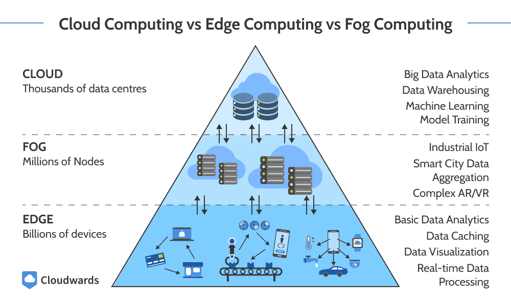
En data mining, ces concepts ont crées les types d'apprentissage edge ou fog, où les données d'apprentissage sont uniquement contenues sur l'entité edge ou fog et le modèle apprend de ces données. Lorsqu'un seul modèle est partagé à toutes les entités et que chaque modèle de chaque entité est utilisé pour construire un unique modèle final, cette pratique s'appelle le federated learning ou apprentissage fédéré. Ces paradigmes sont très populaires en IoT et IIoT.
Les bases de l'apprentissage automatique (machine learning)
Les algorithmes classiques
- Régression linéaire: Prédire des valeurs continues et linéaire. Le but est de minimiser l'espace moyen entre les valeurs. Qui est produit des caractéristique du modèle avec des poids et l'ajout d'un terme appelé le biais.
- Régression polynomiale: Prédire des valeurs continues et polynomiale. Grâce aux polynomes il est possible d'approximer toute fonction continue en augmentant le degré du polynome.
- Régression logistique: Utiliser pour faire de la classification binaire et donc prendre des décisions. La régression logistique utilise la fonction sigmoid qui retourne 1 ou 0.
- Arbres de décision: Utiliser pour faire de la classification multiclasse. Chaque noeud est calculé grace à l'entropie. L'entropie permet de savoir quelle classe permet de discriminer le plus les données. Le premier noeud est celui qui a l'entropie la plus élevée.
- SVM: Permet de discriminer efficacement des données en prenant la marge la plus ample possible entre les données discriminées/séparées.
- KNN: Regroupe les données similaires en se basant la similarité. KNN est lent sur des gros datasets.
- Random forest: Construit différents arbres de décision en splitant le dataset initial en sous-dataset afin d'entrainer les différents arbres de décision. Aucun sous-dataset ne doit avoir de données en commun pour que les résultats soient cohérents. Enfin, les résultats de chaque arbre sont combinées soit en faisant la moyenne (averaging) soit en votant la majorité (majority voting). Random forest réduit le sur-apprentissage et augmente l'accuracy comparé à un seul arbre classique.
- K means clustering: Algorithme non supervisé qui utilise des données non-labellisées. Regroupe les données en plaçant des centres de cluster au hasard initialement puis assigne chaque donnée au centre de cluster le plus proche. Ensuite, ajuste les centre de cluster et répète le process jusqu'à que le cluster soit stabilisé, c'est à dire qu'il sépare un maximum de données.
- Naive Bayes: Un algorithme de probabilité basé sur le théorème de Bayes qui est utilisé pour faire des prédictions. Naive veut dire que toutes les caractéristique sont indépendantes entre elles (c'est à dire non corrélés). Très bon sur la classification texte et l'analyse de sentimennts.
Difference beteween classification and regression ?
La classficiation permet de prédire une étiquette (binaire = oui ou non, mulitclasse = "rouge" ou "bleu", multi-étiquettes = "rouge" et "bleu").
Alors que la régression permet de prédire une valeur numérique continue.
Qu'est ce qu'est le biais/variance tradeoff ?
Attention: ici ne pas confondre le biais avec le terme de biais d'un modèle linéaire.
La généralisation de l'erreur d'un modèle peut être exprimé grace à 3 facteurs d'erreurs:
- Le biais: Provient de constat faux qui ont été assumés tel qu'assumer qu'un modèle est linéaire alors qu'il est quadratique. Un modèle intégrant un biais élevé va sous-apprendre le dataset d'entrainement.
- La variance: La sensibilité du modèle aux faibles variations. Un modèle avec un degré de liberté élevé (polynome de degrés élevés) va avoir une forte variance. Un modèle intégrant une variance élevée va sur-apprendre les données d'entrainement.
- L'erreur irréductible: Elle est due au bruit des données. L'unique façon de la réduire est de nettoyer les données.
Typiquement, augmenter la complexité d'un modèle va augmenter sa variance et réduire son biais. D'autre part, réduire la complexité d'un modèle va réduire sa variance et augmenter son biais. C'est ce que l'on appelle le tradeoff.
Qu'est ce que train-test split?
La fonction train_test_split va séparer le dataset d'entrainement en un sous-dataset d'entrainement et un set de validation. Ensuite, le modèle va s'entrainer sur le sous-set d'entrainement et être évaluer sur le set de validation.
Cette fonction intègre un paramètre random_state permettant de configuerer la graine de génération. De plus, cette fonction peut prendre en entrée plusieurs datasets intégrant le même nombre de ligne ce qui va les split au même indice (ce qui peut être utile si on a un dataframe séparé avec les labels par ex).
(Train-test split est différent de la validation croisée qui a une notion d'itération)
Les techniques (mathématiques ou pas) classiques utilisées
- Réduction de dimensionnalités: Quand il y a beaucoup de caractéristique, les données sont extremement dispersées ce qui ne permet pas de converger vers une solution générale donc surapprentissage. Permet de réduire le nombre de caractéristiques d'un dataset en préservant les caractéristiques principales qui sont les plus utiles. Une technique populaire est Principal Component Analysis (PCA). PCA: Réduit la dimensionalité du dataset tout en gardant la variance maximale entre les données afin que le dataset après réduction soit représentatif du dataset initial. T-SNE: ToDo
- Ensemble learning ou ensemble de méthode: Est une technique qui consiste à combiner des modèles d'apprentissage en un classeur. Deux techniques appelées respectivement bagging et boosting sont utilisées. Par exemple, une random forest est un classeur contenant de nombreux arbres de décision.
Le rôle des distributions (mathématiques) dans le ML ?
Dans le domaine des statistiques, il y a plus de 100 types de distributions à choisir pour modéliser des données. Les distributions peuvent être discrète ou continue (ou continue par partie?). Les distributions discrètes sont décrites avec la fonction de masse de probabilité et les fonctions continues sont décrites avec la fonction de densité de probabilité.
En général, les modèles paramétriques (RL, LR) se basent plus fortement sur une distribution de probabilité alors que les modèles non-paramétriques (arbres, KNN, SVM) ne font pas de suppositions/conjectures significatives sur la forme des données.
Les distributions sont souvent traduites en fonction de cout.
Fonction de coûts vs Fonction de perte
Les termes fonction de coûts et fonction de perte sont interchangeable en ML, elles permettent de mesurer l'erreur.
Qu'est que le terme Généralisation ?
On dit qu'un modèle généralise bien lorsqu'un modèle a la capacité de prédire avec précision des résultats pour de nouvelles données qui n'ont jamais été vu avant par le modèle lors de la phase d'entrainement. Un modèle généralise donc bien lorsqu'il applique ses connaissances apprises à un scénario du monde réel (avec des données réelles).
Les prochaines parties (prédiction, classification, ensemble learning, clustering, réduction de dimensionalité, détection d'anomalies et apprentissage par renforcement) détaillent les techniques principales de ML, ce sont des sections exhaustives, longues et théroriques. Il est donc conseillé de consulter uniquement la partie qui vous intéresse.
Une partie spécialement intéressante est: Batch Gradient Descent (BGD) vs Stochastic Gradient Descent (SGD).
Algorithmes de prédiction :
Régression linéaire:
Le but est de prédire une valeur numérique
$$
\hat{y} = \beta_{0} + \sum_{i=1}^{n} \beta_{i}x_{i} = h_{\theta}(x) = \theta \cdot X \text{ sous forme vectorielle avec un produit scalaire }
$$
Où la solution mathématique fourni est $\hat\theta = (X^{T}X)^{-1}X^{T}y$, cependant cette solution n'est pas acceptable car l'opération d'inversement de matrice est couteuse en temps (de l'ordre de $O(n^{3})$).
Démonstration: $y = X\theta + \epsilon$ ce qui revient au même que avant car $\epsilon$ est l'erreur irréductible et donc ce que l'on cherche à minimiser. C'est seulement une autre façon de l'écrire dans des conditions qui ne sont pas parfaites. Donc $\epsilon = y - X\theta$. On va chercher à avoir une erreur qui est toujours positive et on va la mettre au carré pour simplifier les calculs suivants de minimisation.
Donc on cherche à minimiser $\min_{\theta} \|\mathbf{y - X\theta}\|^{2}$ alors la fonction de perte associée est $J(\theta) = \|\mathbf{y - X\theta}\|^{2} = (y - X\theta)^{T}(y - X\theta)$ (erreur cuadratique moyenne) car selon la norme de Frobenius, une matrice A : $\|\mathbf{A}\|^{2} = A^{T}A$.
Pour trouver le minimum local, on applique la dérivée partielle sur le paramètre dont on cherche des solution qui est $\theta$: $\frac{\partial{J(\theta)}}{\partial{\theta}} = -2X^{T}(y-X\theta) = 0$ (=0 pour trouver un extremum local). On peut affirmer ici que l'on trouvera un minimum local car $J(\theta)$ est convexe.
Donc si on résoud, on trouvera : $\theta = (X^{T}X)^{-1}X^{T}y$
Or, le but ici est d'utiliser la descente de gradient afin de minimiser pas à pas une fonction de perte qui est MSE, ici $J(\theta) = MSE(h_{\theta}(x))$. MSE qui est une fonction qui calcule l'erreur (au carré car cela permet d'avoir que des valeurs positives et d'amplifier la valeur d'une erreur).
Pour chaque itération, (on débute avec $\theta$ pris aléatoirement -> donc à priori stochastique ?!) afin d'appliquer la descente de gradient (processus itératif qui réduit le gradient ou vecteur gradient calculé à la variable cible à chaque itération) : $\theta = \theta - \eta \cdot \nabla_{\theta}MSE(\theta)$ dont $\eta$ est le learning rate. Si $\eta$ est trop petit, l'algorithme prendra beaucoup de temps afin de converger. Lorsque le gradient est presque nul, le minimum est atteint.
Lorsque le gradient est négatif, cela indique que l’on se situe sur une pente descendante, ce qui signifie que le minimum local n’a pas encore été atteint. C’est pourquoi l’ajustement des paramètres (learning rate) est crucial : il doit permettre de réduire progressivement l’ampleur des mises à jour si la pente devient moins abrupte, afin d’éviter de dépasser le minimum et de favoriser une convergence stable vers la solution optimale
Batch Gradient Descent (BGD) vs Stochastic Gradient Descent (SGD) :
Premièrement, la descente de gradient est applicable sur des fonctions convexes. L'idée de la descente de gradient est de mettre à jour un paramètre de façon itérative (epoch) pour minimiser une fonction de coût.
Le vecteur gradient est l'application du gradient à une fonction qui contient plusieurs dimension (au moins 2). Le gradient donne la direction de la fonction (sur un plan si elle est croissante ou décroissante) mais aussi la norme du gradient donne la magnitude de la pente, c'est à dire à quelle point la pente est prononcée (ce qui permet d'ajuster le pas à chaque itération).
$$
\nabla_{\theta}f(x) = \begin{bmatrix}
\frac{\partial}{\partial\theta_{0}}f(x) \\
\frac{\partial}{\partial\theta_{1}}f(x) \\
.
.
. \\
\frac{\partial}{\partial\theta_{n}}f(x)
\end{bmatrix}
$$
La descente de gradient est défini comme ci-dessous: $$ \theta_{\text{next step}} = \theta - \eta \cdot \nabla_{\theta}f(x) $$
Pour rappel, dont $\theta$ est un vecteur contenant tous les paramètres du modèle.
Chaque itération où tout le jeu d'entrainement est utilisé est appelée une epoch, et l'ensemble/le nombre d'itérations est appelé epochs.
Cependant, il existe plusieurs typen de descente de gradient: Batch Gradient Descent (BGD) et Stochastic Gradient Descent (SGD).
La technique vue ci-dessus est la Batch Gradient Descent (BGD) car tout le jeu d'entrainement est utilisé à chaque itération (epoch) afin de calculer le vecteur gradient, ce qui le rend lent lorsque le jeu d'entrainement est grand.
Au contraire, la Stochastic Gradient Descent (SGD) choisit une seule observation du jeu d'entrainement à chaque itération pour calculer le gradient, ce qui le rend bien plus rapide. Stochastique signifie d'aléatoire. SGD est bien plus volatile et le learning rate est souvent réduit petit à petit lorsque l'algorithme se rapproche du minimum sinon l'algorithme a du mal a se stabiliser (au minimum local).
Remarque: Il est à noter que le gradient de la fonction MSE peut être simplifié:
$$
\nabla_{\theta}MSE(\theta) = \begin{bmatrix}
\frac{\partial}{\partial\theta_{0}}MSE(\theta) \\
\frac{\partial}{\partial\theta_{1}}MSE(\theta) \\
.
.
. \\
\frac{\partial}{\partial\theta_{n}}MSE(\theta)
\end{bmatrix} = \frac{2}{m}X^{T}(X\theta - y)
$$
Comparaison de la convergence de SGD et BGD:

Mini-batch Gradient Descent (MGD)
MGD est un mix de SGD et BGD. MGD consiste à calculer le gradient sur des petits sets d'instances appelés mini-batchs. Vu que c'est un set d'instances il y a un avantage seulement sur SGD, car qui dit set dit matrix dit calcul GPU dit boost de performance.
Concrètement, si on prend le cas du DL, et que l'on souhaite calculer le gradient de SSE en fonction d'un poids $w$. Il faut calculer la sortie prédite pour chaque observation du batch puis l'erreur pour chaque observation avec SSE.
Ensuite, le gradient du mini-batch est calculé via (une sorte de moyenne): $$ \frac{\partial{MSE}}{\partial{w}} = \frac{1}{B} \sum_{i=1}^B \frac{\partial{MSE}}{\partial{y_{pred_i}}} \cdot \frac{\partial{y_{pred_i}}}{\partial{w}} $$
La descente de gradient classique est donc ensuite utilisée pour optimiser la valeur souhaitée.
Comparaison de la convergence entre les trois méthodes (SGD, BGD et MGD):
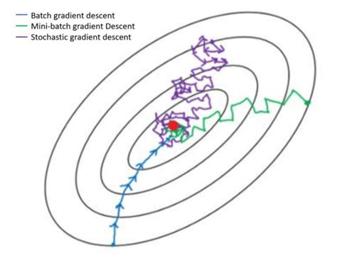
Présenté d'une autre façon:

Régression logistique (sigmoid):
Le but est de prédire l'appartenance à une classe de façon binaire (Oui appartient à la classe A ou non n'appartient pas à la classe A)
La fonction logistique est définie comme ci-dessous: $$ \sigma(z) = \frac{1}{1+e^{-z}} \\ \\ \text{where } z = \beta_{0} + \sum_{i=1}^{n} \beta_{i}x_{i} = X^{T}\theta $$
insérer graphe -> expliquer ce qu est un hyperplan , notion reutiliser dans SVM
Donc, la probabilité doit être (car classification binaire) $P(y) = \hat y = \left\{
\begin{array}{ll}
0 & \text{si } \sigma(z) < 0.5 , \\
1 & \text{si } \sigma(z) \geq 0.5.
\end{array}
\right.$
Afin de calculer les poids $\theta$ de $z$ pour construire le modèle, le but il faut donc que le modèle estime un $z$ élevé pour les observations positives $(y = 1)$ car $\displaystyle \lim_{z \to \infty} \sigma(z) = 1$.
Au contraire, pour les observations négatives (n'appartenant pas à la classe ciblée donc $y = 0$), le modèle doit estimer un $z$ bas car $\displaystyle \lim_{z \to -\infty} \sigma(z) = 0$.
Il faut donc que le modèle estime un grand $z$ pour $P(y = 1)$ et que le modèle estime un petit $z$ pour $P(y = 0)$ car on essaye de s'éloigner le plus possible du 0.5. Ces exagérations sont nécessaires car sinon $z$ va se retruver dans la zone d'ombre au milieu ou il n'est pas vraiment 0 ou 1-> on ne veut pas d'ambiguité.
La fonction de coût qui traduit le mieux cette idée utilise des logarithmes négatif ($- -\infty$) qui deviennent tres grand proche de 0. Si on prend une sortie positive ($y = 1$), on veut que notre fonction de cout coûte beaucoup si le modèle estime une probabilité $\sigma(z)$ proche de 0, car ça veut dire que le modèle est actuellement faux, et que la réalité a plus tendance à être $y = 0$ puisque $\sigma(z) < 0.5$. (Il faut donc ajuster les poids pour que le modèle soit plus vrai -> tout le but de la fonction de cout). Dans le cas contraire, on veut que notre fonction de coûts estime une probabilité nulle lorsqu'une probabilité $\sigma(z)$ est proche de 1 car cela veut dire que notre modèle est juste et que $y = 1$ est vrai. Donc, la fonction de coûts qui traduit le mieux cette idée est $-\log(\sigma(z))$.
En revanche, si on prend une sortie négative, on veut que notre fonction coute beaucoup si le modèle estime une probabilité $\sigma(z)$ proche de 1, car ça veut dire que le modèle est actuellement faux et nécessite des ajustements. Au contraire, lorsque le modèle estime une probabilité $\sigma(z)$ proche de 0, on veut que la fonction de coûts soit presque nulle pour montrer que le modèle est actuellement juste. La fonction qui traduit le mieux cette idée est: $-\log(1 - \sigma(z))$.
Seulement, ce constat est valable que sur une observation. Si on l'applique à l'ensemble du dataset, on obtient une expression appellée la parte logistique (log loss ou cross entropy binaire): $ J(\theta) = -\frac{1}{m} \sum_{i=1}^{m} [y^{i}\log(\sigma^{i}(z)) + (1-y^{i})\log(1-\sigma^{i}(z))]$ dont $y^{i}$ étant les différentes sorties positives ou négatives donc $y^{i} = 0$ ou $y^{i} = 1$.
$ J(\theta)$ exprime donc le cout. Si on souhaite minimiser le cout (et donc l'erreur, car la fonction de cout traduit l'erreur, plus le cout est grand plus l'erreur est grande et inversement), on applique la dérivé partielle par rapport $\theta$. Cependant, il n'existe pas de solution analytique, seulement la fonction de cout est convexe donc on peut utiliser la descente de gradient pour trouver une solution.
La dérivé partielle de la fonction de cout : $\frac{\partial}{\partial{\theta_{j}}}J(\theta) = -\frac{1}{m} \sum_{i=1}^{m} (\sigma(\theta^{T}x^{(i)}) - y^{i}) x_{j}^{(i)}$ pour l'ensemble du dataset. Pour chaque i-ème observation, on calcule l'erreur de prédiction et on multiplie par la j-ème variable, puis on calcule la moyenne sur l'ensemble des observations. Une fois que le vecteur gradient contenant toutes les dérivés partielles, on peut l'utiliser dans un algorithme de descente de gradient traditionnelle.
Pourquoi cette dérivé partiellle ? et pourquoi ici on applique à tout le dataset ?
Régression Softmax:
C'est une généralisation de la régression logistique pour prendre en compte plusieurs classes sans avoir d'entrainer plusieurs classeurs binaires puis les combiner (ensemble learning).
Le score $s_{k}(x)$ pour chaque classe $k$. A noter que chaque classe a son vecteur de paramètres $\theta^{k}$: $$ s_{k}(x) = x^{T}\theta^{(k)} $$
La probabilité que l'observation $x$ appartienne à la classe $k$ en appliquant au score la fonction softmax: $$ \hat{p}_{k} = softmax(S(x))_{k} = \frac{e^{s_{k}(x)}}{\sum_{j=1}^{K} e^{s_{j}(x)}} $$
$K$ étant le nombre de classes.
$S(x)$ vecteur contenant les scores (aussi appelés logits) de chaque classe pour l'observation $x$. $S(x) = (s_{1}(x), s_{2}(x), ..., s_{K}(x))$
$softmax(S(x))_{k}$ la probabilité que l'observation $x$ appartienne à la classe $k$.
Pour savoir quelle classe a été prédite, notée $\hat{y}$ la fonction $argmax$ doit être utilisé sur le vecteur de probabilités:
$$ \hat{y} = argmax(p) = argmax([p_{1}, p_{2}, ... , p_{K}]) $$
La fonction de coûts adéquate est l'entropie croisé (cross entropy).
Pour rappel, l'entropie: $$ E(y,p) = - \sum_{k=1}^{K} y_{k} log(\hat{p}_{k}) $$ $y_{k}$ est la probabilité que l'observation $y$ appartienne à la classe $k$.
Si on généralise pour l'ensemble des observations et qu'on applique pour chaque observation $i$ et qu'on calcule la moyenne sur tous les éléments, ça donne l'entropie croisée suivante (qui est notre fonction de coûts): $$ J(\theta) = -\frac{1}{m} \sum_{i=1}^{m} E(y_{i}, p_{i})_{k} = -\frac{1}{m} \sum_{i=1}^{m} \sum_{k=1}^{K} y_{k}^{(i)} log(\hat{p}_{k}^{(i)}) $$
La variable $y_{k}^{(i)}$ est la probabilité que l'observation $i$ appartienne à la classe $k$.
L'entropie croisée est une fonction convexe et peut donc être minimiser avec une descente de gradient.
Si K=2 alors on retrouve la fonction de probabilité de la régression logistique
$$ \hat{p}_{k} = softmax(S(x))_{k} = \frac{e^{s_{k}(x)}}{\sum_{j=1}^{2} e^{s_{j}(x)}} $$
car $$ p_{1} = \frac{e^{s_{1}(x)}}{e^{s_{1}(x)} + e^{s_{2}(x)}} = \frac{1}{1 + \frac{e^{s_{2}(x)}}{e^{s_{1}(x)}}} = \frac{1}{1 + e^{s_{2}(x) - s_{1}(x)}} $$ Si $z=-(s_{1}(x) - s_{2}(x))$ alors : $$ p_{1} = \frac{1}{1 + e^{-z}} $$
On retrouve donc notre regression logistique pour la classe k=1. On pourrait démontrer la même chose pour $k=2$, mais vu que $K=2$ si on calcule pour une des deux alors $1-p_{k}$ est la probabilité de l'autre classe.
Utilisation
La fonction Softmax prend en entrée un vecteur de logits (qui est le vecteur de score $S(x)$ et où les poids pour chaque classe $k$ ont été calculés pour l'observation $x$) et la transforme en un vecteur de probabilité $p = [p_{1}, p_{2}, ... , p_{K}]$. Donc la fonction Softmax transforme le vectuer de logits S(x) pour l'observation x en une distribution de probabilité pour cette observation.
Le fait de transformer un vecteur en une distribution de probabilité est très utile en Deep Learning où une couche de réseau de neurone présente en sortie un vecteur de poids et il est voulu la prédiction d'une classe en sortie du modèle donc on utilise Softmax.
Régression polynomiale:
$$ P_{n}(x) = \sum_{i=0}^{n} a_{i} x^{n} = a_{0} + a_{1}x + a_{2}x^{2} + ... + a_{n}x^{n}$$
La régression polynomiale peut tout modéliser sur un plan (2D). Néanmoins, cette méthode génère énormément de paramètre ce qui peut sur-ajuster (sur-entrainement) les données. Et de plus, comment choisir le degré du polynome ?
La fonction de cout est identique à celle de la régression linéaire qui est MSE car ici $\theta$ est le même seulement les variables (ou features) ont des degrés différents. Je rappelle MSE permet de calculer l'erreur d'une fonction. Donc $J(\theta) = MSE(\theta)$. Ici, $\theta = (a_{0}, a_{1}, ... , a_{n})$.
Néanmoins, il est nécessaire d'appliquer une régularisation à cette fonction de cout sinon le modèle va trop sur-ajusté.
Pour cela, la régularisation de ridge est mise en place, elle consiste à maintenir les paramètres (coefficients de pondération = $\theta$ = $a_{0}, a_{1}, ... , a_{n}$) aussi petit que possible. La régularisation de Ridge (ou aussi appelée régularisation L2) ⁉ $$ J(\theta) = MSE(\theta) + \alpha\frac{1}{2}\sum_{i=0}^{n} \theta_{i}^{2} $$
- Si $\alpha = 0$, alors on a affaire au modèle de départ
- Si $\alpha$ est grand, alors les grands coeffeficients seront pénalisés (car si $\alpha$ grand il y aura moins de différence entre les petits coefficients qui auront un cout élevé et les grands coefficients qui auront également un cout élevé), et le résultat est une ligne horizontale passant par la moyenne
- On souhaite $\alpha$ petit à modéré afin que le modèle ne sur-ajuste pas trop pour que la courbe commence à prendre le chemin de la tendance.
insérer graphe avec alpha = 1 ou 1e-5, ou 0 ou tres tres grand -> à faire dans une case code
Naive Bayes (Théorème de Bayes):
Théorème de Bayes $$ P(H|X) = \frac{P(X|H)P(H)}{P(X)} $$
Deux concept définissent le théorème de Bayes: la probabilité à postériori et la probabilité à priori.
$P(H|X)$ est la probabilité à postériori car c'est la probabilité de H sachant X. Par exemple, si on suppose que notre jeu de données décrit des clients par leur âge et leur revenue, et que respectivement X est un client qui a 35 ans et un revenue de 40k euros. Si on supose également que H est l'hypothèse que notre client achète un ordinateur alors P(H|X) exprime la probabilité que le client X achète un ordinateur étant donné l'age et le revenue de ce client.
Au contraire, $P(H)$ est la probabilité à priori pour H. Par exemple, c'est la probabibilité qu'un client donné achète un ordinateur indépendamment de son age, son revenur et tout autre information.
Similairement, $P(X|H)$ est la porbabilité à postériori et c'est la probabilité de X sachant H. Par exemple, c'est la probabibilité qu'un client X ait 35 ans et qu'il gagne 40k euros sachant que nous savons qu'il va acheter un ordinateur.
La classification de Naive Bayes
Le classeur Naive Bayes ou Bayes simple se construit selon les étapes suivantes:
- Si D est notre jeu de données d'entrainement, alors chaque observation est représentée par un vecteur X contenant les échantillons $(x_{1}, x_{2}, ..., x_{n})$ de chaque caractéristique , représentant n caractéristiques pour chaque observation, respectivement, $A_{1}, A_{2}, ..., A_{n}$.
- Supposons qu'il y a m classes prédites telles que $C_{1}, C_{2}, C_{m}$ qui sont respectivement chaque classe prédite. Etant donné une observation X, le classeur va prédire que X appartient à la classe ayant la plus haute probabilité à postériori. C'est à dire que le classeur prédit que l'observation X appartienne à la classe $C_{i}$ si et seulement si:
$$ P(C_{i}|X) > P(C_{j}|X) \text{pour ∀j, } 1 \leq j \leq m \text{, } j \neq i$$
Donc, il faut maximiser $P(C_{i}|X)$. La classe $C_{i}$ pour laquelle $P(C_{i}|X)$ est maximisée est appellée l'hypothèse à postériori maximale: $$ P(C_{i}|X) = \frac{P(X|C_{i})P(C_{i})}{P(X)} $$ - Comme $P(X)$ est constant pour toutes les classes, seul $P(X|C_{i})P(C_{i})$ a besoin d'être maximisé. (Si la probabilité à priori des classes ne sont pas connues, c'est à dire $P(C_{i})$ alors il est souvent assumé que $P(C_{1}) = P(C_{2}) = ... = P(C_{m})$ alors seul $P(X|C_{i})$ aurait besoin d'être maximisé). Si on continue avec la méthode classique, $P(C_{i})$ est le nombre d'observation ayant la classe $C_{i}$ sur l'ensemble des observations du jeu de données D.
- Si on a un dataset avec beaucoup de caractéristiques, alors la puissance de calcul nécessaire pour calculer $P(X|C_{i})$ est très élevée. Pour réduire ce temps de calcul, l'hypothèse d'indépendance naive est faite (c'est pourquoi la tehcnique s'appelle Naive Bayes), c'est à dire que les classes sont indépendantes entre elles. Donc:
$$
P(X|C_{i}) = \prod_{k=1}^{n} P(x_{k}|C_{i}) = P(x_{1}|C_{i}) \times P(x_{2}|C_{i}) \times ... \times P(x_{n}|C_{i})
$$
Pour rappel, ici $x_{k}$ se réfère à la valeur de l'attribut $A_{k}$ pour l'observation X. Pour chaque attribut, on regarde si l'attribut est une catégorie ou une valeur continue (numérique). Par exemple, pour calculer $P(X|C_{i})$, on différencie selon les critère suivant:
(a). Si $A_{k}$ est catégorique, alors $P(x_{k}|C_{i})$ est le nombre d'observations de la classe $C_{i}$ dans D ayant la valeur $x_{k}$ pour l'attribut $A_{k}$ divisé par le nombre d'observation total de la classe $C_{i}$ dans D. (b). Si $A_{k}$ est une valeur continue, alos il est typiquement assumé qu'il suit une distribution Gaussienne de moyenne $\mu$ et d'écart-type $\sigma$ défini par: $$ g(x,\mu,\sigma) = \frac{1}{\sqrt{2\pi\sigma}} e^{-\frac{(x-\mu)^2}{2\sigma^2}} $$
tel que $$ P(x_{k}|C_{i}) = g(x_{k},\mu_{C_{i}},\sigma_{C_{i}}) $$ $\mu_{C_{i}}$ et $\sigma_{C_{i}}$ sont respectivemlent la moyenne et l'écart-type pour les valeurs de l'attribut $A_{k}$. Par exemple, pour l'observation X = (35, 40k euros) ou $A_{1}$ est l'age qui est 35 et $A_{2}$ est le revenue. Si le label de la classe buys_computer = yes, si l'attribut age n'a pas été discretisé alors il existe comme une valeur continue. Supposons que dans le jeu de données D on trouve que les clients correspondant ont en moyenne 38 ans avec plsu ou moins 12 ans d'écart par rapport à la moyenne (+-), alors $\mu = 38$ et $\sigma=12$ et donc on peut calculer $P(age=35|buys_computer=yes)$. 5. Pour prédire le label de classe pour l'observation X, $P(X|C_{i})P(C_{i})$ est calculé pour chaque classe $C_{i}$. Le classeur prédit que le label de la classe pour l'observation X est la classe $C_{i}$ si et seulement si: $$ P(X|C_{i})P(C_{i}) > P(X|C_{j})P(C_{j}) \text{pour ∀j, } 1 \leq j \leq m \text{, } j \neq i$$ En d'autres termes, la classe $C_{i}$ prédites est celle qui a la valeur $P(X|C_{i})P(C_{i})$ maximale.
Pourquoi P(X) est constant pour toutes les classes ?
Les variantes
- Naive Bayes Gaussian: Appliqué à des variables continues et suivent une distribution Gaussienne
- Naive Bayes Multi-nomial: Appliqué à des variables discrètes (loi binomial)
- Naive Bayes Bernoulli: Appliqué à des variables binaires (loi de bernoulli)
Le choix du classeur Naive Bayes dépend donc de la distribution antérieur des données
Conclusion
| Pros | Cons |
|---|---|
| b | a |
| Use case |
|---|
| hihi |
K-nearest neighbors (KNN)
Précision: C'est un algorithme différent de K-means. KNN est un algorithme SUPERVISE car les classes des données d'entrainement sont déjà connues. De plus, ce n'est pas un algorithme de clustering. On pourrait croire qu'il fait partie de la catégorie du clustering ou K-means car KNN utilise des mesures de similarité pour classifier une observation.
KNN est donc un algorithme de classification supervisé. C'est un des algorithmes les plus simples de ML.
KNN est dit lazy learner car il n'apprend pas sur le jeu d'entrainements, les données d'entrainements sont seulement utilisée pour placer une nouvelle donnée.C'est un algorithme qui n'est pas paramétrique car aucun paramètre n'est tiré du jeu d'entrainement.
Pour classifier une nouvelle donnée, KNN calcule sa distance en utilisant des mesures de similarité (distance euclidienne, similarité cosinus, etc.) par rapport à toutes les instances du jeu d'entrainement. Puis un seuil $k$ est fixé, par exemple $k=3$, pour classifier une nouvelle observation KNN calcule sa distance par rapport à toutes les données du jeu d'entrainement. Puis, il prend les 3 voisins les plus proches ($k=3$) et regarde leur classes et prend la classe majoritaire. Si 2 voisins appartiennent à la classe 1 et 1 voisin à la classe 2. Alors la nouvelle observation sera classé comme appartenant à la classe 1.
Pour consulter les mesures de similarité possibles: Les mesures de similarité
Algorithme de classification :
Arbre de décision:
Le but est de sélectionner la variable avec le plus grand gain d'information afin de réaliser une classification optimale
Soient P et N deux classes et S un ensemble d'instances contenant p éléments de P et n éléments de N.
$$ \text{Entropy (mesure l'incertitude ou la désorganisation dans un système = concretement la distance entre des objets: } \quad E(S) = - \sum_{i=1}^{n} p_{i}\log_{2}(p_{i}) \text{ dont } 0 \leq E(S) \leq 1 \\ $$ Dont $p_{i}$ qui est la proportion d'exemples de la i-ème classe de notre jeu d'aprentissage S. Ici, S est composé de deux classes: P et N. Donc, arbitrairement, $p_{0} = Proportion(P) = \frac{p}{n+p}$ et $p_{1} = Proportion(N) = \frac{n}{n+p}$
Si toutes les instances de S sont de la même classe alors $E(S) = 0$, au contraire si tous les individus sont distribués uniformément alors $E(S) = 1$, ainsi il y a autant de positifs que de négatifs l'entropie est maximale.
$$ \text{} \\ \text{L'information nécessaire pour déterminer si une instance fait partie de P ou de N: } I(p,n) = E(S) = -\frac{p}{n+p}\log_{2}(\frac{p}{n+p})-\frac{n}{n+p}\log_{2}(\frac{n}{n+p}) \\ $$ Soient les ensembles $\{S_{1}, S_{2}, ..., S_{v}\}$ formant une partition de l'ensemble $S$ en utilisant la variable $A$. Toute partition $S_{i}$ contient $p_{i}$ instances de P et $n_{i}$ instances de N.
L'information nécessaire pour classer les sous-arbres $S_{i}$ est : $ E(A) = \sum_{i=1}^{v} \frac{ p_{i}+n_{i} }{p + n} I(p_{i}, n_{i})$
Gain d'information (utilisé dans les arbres de décision): $$ \quad IG = Entropy(Parent) - \sum \frac{|Child|}{|Parent|}Entropy(Child) = I(p, n) - E(A) $$
Machine à vecteur de supports (SVM):
Cas SVM linéaire
SVM est un algrithme qui vise à construire un hyperplan afin de maximiser la marge. La marge est la distance entre la frontière de séparation et les échantillons les plus proches. Ces échantillons les plus proches sont appelés vecteurs de support. La frontière de séparation est donc choisie comme celle qui maximise la marge.
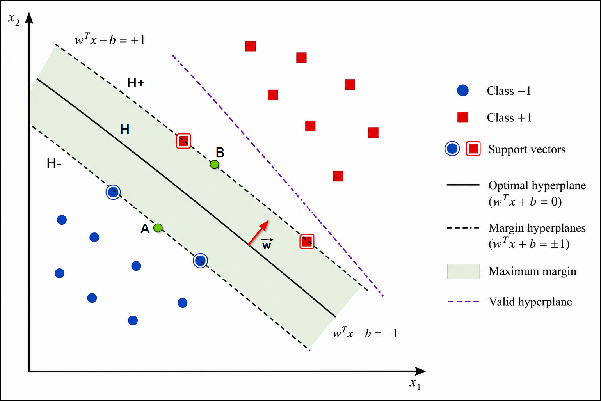
Il existe donc une infinité d'hyperplans séparateur. La résolution des problèmes de classification ou de régression avec SVM passe par la modélisation de la fonction de l'hyperplan qui est linéaire dans le cas linéaire: $$ y = hyperplan(x) = h(x) = \langle \vec{w}, \vec{x} \rangle + w_{0} = w^{T}x + w_{0} $$
où $x$ est le vecteur d'entrée contenant nos observations et $w_{0}$ est le biais et qui pourrait être noté $b$. $hyperplan(x)$ est ici une fonction linéaire qui fait correspondre un vecteur $x$ à une sortie $y$.
Le vecteur $x$ est $(x_{1}, ..., x_{N})$ et le vecteur de poids $w$ est $(w_{1}, ..., w_{N})$.
On se limite pour l'instant à un problème de discrimination binaire (à deux classes), c'est à dire $y \in \{-1, 1\}$, donc soit l'instance classé est positive soit elle est négative.
La frontière de séparation/décision est $h(x) = 0$ appelé hyperplan séparateur. Le signe de $h(x)$ donne le coté sur lequel $x$ est localisé, ce qui permet de décider de la classe de $x$. C'est à dire si $h(x) \geq 0$ alors $x$ est de classe $1$ sinon $x$ est de classe $-1$. Afin de faciliter l'optimisation, on choisit de normaliser $w$ et $w_{0}$ de telles manières que les échantillons à la marge ($x^{+}_{marge}$ et $x^{-}_{marge}$) satisfassent: $$ \begin{cases} \langle \vec{w}, \vec{x} \rangle + w_{0} \geq 1 & \text{si } y = 1 \\ \langle \vec{w}, \vec{x} \rangle + w_{0} \leq 1 & \text{si } y = -1 \end{cases} $$
Si on résume avec les éléments du graphique:
- $\vec{w}$ est perpendiculaire à $H$.
- Soit $B$ un point de $H+$, et $A$ le point le plus proche sur $H-$. Pour tout point $O$, on a: $$ \vec{OB} = \vec{OA} + \vec{AB} $$
$\vec{AB}$ est parallèle à $\vec{w}$. Donc il existe $\vec{AB} = \lambda \vec{w}$ donc $\vec{OB} = \vec{OA} + \lambda \vec{w}$.
On a également: $$ \begin{cases} B \in H+ => \langle \vec{w}, \vec{OB} \rangle + w_{0} = 1 \\ A \in H- => \langle \vec{w}, \vec{OA} \rangle + w_{0} = -1 \end{cases} $$
Donc si $\vec{x} = \vec{OB}$, on a: $$ \langle \vec{w}, (\vec{OA} + \lambda \vec{w}) \rangle + w_{0} = 1 $$
Avec la seconde équation $w_{0} = -1 - \langle \vec{w}, \vec{OA} \rangle$, si on remplace on a: $$ \langle \vec{w}, (\vec{OA} + \lambda \vec{w}) \rangle -1 - \langle \vec{w}, \vec{OA} \rangle = 1 $$
$$ \langle \vec{w}, \lambda \vec{w} \rangle + \langle \vec{w}, \vec{OA} \rangle - \langle \vec{w}, \vec{OA} \rangle = 2 $$
$$ \lambda \langle \vec{w}, \vec{w} \rangle = 2 $$
$$ \lambda = \frac{2}{\langle \vec{w}, \vec{w} \rangle} = \frac{2}{\left\| \vec{w} \right\|} $$
La largeur de la marge est donc $\left\| \lambda w \right\|$, où $w$ est le vecteur directeur et $\left\| \lambda \right\|$ son amplitude.
La maximisation de la marge, c'est à dire son amplitude $\lambda$, revient à minimiser $\left\| w \right\|$. On minimisera la fonction objective $\left\| w^{2} \right\|$ pour simplifier les calculs. Tout en respectant la contrainte: $ y(\langle \vec{w}, \vec{x} \rangle + w_{0}) \geq 1 $ ou $y(\langle \vec{w}, \vec{x} \rangle + b) \geq 1$
Explication de la contrainte: Le but d'un algorithme supervisé est d'apprendre la fonction $h(x)$ par le biais d'un ensemble d'apprentissage: $$ \{(x_{1}, y_{1}), (x_{2}, y_{2}), ..., (x_{k}, y_{k}), ..., (x_{N}, y_{N}),\} \subset R^{N} \times \{(-1, 1\} $$
où, $x_{k}$ sont les points dans un espace de dimension $N$, $y_{k}$ sont les labels qui valent $\pm 1$, $N$ est la taille de l'ensemble d'apprentissage. Si ce problème est linéairement séparable, c'est à dire qu'une solution de classification existe, alors dans le meilleur des cas le signe ET la valeur de $h(x_{k})$ seront égal à celui de $y_{k}$. Donc: $$ y_{k} h(x_{k}) \geq 1 \quad \forall k \in \{1, N\} $$ autrement dit: $$ y_{k}(\langle w_{k}, x_{k} \rangle + w_{0}) \geq 1 $$
Si on résume, le problème revient à minimiser $\left\| w \right\|$ sous la contrainte précedente, c'est donc un problème d'optimisation. Ce problème peut être résolu grâce à la méthode du Langrangien qui transforme un problème avec contrainte en un problème sans contrainte.
Le Langrangien $L_{p}$ s'exprime comme la somme des fonctions à minimiser (fonction objective = $\frac{1}{2}\left\| \vec{w} \right\|^{2}$) et de l'opposé de chaque contrainte $\psi_{i}$ (qui est concrètement $y(\langle \vec{w}, \vec{x} \rangle + b) - 1 \geq 0$) multiplié par un constante $\alpha_{i} \in R^{+}$. Les termes $\alpha_{i}$ constituent les multiplicateurs de Lagrange. Donc: $$ L_{p}(w, w_{0}, \alpha) = \frac{1}{2}\left\| \vec{w} \right\|^{2} - \sum_{i=1}^{N} \alpha_{i}(y_{i}(\langle w_{i}, x_{i} \rangle + w_{0}) - 1) = \frac{1}{2}\left\| \vec{w} \right\|^{2} - \sum_{i=1}^{N} \alpha_{i}y_{i}(\langle w_{i}, x_{i} \rangle + w_{0}) + \sum_{i=1}^{N} \alpha_{i} $$
$L_{p}$ doit être minimisé donc son gradient doit être nul par rapport $w$ et $w_{0}$ (qui sont bien deux variables distintes et $w_{0}$ est aussi noté $b$): $$\frac{\partial{L_{p}}}{\partial{w}} = w^{*} - \sum_{i=1}^{N} \alpha_{i} y_{i} x_{i} = 0 \quad \text{ et } \quad \frac{\partial{L_{p}}}{\partial{w_{0}}} = \frac{\partial{L_{p}}}{\partial{b}} = - \sum_{i=1}^{N} \alpha_{i} y_{i} = 0 $$
Grâce à cela on obtient: $$ \begin{cases} w^{*} = \sum_{i=1}^{N} \alpha_{i} y_{i} x_{i} \\ \sum_{i=1}^{N} \alpha_{i} y_{i} = 0 \end{cases} $$
De $L_{p}$ et des deux équations ci desous on obtient la formulation duale $L_{D}$ en remplaçant $w$: $$ L_{D}(\alpha) = \sum_{i=1}^{N} \alpha_{i} - \frac{1}{2} \sum_{i=1}^{N} \sum_{j=1}^{N} \alpha_{i} \alpha_{j} y_{i} y_{j} \langle x_{i}, x_{j} \rangle $$ sous les contraintes $\alpha_{k} \geq 0$ et $\sum_{i=1}^{N} \alpha_{i} y_{i} = 0$. Ce qui nous donnes les multiplicateurs de Lagrange optimaux $\alpha^{*}_{i}$.
Afin d'obtenir l'hyperplan solution, on remplace $w$ par sa valeur optimale $w^{*}$ dans l'équation de l'hyperplan: $$ h(x) = \sum_{i=1}^{N} \alpha_{i} y_{i} \langle x_{i}, x \rangle + w_{0} = \sum_{i=1}^{N} \alpha_{i} y_{i} (x_{i} \cdot x^{T}) + w_{0} $$
La défintion mathématique d'un vecteur de support est un vecteur de support dont le multiplicateur de Lagrange est non nul.
Pour aller plus loin, il est possible de démontrer que seuls les observations correspondant aux vecteurs de supports sont réellement utile pour la phase d'apprentissage. Si les vecteurs de supports sont préalablement connus, on pourrait effectuer l'apprentissage sans tenir compte des autres observations.
Comment est effectuée la classification d'une donnée?
La classe d'une nouvelle donnée $x$ est $\pm 1$ et elle est fournie par le signe de $h(x)$. Si $h(x) \geq 1$ alors $x$ est au dessus de $H^{+}$ sinon il est considéré que $x$ est en dessous de $H^{-}$.
Cas où les données ne sont pas linéairement séparable

à droite les données ne sont pas linéairement séparable car $f(x) = x^{2} + y^{2}$ donc $f(x)$ n'est pas une fonction linéaire.
Par conséquent, dans le cas où les données ne sont pas linéairement séparables, l'idée consiste à trouver une transformation de l'espace de données dans un autre espace dans lequel les données sont linéairement séparables.
De manière générale, il sera toujours possible de séparer $N$ points dans un espace de dimension $N+1$. Par exemple dans deux dimensions on les couples $(x, y)$ et si on projet en 3 dimesions on aure les couples $(x, y, x \cdot y)$. La nouvelle dimension qui est une combinaison des dimensions précedentes.
Donc si on projette la fonction quadratique (cercle figure d'avant) précédente dans un espace à 3 dimensions ($2+1$):

Donc les mêmes données projetés dans 3 dimensions: $(x_{1}, x_{2}, \sqrt{2}x_{1}x_{2})$.
La surface circulaire est donc devenu une sufrace linéaire en 3 dimensions.
La transformation consiste à faire correspondre à chaque vecteur d'entrée $x$ un nouveau vecteur d'attributs $F(x)$. Dans le cas précédent, les trois attributs: $$ f_{1} = x_{1}^{2}, f_{2} = x_{2}^{2}, f_{3} = \sqrt{2}x_{1}x_{2} $$
Ici, $F(\vec{x}) = (x_{1}^{2}, x_{2}^{2}, \sqrt{2}x_{1}x_{2})$
Donc, pour trouver l'hyperplan séparateur de ce nouvel espace, il faut que les calculs de la formule duale du Langrangien $L_{D}$ qui utilise le produit scalaire entre toutes les paires de données $\langle x_{i}, x_{j} \rangle$ doivent être remplacées par $\langle F(x_{i}), F(x_{j}) \rangle$. Il se trouve que se produit scalaire peut être calculé sans avoir à calculer au préalable $F$. Il est possible de démontrer que $\langle F(x_{i}), F(x_{j}) \rangle = \langle x_{i}, x_{j} \rangle^{2}$. Cette expression est appelée la fonction noyau qu'on note $K(x_{i}, x_{j}) = \langle F(x_{i}), F(x_{j}) \rangle = \langle x_{i}, x_{j} \rangle^{2} = (x_{i}^{T}x_{j})^{2}$.
La fonction noyau peut être appliqué à toutes les paires d'entrées de données d'entrées (= appliqués sur les observations deux à deux d'où les indinces i et j) afin d'évaluer le produit scalaire des deux paires dans le nouvel espace (= la fonction noyau permet de calculer la valeur pour le nouvel espace $N+1$ ajouté afin d'avoir une séparation linéaire).
Donc la fonction noyau définit le nouvel espace de transformation.
Ici, le noyeau est polynomial car K est une fonction polynomiale.
Est-ce qu'il est possible d'utiliser n'importe quelle fonction noyau ?
Les fonctions noyaux $K$ doivent respecter la condition de Mercer
Parmi les fonctions noyaux, on retrouve:
- Noyau (Kernel) polynomial: $K(x,y) = (\langle x, y \rangle + c)^{m}$ ,$m \in R$ et $c \geq 0$
- Noyau (Kernel) gaussien aussi appelé RBF (Radial Basis Function): $K(x,y) = e^{-\frac{1}{2} \frac{\left\| x - y \right\|^{2}}{\sigma^{2}}}$
- Noyau (Kernel) sigmoid existe également.
Comment une nouvelles données est-elle classifiée?
Le calcul des coefficient $\alpha_{i}$ en optimisant le Langrangien devient: $$ L_{D}(\alpha) = \sum_{i=1}^{N} \alpha_{i} - \frac{1}{2} \sum_{i=1}^{N} \sum_{j=1}^{N} \alpha_{i} \alpha_{j} y_{i} y_{j} K(x_{i}, x_{j}) $$
Donc, l'équation du séparateur devient: $$ h(x) = \sum_{i=1}^{N} \alpha_{i} y_{i} K(x_{i}, x) + w_{0} $$
Donc de la même façon que précédemment pour le SVM linéaire, le signe de $h(x)$ permet de déterminer la classification d'une donnée.
Conclusion
| Pros | Cons |
|---|---|
| N/A | Le SVM ne permet pas l'extraction d'un modèle compréhensible |
| N/A | Inadapté pour un très grand volume de données |
| N/A | Choix de la fonction noyau: pas de solution à l'heure actuelle si ce n'est que par essai/erreur |
| Use case |
|---|
| hihi |
Les points essentiels:
- La fonction noyau permet de transformer les données initiales en un espace de dimension supérieur où les données sont séparables linéairement par un hyperplan.
Ensemble Learning
Ensemble Learning est une méthode qui consitue à combiner des classeurs en un seul classeur. Deux techniques se distinguent: bagging et boosting.
- Bagging: Le résultat des classeurs est combiné via un vote majoritaire. Par exemple, si on a 50 classeurs et que 30 classeurs prédisent la couleur jaune et 20 la couleur verte, alors le classeur combiné va prédire la couleur jaune qui est ici majoritaire. Le bagging améliore la précision d'un classeur instable. Pour chaque classeur un échantillon aléatoire du jeu d'entrainement est tiré afin d'entrainer le modèle du classeur en question dont des valeurs qui peuvent se répéter car l'échantillonage est fait avec remise.
- Boosting: Le boosting est une technique qui consiste à construire un classeur fort en corrigeant petit à petit un classeur initiale faible entrainer sur une partie des données d'entrainement. Si on prend un ensemble S, notre jeu d'entrainement, alors si on entraine un modèle $m_{1}$ un sous-ensemble $S_{1} < S$ puis un modèle $m_{2}$ sur un sous ensemble $S_{2} < S - S_{1}$ et un modèle $m_{3}$ sur un sous ensemble $S_{3} < S - S_{1} - S_{2}$, alors le modèle $m_{1}$ va apprendre les imperfection du sous-ensemble $S_{1}$, le modèle $m_{2}$ les imperfections du sous ensemble $S_{2}$ et le modèle $m_{3}$ les imperfections du sous-ensemble $S_{3}$. Ce qui va faire que chaque modèle est très sur-ajusté à son sous-ensemble donc intègre une bonne performance sur le sous-ensemble. Ensuite, les modèles seront combinés par un vote majoritaire et auront appris les caractéristiques de chaque sous-ensembles:

Donc la différence se joue essentiellement au niveau des sous-ensemble choisit pour chaque modele composant le classeur. Avec le bagging les instances de ces sous-ensembles peuvent se répéter car le tirage est réalisé avec remise. En revanche, avec le boosting les données des sous-ensembles sont strictement différents afin d'apprendre les caractéristiques de chaque sous ensemble. (En gros le boosting c'est l'exraction de caractéristique d'un sous ensemble jusqu'à que tout le set soit parcouru = apprendre toutes les caractéristique de chaque sous ensemble)
Pour chacune des méthodes, un vote majoritaire est réalisé afin de combiner les classeurs.
Le bagging vise à réduire la variance, tandis que le boosting vise à réduire le biais.
Random Forest (bagging)
Une Random Forest est un ensemble de (classeurs) arbres de décision entrainer avec la méthode (d'ensemble learning) de bagging.
Adaptive Boosting : AdaBoost (boosting)
AdaBoost est une méthode d'apprentissage d'ensemble (= comment on apprend un ensemble (par exemple une observation par une observation ou 5 par 5)), qui est toute l'essence du boosting ou les exemples les plus faibles vont avoir un poids plus élevé pour être appris.
AdaBoost est itératif et un vote pondéré est effectué pour obtenir le classeur final. Le vote pondéré permet de tenir compte de la précision de chaque classeur lors de la combinaison finale.
Dans AdaBoost un poids est assigné à chaque observation. Le poids d'une instance classé à l'itération i sera augmenté afin d'avoir une plus grande probabilité à l'itération i + 1.
Initialement tous les exemples ont un poids identiques, puis à chaque étape, les poids des exemples mal classés par le classeur sont augmentés, forçant ainsi le classeur à se concentrer sur les exemples difficiles de l'échantillon.

La figure montre les classeurs appris lors du processus AdaBoost à chaque itération. Le premier classeur a beaucoup d'instances mal classées, donc les poids de ces instances vont être boostées.
Le second classeur est meilleur cependant sur ces instances (mal classé par le premier classeur). Et aisni de suites.
Puis les classeurs sont combinées en un classeur final qui aura appris toutes les spécificités du jeu d'entrainements, ce qui est le but du boosting de favoriser les instances faibles afin d'apprendre chaque spécificités d'un jeu d'entrainement.
Comme mentionné précédemment, le vote est pondéré c'est à dire qu'un poids est également attribué à chaque classeur afin qu'il influence plus ou moins le vote final. LA formule du poids des classeurs implémente le paramètre $\eta$ qui est également le learning rate ici. La figure ci-dessous montre la prédiction des classeurs pour des learning rate différents:

L'erreur doit etre calculé pour chaque classeur afin de savoir lequel s'ajuste le plus aux données. Le plus précis est le classeur (c'est à dire l'erreur la plus faible), le plus haut va être son poids afin qu'il influence plus le classeur final.
L'erreur est la suivante: $$ r_{j} = \sum_{i=1}^{m} w_{i} \times err(X_{j}) $$
ou $err(X_{j})$ est égale à 1 un si l'exemple (ou l'observation) a été mal classé, et 0 si bien classé.
Le poids $\alpha_{j}$ de chaque classeur dépend de l'erreuir de chaque classeur: $$ \alpha_{j} = \eta \times log(\frac{1-r_{j}}{r_{j}}) $$
(l'erreur $r_{j}$ doit être normalisé entre 0 et 1 pour que la formule soit valable)
LEs poids de chaque instance (observation/exemple) est mis à jour selon la formule suivante:
$$ w^{(i)} \leftarrow \left\{ \begin{array}{l} w^{(i)} \quad \text{ si }err(X_{j}) = 0 \\ w^{(i)}exp(\alpha_{j}) \quad \text{ si }err(X_{j}) = 1 \end{array} \right. $$
A chaque fois q'un nouveau classeur est entrainé , il utilise les poids des instances mis à jour du classeur antérieur.
AdaBoost peut entrainer tout type de classeur.
Gradient Boosting (boosting)
Le gradient boosting est évidemment un algorithme de boosting où chaque nouveau modèle est entrainé pour minimiser la fonction de coût (comme MSE ou entropie croisée) du modèle précédent en utilisant la descente de gradient, ce qui permet au classeur final de s'adapter là ou le premier modèle n'a pas pu s'adapter.
Le modèle se concentre de corriger les erreurs spécifiques que le modèle antérieur n'a pas pu corriger. C'est à dire où l'erreur résiduel $r$ est différente de 0 car $r = y - \hat{y}(X)$ donc si le modèle antérieur a pu corriger l'erreur alors $r = 0$ car la prédiction $\hat{y}(X)$ est juste. Donc, les modèles suivants se concentront pour corriger l'erreur que le modèle précédent n'a pas pu corriger, ce qui est exactement du boosting car on corrige petit à petit les faiblesses du modèle en choisissant le set de données sur lequel le modèle n'a pas pu se corriger (et donc où l'erreur résiduelle est non nulle).
Exemple:
Un classeur donné consiste en plusieurs arbres de décision qui sont entrainés pour corriger l'erreur du précédent. Dans la première itération $Tree 1$ est entrainé sur les données initiales $X$ et les classes réelles $y$.

Dans la seconde itération, $Tree 2$ est entrainé également sur les caractéristiques $X$ du modèle et les erreurs $r_{1}$ du modèle $Tree 1$. Donc, à chaque nouvelle itération le modèle suivant va tenter de réduire l'erreur ou le modèle précédent n'a pas pu, c'est à dire s'entrainer sur les données où cette erreur est non nulle. Si on prend un grand nombre d'itération, alors l'erreur va tendre vers $0$ car le modèle va s'entrainer sur l'ensemble des imperfections (attention sur-ajustement).
Le classeur final:

Si on prédit une valeur numérique continue en sortie (ici on illustre comment est calculé la valeur de sortie du CLASSEUR): $$ y_{\text{pred final}} = y_{1} + \eta \cdot r_{1} + \eta \cdot r_{2} + ... + \eta \cdot r_{N} = y_{1} + \eta \cdot (r_{1} + r_{2} + ... + r_{N}) $$
Gradient Boosting ne cherche PAS à optimiser les paramètres d'un modèle (car chaque modèle est réentrainé de zéro à chaque itération, les paramètres du modèle 1 ne sont pas transmis au modèle 2 donc ça ne fait pas sens d'optimiser les paramètres lorsque ces paramètres ne sont pas transmis/transitif lors de la construction du classeur (donc les paramètres de chaque modèle sont localement optimiser lors de chaque itération mais aucune influence sur le classeur global en lui même) car c'est un classeur mais à ajuster les prédictions finales du classeur.
Shrinkage
Comme vu ci-dessus, le gradient boosting intègre un paramètre $eta$ qui est appelé le shrinkage et qui est un learning rate qui permet de plus ou moins amplifier les erreurs résiduelles.
Si une valeur faible est configurée pour le learning rate, alors le classeur va avoir besoin de plus d'arbres de décision pour s'ajuster au dataset d'entrainement, mais il va mieux généraliser. Un exemple:
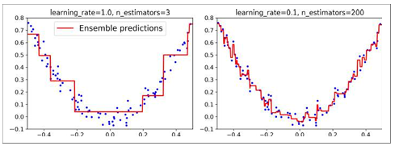
Pourquoi on dit Gradient Boosting alors qu'on ne booste pas la descente de gradient en soi ?
Si on prend MSE avec F(X) la fonction qui ajuste les paramètres du modèle, on a : $$ MSE(F(X)) = \frac{1}{2} (y - F(X))^2 = \frac{1}{2} (y - \hat{y})^2 $$
Si on applique le gradient à cette fonction: $$ \nabla MSE(F(X)) = \frac{\partial}{\partial{F(X)}} (\frac{1}{2} (y - F(X))^2) = \frac{1}{2} \frac{\partial}{\partial{F(X)}} ((y - F(X))^2) = \frac{1}{2} \times 2 (y - F(X))^{(2-1)} \frac{\partial}{\partial{F(X)}} (y - F(X)) = \frac{1}{2} \times 2 (y - F(X))^{(2-1)} (\frac{\partial{y}}{\partial{F(X)}} - \frac{\partial{F(X)}}{\partial{F(X)}}) = \frac{1}{2} \times 2 (y - F(X))^{(2-1)} \times (0 - 1) = - (y - F(X)) = - (y - \hat{y}) = -r $$
Donc si MSE est utilisé comme fonction de perte pour les modèles à chaque itération de la méthode d'ensemble alors: $$ y_{\text{pred final}} = y_{1} + \eta \cdot r_{1} + \eta \cdot r_{2} + ... + \eta \cdot r_{N} = y_{1} + \eta \cdot (r_{1} + r_{2} + ... + r_{N}) = y_{1} - \eta \cdot (- r_{1} - r_{2} + ... - r_{N}) = y_{1} + \eta \cdot (-\nabla MSE(F_{1}(X) + -\nabla MSE(F_{2}(X) + ... + -\nabla MSE(F_{N}(X)) $$ $$ y_{\text{pred final}} = y_{1} - \eta \cdot (\nabla MSE(F_{1}(X)) + \nabla MSE(F_{2}(X)) + ... + \nabla MSE(F_{N}(X)) $$
Et voila, pourquoi cette technique d'apprentissage s'appelle le gradient boosting, car les différents classeurs vont apprenrde sur les données qui ont été mal généralisé par le modèle précédent et donc ajuste leur gradient sur ces données. En conséquence, lorsque l'on combine ces gradients pour le classeur final on aura appris toutes les imperfections du jeu de départ (attention au sur-ajustement -> utilisé $\eta$).
De la même façon, lorsque l'entropie croisée est pris comme fonction de perte alors: $$ Log Loss (F(X)) = y\log(\sigma(F(X))) + (1-y)\log(1-\sigma(F(X))) $$
Le gradient de cette fonction de perte: $$ \nabla Log Loss(F(X)) = \sigma(F(X)) - y = - (y - \sigma(F(X))) = - (y - \hat{y}) = -r $$
Attention, $\sigma(z)$ est ici l'estimation de la probabibilité de l'évènement $z$ par la fonction sigmoid, ce n'est PAS l'écart type. Donc $\hat{y} = \sigma(F(X))$.
Résumé: En faite, dans l'erreur résiduelle le gradient est toujours présent et donc le classeur final combine les entrainements du gradient sur les différents sets de données intégrant une erreur jusqu'à ce que toutes les imperfections du jeu de données soient apprises, c'est pour cela qu'on dit boosting et gradient ici (car l'erreur contient implicitement le gradient).
Algorithme de clustering (non supervisé) :
Les algorithmes non supervisés les plus utilisés sont les algorithmes de clustering. Le clustering vise à régrouper les cas en clusters. Un cluster est un sous-ensemble de données qui sont similaires entre elles et dissimalaires avec les données des autres clusetrs. Puisque des algorithmes non supervisés sont utilisés, les classes des données sont inconnues initialement.
La mesure de la similarité est faite via différentes mesure de distance noté $d(x, y)$ en fonction des types de données cosidérées et du type de similarité recherchée.
La qualité d'un clustering depend de la mesure de similarité utilisée et de son implémentation. La qualité d'une méthode de clustering est évaluée par sa capacité à découvrir certains ou tous les patterns cachées.
Un bonne méthode de clustering produira des clusters d'excellente qualité si la similarité intra-classe est importante, c'est à dire que si les données d'une même classe sont très similaire, et si la similarité inter-classe est faible, c'est dire si les données d'un classe différente sont très dissimilaire.
L'objectif du clustering est donc de minimiser les distances intra-clusters et de maximiser les distances inter-clusters.
Avant de passer au différentes mesures de similarité existantes, il est intéressant de rappeler les propriétés d'une distance.
Propriétés d'une distance
On prend un cas numérique pour simplifier, soient $x_{1},x_{2},x_{3}$ des points d'une droite donc qu'une seule dimension.
- $d(x_{1},x_{2}) \geq 0$
- $d(x_{1},x_{2}) = 0 \text{ si et seulement si } x_{1}=x_{2}$
- $d(x_{1},x_{2}) = d(x_{2},x_{1})$
- $d(x_{1},x_{3}) \leq d(x_{1},x_{2}) + d(x_{2},x_{3})$
Cette distance est exprimable le plus facilement pour les champs numériques (une seule dimension ici), où: $$ d(x_{1},x_{2}) = |x_{1} - x_{2}| $$
Ou si on normalise la distance: $$ d(x,y) = \frac{|x_{1} - x_{2}|}{d_{max}} $$
Les mesures de similarité
La similarité entre deux objets est donc mesurée en fonction de leur distance. Si leur distance est faible alors ils ont une forte similarité. En revanche, si leur distance est élevée, alors ils ont une forte dissimilarité.
Les différentes distances peuvent être exprimées en fonction de la nature des données.
Données numériques
Soient $i=(x_{1}, y_{1}, z_{1})=(A_{1}, A_{2}, A_{3})$ et $j=(x_{2}, y_{2}, z_{2}) = (B_{1}, B_{2}, B_{3})$ ayant $n=3$ attributs numériques.
La distance euclidienne: $d(i,j) = \sqrt{\sum_{k=1}^{n} (A_{k} - B_{k})^{2}}$
La distance de Manhattan: $d(i,j) = \sum_{k=1}^{n} |A_{k} - B_{k}|$
La distance de Minkowski: $d(i,j) = \sqrt[q]{\sum_{k=1}^{n} |A_{k} - B_{k}|^{q}}$
La distance de Minkowski est une généralisation des distances euclidienne et de Manhattan car:
- Si $q=1$ alors on retrouve la distance de Manhattan.
- Si $q=2$ alors on retrouve la distance euclidienne.
Il existe également la distance du supremum qui ne sera pas détaillée dans cette article.
Similarité entre deux ensembles: la distance de Jaccard
La similarité de Jaccard mesure la distance entre deux ensembles. C'est le ratio entre la taille de l'intersection sur la taille de l'union. Soient deux ensembles $S$ et $T$, la similarité de Jaccard notée $sim(S,T)$ est: $$ sim(S,T) = \frac{S \cap T}{S \cup T} $$
La distance de Jaccard entre deux ensembles (ou variables) est donc: $d(S,T) = 1 - sim(S,T)$.
Similarité cosinus
Cette distance à un sens lorsque les exemples sont représentées par des vecteurs multi-dimensionnelles où les variables sont numériques.
Si on prend deux vecteurs $\vec{v_{1}}$ et $\vec{v_{2}}$. La similarité cosinus, notée $sim(\vec{v_{1}},\vec{v_{2}})$ est l'angle entre ces deux vecteurs, défini par: $$ sim(\vec{v_{1}},\vec{v_{2}}) = \frac{\langle \vec{v_{1}}, \vec{v_{2}} \rangle}{||\vec{v_{1}}|| \times ||\vec{v_{2}}||} $$
Soit $\vec{v_{1}} = (x_{1}, x_{2}, ..., x_{p})$ alors $||\vec{v_{1}}||$ est sa norme euclidienne définie par: $$ ||\vec{v_{1}}|| = \sqrt{\sum_{i=1}^{p} x_{i}^{2}} = \sqrt{x_{1}^{2}, x_{2}^{2}, ..., x_{p}^{2}} $$
Un angle de 0 degrés signifie que les individus sont similaires, un angle de 180 degrés signifie que les individus sont différents (et complètement opposé).
La distance Cosinus est donc: $$ d(\vec{v_{1}},\vec{v_{2}}) = 1 - sim(\vec{v_{1}},\vec{v_{2}}) $$
Cette distance est très utilisée dans le traitement de texte en utilisant la fréquence des mots afin de construire des vecteurs contenant des valeurs numériques. Ensuite, la similarité cosinus peut aider à comparer deux documents en fonction de la fréquence des mots contenus dans chaque document.
Distance de Levenshtein
A titre informatif, cette distance est une distance utilisée dans le traitement de texte afin de compte le nombre d'opération d'édition nécéssaire pour transformer la chaine de caractère A en la chaine de caractère B via des opérations de substitution.
Distance de Hamming
Cette distance vise à comparer deux vecteurs attribut par attribut. Par exemple si on prend le vecteur $A = 1010$ et $B = 1110$ alors la distance est de $1$, car un seul attribut de B est différent de ceux de A.
Le choix de la distance
- Pour les données binaires la distance de Hamming devrait être utilisée.
- Pour les données sous forme de vecteur (nativement ou qui ont été transformée) la similarité cosinus devrait être utilisée.
- Pour les données discrètes (= qui peuvent prendre un nombre fini de valeurs) la distance est null si les valeurs sont égales et la distance est égale à 1 sinon.
K-means
Si chaque observation est décrite par $p$ variables. On nomme un centre de gravité $C$ (ou centre d'un cluster), une donnée synthétique $\mu = (m_{1}, m_{2}, ..., m_{p})$ où $m_{k}$ est la moyenne des variables (features) $x_{i}$ des individus qui appartiennent au cluster $C$.
L'inertie d'un j-ième cluster est la distance moyenne entre son centre de gravité $\mu_{j}$ et les individus formant le cluster noté par: $$ I_{j} = \frac{1}{N} \sum_{i=1}^{N} d(\mu_{j} - x_{ij}) $$
L'inertie inter-clusters (entre k clusters) est: $\sum_{j=1}^{k} I_{j}$.
Le clustering est donc basé sur la recherche des centroïdes $M = \{\mu_{1}, \mu_{2}, ..., \mu_{k}\}$ (qui sont les centres de gravités respectifs de chaque cluster). Le but est donc de minimiser la fonction objective suivante: $$ f(M) = \sum min_{\mu \in M}d(x,\mu) $$
Initialement:
- L'algorithmes K-means commencent par placer k centres aléatoirement.
Ensuite, l'algoritme itère sur:
- Chaque individu est affecté au cluster le plus proche par rapport au centroîde (=centre $\mu_{k}$ du cluster le plus proche).
- L'inertie de chaque cluster est calculée.
- Puis les centroïdes sont recalculés en faisant la moyenne des distances de chaque individus (points sur un plan donc distance euclidienne) et en déplaçant le centroïde à son nouveau centre.
Si l'inertie à l'itération $n+1$ n'est pas significativement plus faible (moins de 10%) que l'inertie à l'itération $n$ alors l'algorithme s'arrête (car ça veut dire que même en faisant des itérations en plus on ne va pas améliorer la qualité du clustering). Et les clusters sont les clusters finaux.
La qualité de la solution dépend donc significativement du choix initial des centres.
Conclusion
| Pros | Cons |
|---|---|
| Relativement efficace | Besoin de spécifier le nombre de clusters |
| N/A | Les points (individus) isolés (=outliers) sont mal gérés |
| N/A |
| Use case |
|---|
| hihi |
Les points essentiels:
- Les centroïdes de chaque cluster sont recalibrés jusqu'à que l'inertie de chaque cluster n'est plus significativement réductible.
Algorithme de réduction de dimensionalité:
Le fléau de la dimensionalité est que de nombreux problèmes comportent des milliers de caractéristqiues ce qui implique une lenteur au niveau de l'entrainement et il est plus difficile de converger vers des solutions optimales.
La solution est donc de réduire la dimensionalité en séléctionnant les caractéristiques qui décrivent le mieux le dataset.
Analyse en composantes principales
PCA est un algorithme non supervisé car il n'y a pas besoin de connaitre les classes de chaque observation, c'est seulement de la transformation de jeu de données.
L'analyse en composantes principales (PCA) permet d'identifier un hyperplan de dimensions inférieurs afin d'y projeter les données sur celui ci tout en gardant la variance.
Il est important de conserver la variance car moins la variance est conservée plus d'informations sera perdu, plus la variance est conservée moins d'informations sera perdu. Donc, il faut conserver les caractéristiques dont les données varient le plus afin de garder un jeu de données représentatif de jeu de départ et d'en saisir les spécificités.
Pour trouver les composantes principales, la méthode principale est de décomposer en valeurs singulières (SVD) la matrice du jeu de données $X$ en un produit de trois matrices: $U, s, V$ où la matrice $V$ contient toutes les composantes principales: $$ V = ( c_{1}, c_{2}, ..., c_{n}) $$
Pour projeter le jeu de données sur l'hyperplan solution et obtenir un jeu de données réduit $X_{d-proj}$ de dimension $d$, il faut cacluler le produit matriciel du jeu de données $X$ par la matrice $W_{d}$ définie comme étant les premières colonne de $V$ étant la sélection des composantes principales désirées (hyper-paramètre n_components dans Sickit-Learn): $$ X_{d-proj} = X W_{d} $$
Remarque: L'hyper-paramètre n_components peut permettre de spécifier le nombre de composantes principales à séléctionner de la matrice $V$ (de la plus forte à la plus faible), mais ce paramètre peut être utilisé pour spécifier le taux de préservation de variacne souhaité (e.g 0.95 pour 95% de la variance de départ).
Afin de trouver les valeurs du vecteur $V$, il est nécessaire de calculer le vecteur propre de chaque valeurs propres de la matrice $X$.
Si $n\_components=2$ alors seuls les vecteurs propres associés aux deux premières valeurs porpres pourront être calculés.
Définition vecteur propre: Le vecteur propre est un vecteur $e$ tel que: $$ Xe = \lambda e $$
où $\lambda$ est une des valeurs propres possibles (et donc est une constante). $e$ est donc un vecteur popre associé à la valeur propre choisie. $e$ est un vecteur colonne non nul et unitaire qui a le même nombre de ligne que $X$, notre jeu de données.
(en gros certaines matrices lorsqu'on leur applique une transformation linéaire. Leur direction ne change pas. Elles sont simplement étirés ou compressés d'un facteur scalaire dont le plus fort est le composant qui caractérise le plus la matrice.)
Les vecteurs propres représentent les directions principales des données.
Les valeurs propres associées indiquent l’importance de chaque direction. Plus une valeur propre est grande, plus la variance des données est importante le long de la direction correspondante.
Car c'est la défintion de la matrice de covariance $C_{X}$ du jeu de données (qui décrit la variance des données entre elles).
Un vecteur unitaire est un vecteur de longueur 1, c'est à dire que la somme de ces attributs au carré est égale à 1.
Soit $X$ la matrice: $$ \begin{bmatrix} 3 & 2 \\ 2 & 6 \end{bmatrix} $$
Un des vecteurs propres de $X$ associé à la valeur propre $\lambda=7$ est: $$ \begin{bmatrix} \frac{1}{\sqrt{5}} \\ \frac{2}{\sqrt{5}} \end{bmatrix} $$
car
$$ \begin{bmatrix} 3 & 2 \\ 2 & 6 \end{bmatrix} × \begin{bmatrix} \frac{1}{\sqrt{5}} \\ \frac{2}{\sqrt{5}} \end{bmatrix} = 7 \times \begin{bmatrix} \frac{1}{\sqrt{5}} \\ \frac{2}{\sqrt{5}} \end{bmatrix} $$
Pour trouver les vecteurs propres il faaut d'abord calculer les valeurs propres.
Commet calculer les valeurs propres?
Pour que $Xe = \lambda e$, il faut que $(X - \lambda I)e = 0$, vu que $e$ est non null alors il faut que $(X - \lambda I) = 0$. Donc il faut que $det(X - \lambda I) = 0$, à partir de là les $\lambda_{i}$ pourront être extraits.
Alors $X - \lambda I = \begin{bmatrix} 3 - \lambda & 2\\ 2 & 6 - \lambda \end{bmatrix}$
Donc $det(X - \lambda I) = (3 - \lambda)(6 - \lambda) - 4 = 0$
Donc il faut résoudre: $$ (3 - \lambda)(6 - \lambda) - 4 = \lambda^{2} - 9 \lambda + 14 = 0 $$
On résoud l'équation du second degré et on trouve $\lambda =7$ ou $\lambda = 2$ qui sont les deux valeurs propres associées à $X$.
Il est donc possibles de calculer les deux vecteurs propres associées à ces deux valeurs porpres.
Comment calculer les vecteurs propres?
La valeur propre la plus forte $\lambda = 7$ est séléctionné pour calculer le premier vecteur propre.
Soit $e_{1}$ le premier vecteur propre d'inconnues $\begin{bmatrix} x \\ y \end{bmatrix}$. On doit résoudre (équation du départ): $$ \begin{bmatrix} 3 & 2 \\ 2 & 6 \end{bmatrix} \begin{bmatrix} x \\ y \end{bmatrix} = 7 \begin{bmatrix} x \\ y \end{bmatrix} $$
En faisant le produit matriciel, on doit résoudre: $$ 3x + 2y = 7x \\ 2x + 6y = 7y $$
Un des solutions est: $\begin{bmatrix} 1 \\ 2 \end{bmatrix}$
Ce vecteur n'est pas un vecteur unitaire car la somme des carrés de ces attributs est égale à $5$ et pas à $1$. Donc il faut diviser chaque attribut par $5$: $$ \begin{bmatrix} \frac{1}{\sqrt{5}} \\ \frac{2}{\sqrt{5}} \end{bmatrix} $$
Pour le calcul du deuxième vecteur propre, le processus est le même avec $\lambda =2$, ce qui donne: $$ \begin{bmatrix} \frac{2}{\sqrt{5}} \\ \frac{-1}{\sqrt{5}} \end{bmatrix} $$
Donc la matrice $E$ des vecteurs propres est: $$ E = \begin{bmatrix} \frac{2}{\sqrt{5}} & \frac{1}{\sqrt{5}} \\ \frac{-1}{\sqrt{5}} & \frac{2}{\sqrt{5}} \end{bmatrix} $$
La projection du jeu de données dans un espace de dimensions réduites est donc donné par: $XE$.
Calcul de la projection dans un nouvel espace
Soit $X = \begin{bmatrix} 1 & 2 \\ 2 & 1 \\ 3 & 4 \\ 4 & 3 \end{bmatrix} $ la matrice du jeu de données.
Façon simplifié de trouver les vecteurs propres: $$ X^{T}X = \begin{bmatrix} 30 & 28 \\ 28 & 30 \end{bmatrix} $$
Les valeurs et vecteurs propres de $X^{T}X$ sont déduites du polynômes caractéristiques: $$ (30 - \lambda)(30 - \lambda) - 28 \times 28 = 0 $$
dont les solution sont $\lambda = 58$ et $\lambda = 2$.
En suivant le même procédé, on retrouve: $$ E = \begin{bmatrix} \frac{1}{\sqrt{2}} & \frac{-1}{\sqrt{2}} \\ \frac{1}{\sqrt{2}} & \frac{1}{\sqrt{2}} \\ \end{bmatrix} $$
La projection de $X$ dans le nouvel espace est donc: $$ XE = \begin{bmatrix} \frac{3}{\sqrt{2}} & \frac{1}{\sqrt{2}} \\ \frac{3}{\sqrt{2}} & \frac{-1}{\sqrt{2}} \\ \frac{7}{\sqrt{2}} & \frac{1}{\sqrt{2}} \\ \frac{7}{\sqrt{2}} & \frac{-1}{\sqrt{2}} \end{bmatrix} $$
Choisir le bon nombre de dimensions
Au lieu de choisir le nombre de dimensions, il est plus simple de choisir un contribution représentant suffisament la variance de départ comme 95%.
Une autre approche consiste à afficher sur un graphe la variance en fonction du nombre de dimensions afin de sélectionner la plus optimale.
Avantages: Minimise le sur-ajustement des données Temps d'entrainemet plsu court
PCA randomzied/incremental
Algorithme de détection d'anomalies ou détection d'outliers:
La détection d'anomamlies aussi appelée la détection d'outliers vise à identifier les éléments qui dévient significativement du comportement normal attendu.
Les anomalies peuvent être catégorisées en trois types:
- Les anomalies ponctuelles: Ce sont des exemples qui diffèrent significativement du reste du dataset et qui sont souvent isolé et unitaire (un point seul isolé).
- Les anomalies contextuelles: Ce sont des exemples qui sont considérés anormaux dans un contexte spécifique mais qui ne sont pas forcément isolés.
- Les anomalies collectives: Ce sont des groupes d'exemples qui collectivemennt dévient du comportement normal attendu même si certains individus du collectif ne serait pas considérés comme des anomalies.
Différentes méthodes existents pour détecter des outliers:
- En utilisant les statistiques, cette méthode assume une distribution statistiques d'un jeu de données et identifie les individus qui dévient significativement de la distribution comme outliers.
- En utilisant du clustering, les outliers pourraient être identifiées en appartenant ou pas à un cluster avec K-means. Il existe également des méthodes du clustering basée sur la densité (voir Chapter 12 Outlier Detection du livre 2).
- En utilisant des méthodes basées sur la ML afin d'apprendre les patterns des données normales et identifier les outliers qui seront les individus qui ne sont pas conformes par rapport à ces patterns. Les algorithmes sont les SVM intégrant une unique classe (One Class SVM), les forêts d'isolation (Isolation Forest) et l'algorithme Local Outlier Factor (LOF) basée sur la densité.
One Class SVM

Le SVM intégrant une unique classe a pour but d'enclaver les individus normaux ce qui permettra d'identifier les outliers qui seront en dehors de cette enclave. Les SVM à une classe peuvent traitée des données non linéaires en utilisant des fonctions noyaux spécifiques.
Isolation Forest

Les forêts d'isolation isolent les outliers en séparant au hasard les données et en construisant des arbres (de décision) d'isolation. C'est donc un classeur de plusieurs arbres comme vue dans la partie Ensemble Learning - Random Forest
Les outliers étant peu et très isolés entre eux tendant à avoir des chemins très courts dans un arbre de décision.
L'algorithme sépare récursivement les données jusqu'à que chaque individu soit isolé dans une feuille (leaf node) de l'arbre de décision. Une caractéristique aléatoire est séléctionné pour chaque branche et une valeur aléatoire associée à la caractéristique est également séléctionné pour la même branche. Ce processus est répété jusqu'à que chaque individus soit une feuille de l'arbre.
Ainsi, les données qui tendent à être normales ont des chemins (nombre de noeuds) plus longs et les outliers ont des chemins plus courts.
Un score d'anomalie est associée à chaque individu, ce score est calculé la longueur moyenne du chemin de l'individu pour tous les arbres composants la forêt. Ce score est donné par la formule suivante: $$ s(x) = 2^{-\frac{E(h(x))}{c(n)}} $$
où $E(h(x))$ est la longueur moyenne des chemins sur l'ensemble des arbres de la forêt.
$c(n)$ est la longueur moyenne des chemins d'une recherche BST (Binary Search Tree) sans succès sur $n$ noeuds. C'est à dire la longueur moyenne d'un chemin pour aller jusqu'à une feuille dans un arbre donné. Cet valeur est censé être significativement plus grande que $E(h(x))$ quand c'est un outlier.
$s(x)$ est compris entre $0$ et $1$.
Un score de $1$ indique que la longueur moyenne $E(h(x))$ des chemins sur la forêt est faible et que $c(n)$ est grand.
Un score de $0$ indique que la longueur moyenne $E(h(x))$ des chemins sur la forêt est grande et que $c(n)$ est plus faible.
Un score proche de $1$ indique que l'individu est probablement un outlier et un score proche de $0$ indique que l'individu n'est probablement pas un outlier.
Local Outlier Factor (LOF)
LOF est un algorithme basée sur la densité de données pour identifier les ourliers en comparant les densités locales de chaque individu à celle de son voisin. Cette approche est donc très efficace pour détécter les outliers d'un jeu de données dont la densité des individus varient significativement.
Un score est également associé à chaque individu, noté: $$ LOF(x) = \frac{(\frac{\sum lrd(neightbor)}{K})}{lrd(x)} $$
où $lrd(x)$ est la Local Density Reachability de l'individu $x$ et $lrd(neighbor)$ est la Local Density Reachability d'un des $K$ plus proches voisins.
Un score LOF élevé signifie que l'individu est probablement un outlier.
Local Reachability Density (LRD)
La LRD d'un individu $x$ est notée: $$ lrd(x) = \frac{1}{(\frac{\sum reachability_distance(x, neighbor)}{K})} $$
La $\text{reachability_distance}$ est la distance entre $x$ et $neighbor$ lorsque la distance moyenne entre $x$ et les $K$ voisins est inférieur. Sinon c'est la distance entre $x$ et les $K$ voisins.
Cette distance assure qu'un individu qui est entouré de beaucoup de voisins (donc densité élevé) ait une $reachability_distance$ inférieur qu'un individu qui n'aurait que très peu de voisins.
Conclusion
Ces techniques assument souvent des spécificités à propos des données telles que:
- La distribution statistique suivie.
- Le choix des caractéristiques impacte fortement la décision et perfomance d'algorithme de détection d'outliers.
Reinforcement learning
Le RL introduit un paradigme de ML où l'agent apprend en interagissant avec un environnement, ce qui est différent de l'apprentissage supervis qui dépend de l'étiquettage des données ou l'apprentissage non supervisé qiu explore les données non étiquettées.
L'agent apprend donc à travers des essais et des erreurs en étant guidé grâce à des retours sous la forme de récompenses ou de pénalités. Cela rend RL performant pour les tâches séquentielles.
Le RL peut être catégorisé en deux types:
- Basé sur des modèles, l'agent apprend un modèle de l'environnement et l'utilise pour prédire ses futures états et prévoir ses actions. L'agent peut trouver le chemin le plus efficace afin de réduire le nombre d'essais et d'erreurs.
- Sans model (model free), l'agent apprend directement de son expérience sans modéliser l'environnement. L'agent améliore graduellement ses politiques en explorant différent chemins et en apprenant des récompenses/pénalités.
Donc en RL, un agent interagit avec un environnement en réalisant des actions et en observant leurs conséquences. L'environnement fournit un retour sous la forme de récompense ou pénalité ce qui guide l'agent vers l'apprentissage d'une politique optimale. Une politique est une stratégie qui séléctionne les actions qui maximise les récompenses sur la durée.
L'agent
L'agent est celui qui apprend et prend les décisions. En interagissant avec l'environnements, il observe les conséquences des actions qu'il a mené. L'agent a pour but d'apprendre une politique optimale qui maximise les récompenses.
L'environnement
L'environnement est un système externe dans lequel opère l'agent. L'environnement répond aux actions de l'agent en fournissant un retour sous la forme d'une récompense ou d'une pénalité.
L'état
L'état représente la situation actuel ou la condition de l'environnement. L'état fournit un condensé des informations nécessaires pour que l'agent prenne une décision en étant informé. L'état peut inclure plusieurs aspects de l'environnement tels que la position de l'agent, la position d'autres objets, etc. Ce sont toutes les informations nécessaires à l'agent pour qu'il prenne une prochaine décision.
Une action
Une action est une décision prise par l'agent qui affecte l'environnement. L'agent choisit l'action à réaliser grâce à l'état actuel et sa politique. L'environnement répond à cette action et transitionne à un nouvel état.
La récompense
La récompense est un retour positif de l'enviornnement. C'est un scalaire qui peut être positif, négatif ou nul. Une récompense positive encourage l'agent à répéter l'action alors qu'une récompense négative décourage l'agent à répéter l'action.
La politique
La politique est une stratégie qui permet de relier les états aux actions que l'agent réalise. La politique détermine quelle action un agent devrait effectuer en fonction d'un état donné. Le but est donc de trouver une politique qui maximise les récompenses.
La fonction valeur
C'est une fonction qui estime la valeur à long terme d'un état en particulier ou d'une action spécifique. Elle prédit les récompenses cumulées esperées qu'un agent peut obtenir en fonction d'un état donné ou d'une action. Cette fonction permet de guider l'agent à choisir des actions qui mène à maximiser les récompense sur le long terme.
Il en existe deux types:
- Les fonctions état-valeur qui estime les récompenses cumulées esperées depuis un état donné en suivant une politique spécifique.
- Les fonctions action-valeur qui estime les récompenses cumulées esperées depuis une action donnée en suivant une politique spécifique.
Le Discount Factor
Le Discount Factor noté $\gamma$ est un paramètre qui détermine la valeur actuelle des futures récompenses. Il est compris entre $0$ et $1$.
Une valeur de $1$ donne plus de poids aux récompenses à long terme et une valeur de $0$ donne plus de poids aux récompenses à court terme.
- $\gamma =0$ signifie que l'agent considère seulement les récompenses immédiates.
- $\gamma =1$ signifie que l'agent considère les récompenses futures à part égales.
Les taches épisodiques vs continues
Les taches épisodiques font en sorte que l'agent interagisse avec l'environnement sous la forme d'épisodes, tous finissant dans un état final.
D'autre part, les taches continues n'ont pas de fin explicite et sont indéfinis.
Q-learning
Q-learning est un algorithme de RL qui est model free.
Au coeur de cet algorithme il y a la Q-Table qui stocke les Q-values pour chaque paire état-action. Les lignes du tableau représente les états et les colonnes les actions. Donc chaque cellule du tableau contient une Q-value pour une action donné dans un état spécifique.
Q-values d'un robot en fonction de l'état et action réaliséé:
|Etat/Actoin | Haut | Bas | Gauche | Droite |-----------|-----|----|---|----| | S1 | -1 | 0 | -0.5 | 0.2 | | S2 | 0 | 1 | 0 | -0.3 | | S3 | 0.5 | -0.5 | 1 | 0 | | S4 | -0.2 | 0 | -0.3 | 1 |
Les Q-values pour une paire etat-action donné sont mises à jour en utilisant une règle basé sur l'équation de Bellman: $$ Q(s,a) = Q(s,a) + \alpha \times [r + \gamma \times max(Q(s', a')) - Q(s,a)] $$
où
- $Q(s,a)$ est la Q-value actuel pour réaliser l'action $a$ dans l'état $s$
- $\alpha$ est le learning rate
- $r$ est la récompense reçu après avoir réaliser l'action $a$ dans l'état $s$
- $\gamma$ est le discount factor qui détermine l'importance des récompenses futures
- $max(Q(s', a'))$ est la Q-value maximale dans le prochain état $s'$ pour quelconque actions $a'$
Exemple: Si on prend un robot qui actuellement en état S1 et qui fait l'action Right pour changer d'état jusqu'à S2. Une récompense de $r=0.5$ est reçu pour atteindre S2. Le learning rate est $0.1$ et le discount factor $0.9$.
Et la Q-value maximale de S2 est $max(Q(S2,Up), Q(S2,Down), Q(S2,Left), Q(S2,Right)) = max(0, 1, 0, -0.3) = 1$
Donc la nouvelle Q-value pour prendre l'action Right depuis S1 est égale à $0.32$: $$ Q(S1, Right) = 0.2 + 0.1 [ 0.5 + 0.9 \times 1 - 0.2 ] = 0.32 $$
La mise à jour de cette valeur reflète le robot apprenant de l'expérience de bouger jusqu'à l'état S2 et de recevoir une récompense.
l'algorithme Q-learning
C'est un algorithme itératif de sélction d'action, observation des conséquence et de mises à jour des Q-value afin d'apprendre une politique optimale.
- Initialiser la Q-table avec des valeurs arbitraires (que des zéros).
- Dans l'état actuel, l'agent choisit une action à réaliser. Cette selection implique un équilibre entre exploration (essayer de nouvelles actions) et exploitation (utiliser les meilleurs actions actuelles qui maximise les récompenses).
- L'agent réalise l'action séléctionné et observe les conséquences ce qui inclut le nouvel état ($S2$ après avoir pris l'action ainsi que la récompense reçu ($r$).
- L'agent met à jour la Q-value en suivant le processus précédemment mentionné.
- L'agnte met ensuite à jour son état actuel au nouvel état auquel il a changé après avoir réalisé l'action.
Les étapes 2 à 5 sont répétées jusqu'à que les Q-values converge et qu'une politique ait été apprise ou qu'un nombre d'itération finis ait été préalablement défini.
Finalement, une fois l'agent entrainé, il navigue depuis le début en suivant le chemin qui maximise les récompenses.
L'équilibre exploration-exploitation
Comme mentionné précédemment l'exploration encourage l'agent à essayer de nouvelles et diverses actions afin de découvrir de nouvelles stratégies, alors que l'exploitation encourage l'agent à choisir les actions qui sont connus pour données des récompenses.
La stratégie epsilon-greedy est une stratégie qui équilibre l'exploration/exploitation en introduisant un facteur aléatoire dans le choix de l'agent. Cette stratégie encourage l'agent à explorer de nouvvelles options tout en utilisant encore les actions connues pour donner des récompenses.
Avec la probabilité $\epsilon$, l'exploration est favorisée, en revanche avec la probabilité $1 - \epsilon$ l'exploitation est favorisée.
La valeur $\epsilon$ est un paramètre qui peut être ajusté au fur et à mesure afin de trouver un équilibre entre exploration/exploitation:
- Une valeur $\epsilon$ élevé va plus promouvoir l'exploration.
- Une valeur $\epsilon$ faible va plus promouvoir l'exploitation.
State Action Reward State Action (SARSA)
SARSA est également model free. Cependant, Q-learning utilise la Q-value maximale du prochain état pour mettre à jour ses Q-values mais SARS mets à jour directement ses Q-values en se basant sur le prochain état sans séléctionner la valeur maximale et donc sélectionner l'action qui donne le plus de récompenses et changer la politique mais en utilisant la valeur du prochain état directement ce qui fait que l'algorithme apprend la valeur de la politique qu'il suit actuellement.
Donc Q-learning est un algorithme off-policy car il apprend la valeur de la politique optimal indépendemment de la politique actuelle. Et, au contraire, SARSA est un algorithme on-policy car il apprend la valeur de la polituque qu'il suit actuellement.
La mise à jour des Q-value avec SARSA est donné par: $$ Q(s,a) = Q(s,a) + \alpha \times [r + \gamma \times Q(s', a') - Q(s,a)] $$
Le $max$ a donc disparu car on suit la politique actuelle, ce qui rend SARS performant sur les enviornnements où les politiques doivent être suivies rigoureusement.
Pour l'algorithme SARSA les mêmes étapes sont répétés que pour Q-learning notamment avec une stratégie epsilon-greedy pour équilibrer l'exploration/exploitation.
On-policy vs Off-policy
- Apprentissage on-policy: L'algorithme apprend de sa politique actuelle, ce qui signifie que les mises à jour des valeurs est basé sur l'action prise et la récompsense reçu en suivant la politique actuelle. Vu que SARS ne choisit pas la valeur maximale du nouvel état, alors les capacités d'exploration sont réduite car seul la poltique actuelle est suivi ce qui correspond favorise l'exploitation. C'est pourquoi le facteur epsilon-greedy est introduit et est le seul facteur permettant de favoriser l'exploration ici, donc les Q-values apprises reflète significativement le facteur epsilon-greedy.
- Apprentissage off-policy: Au contraire, cette approche permet à l'algorithme d'apprendre la politqiue optimale indépendemment de la politique suivie pour la séléction des actions, donc il intègre un facteur d'exploration par lui même ($max$ dans Q-learning). Donc l'équilibre exploration/exploitation du facteur espilon-greedy est moins reflété car l'algorithme va explorer par lui même. Donc l'algorithme apprend de données générées par plusieurs politique ce qui favorise l'exploration et l'apprentissage des données historiques.
Un nouveau facteur d'équilibre exploration/exploitation: La stratégie softmax
Pour rappel, la fonction softmaw permet de transformer un vecteur en une distribution de probabilité.
La stratégie softmax assigne donc des probabilités à chaque actions en se basant sur les Q-values. Cela permet aux valeurs ayant des Q-values modéré d'être choisi plus souvent pour l'exploration (souvent ce sont les valeurs qui sont les plus élevés avec espilon-greedy donc les valeurs modérées ne sont pas couvertes et on perd de l'information) ce qui permet une approche plus équilibré entre exploration/exploitation.
Cette stratégie encourage l'agent à explorer des actions qui ne sont pas nécessairement les meilleures mais prometteuse, donc sur le long terme les perfomances sont meilleures.
https://silviasapora.github.io/blog/ml-interviews.html
![image.png]()
Faire une mindmap des algos de ML pour savoir quand les utiliser
Evaluer la précision d'un modèle
Comment évaluer que votre modèle sur-ajuste ou sous-ajuste les données?
La validation croisée pour évaluer les performances du modèle. Si u modèle donne de bon résultats sur les données d'entraienements mais généralise mal selon les métriques de validatio croisé alors le modèle sur-ajuste.
S'il donne de mauvais résultats dans les deux cas (validation et entrainement) alors le modèle sous-ajuste.
Sous-ajustement: L'erreur (la performance) est élevé sur le jeu d'entrainement ainsi que sur le jeu de validation.
Un moyen d'améliorer le sous-ajustement est d'augmenter la complexité du modèle ou de trouver de meilleur variable. Un modèle qui sous-ajuste aura une forte variance (sensibilité aux changements).
Sur-ajustement: L'erreur est faible sur le jeu d'entrainement, en revanche elle est élevé sur le jeu de validation, ce qui témoigne que les données sont sur-ajustées au jeu d'entrainement.
Un moyen d'améliorer le sur-ajustement est de présenter davantage d'observations. Un modèle qui sur-ajuste aura un plus haut biais (nombre de paramètres élevés = complexe).
insérer graphe
Comment évaluer un modèle d'apprentissage ?
L'évaluation consiste à mesurer la performance (succès) d'un classeur au niveau de la prédiction. Le classeur tente de prédire la classe de chaque nouvelle instance:
- Si c'est correct elle est compté comme un succès sinon c'est une erreur.
- Le taux d'erreur est la proportion d'erreurs obtenue au niveau du jeu de données entier. C'est la probabibilité d'un mauvais classement.
Le seul moyen de mesurer la capacité d'un classeur à généraliser est de le tester sur des observations qui n'appartiennent pas au jeu d'entrainements (70-80%), c'est à dire de créer un jeu de test/validation (20-30%).
Si des données d'entrainements sont présentes dans le jeu de test alors le modèle est biaisé car sa perfomance est évaluée sur des données avec lesquelles il s'est calibré.
Pourquoi échantilloner les données ?
Parfois, le jeu de données initial est si volumineux qu'il est nécessaire d'en prendre un échantillon afin de construire un modèle cible. L'échantillon prélevé doit être représentatif du jeu initial, donc il est important de s'assurrer qu'aucun biais volotaire ne soit introduit.
Deux types d'échantillonage: l'échantillonage aléatoire et l'échantillonnage stratifié.
L'échantillonage aléatoire est adapter dans la plupart des cas car la nature aléatoire permet d'éviter d'introduire un biais.
Lors de cas particulier, où le jeu de données est faible, il se peut que qu'une classe soit sous-représentée. Alors l'échantillonage stratifié peut avoir du sens car il permet de maintenir les fréquences de départ des différentes classes afin qu'elles soient représentées dans chaque échantillon. Par exemple si la classe A est présente dans 40% des cas alors dans l'échantillon elle sera également présente dans 40 des cas.
Pourquoi mélanger les données (shuffle) ?
Le mélange des données permet d'éviter le biais lié à une ordre spécifique qui serait contenu dans le jeu de données. Donc, au global cela permet au modèle de converger plus facilement vers une solution de meilleur qualité ce qui produit un modèle qui généralise mieux.
Un autre cas est que certaines trasnformations peuvent induire l'ordonnancement des données ce qui n'est pas désirable en entrée d'un modèle d'apprentissage automatique, c'est pourquoi il est nécessaire de les mélanger en entrée de la pipeline.
Comment mesurer la performance d'un classeur sur un échantillon de taille faible?
Holdout cross validation
La méthode holdout divise le jeu de données en un jeu d'entrainements (70%) et un jeu de test (30%). Les données doivent être d'abord mélangée aléatoirement (shuffle).

K-fold cross validation
Une des techniques utilisées est la validation croisée (K-Fold) qui consiste à découper les données en k blocs égals. Le but est de construir k modèles dont chaque modèle s'entraine sur les k-1 blocs de données d'entrainement et se teste sur le dernier block k de données de test.
L'erreur de chaque modèle ainsi que l'erreur moyenne pour tout les modèles est calculé. Calculer l'erreur moyenne à partir des k modèles appris permet de détecter et de voir si un des modèles a une performance plus faible ou élevé par rapport à la moyenne globale et d'en comprendre la raison.
Le modèle ayant la plus haute performance est choisi.

Leave One Out (LOO)
La méthode LOO est un cas particulier de la validation croisée k-fold où $k$ est le nombre d'observations, ce qui fait que à chaque itération il y a une seule observation dans le jeu de test et le reste sert au jeu d'entrainement.
Les métriques disponible pour mesurer la performance d'un classeur?
L'accuracy ou la perfomance (succès) est mesurer via l'erreur standard. Si le taux de succès du classeur sur les données est $s$, alors $s$ estime la succès du classeur. L'erreur standard est définie: $$ \epsilon = \sqrt{\frac{s(1-s)}{N}} \quad \text{ où N est le nombre d'observations présent dans le jeu de test} $$
L'accuracy peut donc être approximer via un interval: $s \pm \epsilon$
La matrice de confusion quant à elle, permet d'avoir des insights sur les données mal classées. Donc elle compte le nombre de fois qu'une instance a été classée dans la mauvaise classe. Elle se base sur 4 mesures:
- Le nombre de vrais positifs (VP): Le nombre d'observations dont la classe est positive et dont la classe est prédite comme positive.
- Le nombre de vrais négatifs (VN): Le nombres d'observations dont la classe est négative et dont la classe est prédite comme négative.
- Le nombre de faux positifs (FP): Le nombre d'observations dont la classe est négative et dont la classe est prédite comme positive.
- Le nombre de faux négatifs (FN): Le nombre d'observations dont la classe est positive et dont la classe prédite est négative.
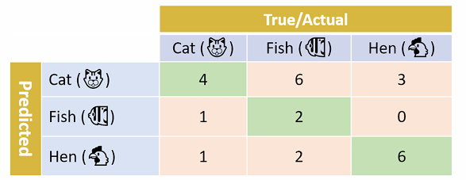
Le taux de vrais positifs (TVP) est donc: $\frac{\text{Le nombre de vrais positifs}}{\text{Le nombre de vrais positifs} + \text{Le nombre de faux négatif}}$
TVP donne le taux d'instances classées positives parmis toutes les instances qui sont réellement positive.
Le taux de faux positifs (TFP) est également: $\frac{\text{FP}}{\text{FP} + \text{FN}}$
Le TFP donne le taux d'instances positives qui ont été mal classés parmi toutes les instances mal classées.
La précision est donc le nombre de vrais positifs sur le nombre total d'instances classées positives, c'est à dire vrais positifs + faux positifs. Une valeur de 1 signifie que toutes les instances classées positives sont réellement positives.
Dans le cas ou il y a plusieurs classes, alors la précision global est l'addition de la précision de chaque classe divisé par le nombre de classes.
Le recall est donc le nombre de vrais positifs sur le nombre total d'instances réellement positives, c'est à dire vrais positifs + faux négatifs. Une valeur de 1 signifie également que toutes les instances classées positives sont réellement positives.
Dans le cas ou il y a plusieurs classes, alors le recall global est l'addition du recall de chaque classe divisé par le nombre de classes.
F-mesure (f1-score): Permet de regrouper en une mesure la performance d'un classeur pour une classe donnée: $$ F-mesure= F_{1} = \frac{2 \times Recall \times Precision}{Recall + Precision} $$
Le F-score plus générale est: $$ F_{\beta} = (1+ \beta^2) \frac{ Recall \times Precision}{Recall + (Precision \times \beta^2)} $$
Le taux d'erreur E peut dont être calculer via la matrice de confusion: $$ E = \frac{\text{Le nombre d'instances mal classées}}{\text{Le nombre total d'instances}} = \frac{FP + FN}{VP + VN + FP + FN} $$
Le taux de succès $s$ ou accuracy est donc $1 - E$. Et correspond également à: $$ Accuracy = \frac{VP + VN}{VP + VN + FP + FN} $$
Le score Kappa est une autre mesures qui indique à quel point notre classeur est meilleur qu'un classeur aléatoire. Il est donné par: $$ K = \frac{P_{0} - P_{e}}{1 - P_{e}} $$
où $P_{0} = Accuracy$ et: $$ P_{e} = (\frac{A+B}{A + B + C +D}) * (\frac{A+C}{A + B + C +D}) + (\frac{C+D}{A + B + C +D}) * (\frac{B+D}{A + B + C +D}) $$
Si on prend une matrice de confusion:

qui correspond à:
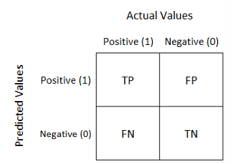
$P_{e}$ est la probabilité d'un accord aléatoire.
La mesure Kappa est très robustes aux jeux de données déséquilibrées.
Le Receiver Operator Curve (ROC) ets basé sur le TVP (taux vrais positifs) et TFP (taux de faux positifs). On mesure la perfomance de classification avec différentes valeurs de seuils, ce qui fait que cette mesure est particulièrement adaptée au clausseur binaire (avec un seuil à 0.5 et donc on peut parler de True Positive (VP en français), True Negative (VN en français), etc.)
Idéalement, TVP(TPR en anglais)=1 et TFP(FPR en anglais)=0
L'agorithme construit la mesure suivant les étapes suivantes:
- Le classeur assigne un score de probabilité contenu entre 0 et 1 pour chaque observation (quand le classeur n'est pas binaire)
- Les scores sont ordonnés dans l'ordre décroissant de plus fort au plus faible. Par exemple:

- Faire varier le seuil et calculer la matrice de confusion, le TVP et TFP. Cela permet d'évaluer comment change la perfomance du classeur en faisant varié le seuil. Par exemple:
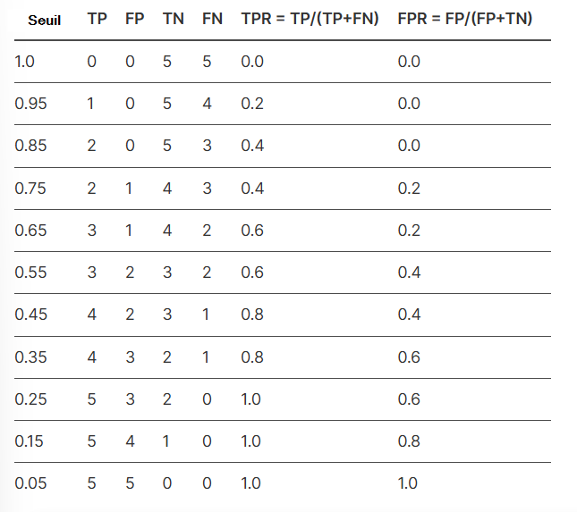
- Avec les valeurs TVP (TPR) et TFP (FPR) ou peut placer des points sur un graphique où on aura du TVP en fonction du TFP. En reliant les points on obtient une courbe. Par exemple:

La ligne diagonale est le chance level. Si la courbe ROC du modèle est au dessus de cette diagonale alors le modèle est meilleurs que le hasard, sinon il est pire ou égale que le hasard.
AUC (Area Under the Curve) est une valeur entre 0 et 1 qui résume la perfomance d"un modèle. L'AUC est calculé pour chaque changement de seuil. Un AUC de 1 indique un classeur parfait car il contient uniquement des vrais positifs et vrais négatifs (ici avec un seuil de 0.5 mais il pourrait avoir n'importe quelle valeur):
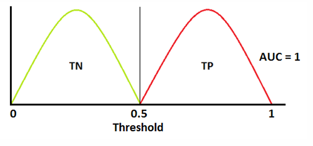
Au contraire, un AUC de 0.5 indique une perfomance au niveau du hasard car on ne distingue pas las vrais positifs des vrais négatifs:
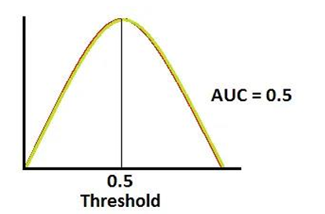
Par exemple un AUC au milieu:
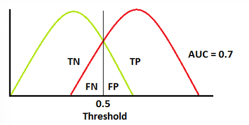
Ici, on peut voir que le seuil pour l'AUC à 0.7 n'est pas optimal car une bonne quantité de faux positifs et faux négatifs.
Les fonctions de coûts/perte afin de modéliser l'erreur d'une distribution?
Régression
Mean squared error (MSE): $$ MSE = \frac{1}{n} \sum_{i=1}^{n} (y_{i} - \hat{y}_{i})^{2} $$
- Utilisation: régression linéaire, réseaux de neurones
- Avantages: Différentiable, convexité garanties pour certains modèle (regression linéaire)
- Incovénients: sensibles aux valeurs extrêmes (outliers)
Root Mean squared error (RMSE): $$ MSE = \sqrt{\frac{1}{n} \sum_{i=1}^{n} (y_{i} - \hat{y}_{i})^{2}} $$
- Utilisation: régression surtout pour comparer des modèles
- Avantages: Pénalise davantage les grands écarts et interprétable (garde l'unité de départ)
- Incovénients: Sensibles aux outliers
Erreur absolue moyenne (MAE): $$ MAE = \frac{1}{n} \sum_{i=1}^{n} |y_{i} - \hat{y}_{i}| $$
- Utilisation: régression surtout quand les outliers sont fréquents
- Avantages: Moins sensibles aux outliers et interprétable (garde l'unité de départ)
- Incovénients: Non différentiable en 0
Huber Loss: $$ L_{\delta}(y, \hat{y}) = \left\{ \begin{array}{l} \frac{1}{2} (y- \hat{y})^2 \text{ si } |y - \hat{y}| \leq \delta \\ \delta \cdot |y - \hat{y}| - \frac{1}{2} \delta^2 \text{ sinon} \end{array} \right. $$
- Utilisation: régression et robustes aux outliers
- Avantages: Combine les avantages de MSE et MAE et est différentiable partout
- Incovénients: Nécessite de choisir $\delta$
Classification
Entropie croisé (Cross entropy loss) ici multi classe mais qui peut être binaire comme vu précédemment: $$ L = - \sum_{i=1}^{n} y_{i}\log(\hat{y}_{i}) $$
- Utilisation: Classification binaire et multi-classe, très utilisés avec les modèle probabilistiques (régression logistqiue et réseaux de neurones)
- Avantages: Optimise directement les probabilités et convexes pour certains modèles
- Incovénients: Peut diverger si $\hat(y_{i})=0$ ou $y_{i}=0$
Log Loss ou entropie croisée binaire: $$ L(y, \hat{y}) = -(ylog(\hat{y}) + (1-y)log(1 - \hat{y})) $$
- Utilisation: Régression logistique et modèle probabilistiques
- Avantages: Donne des probabilités interprétables
- Incovénients: Sensible aux outliers
Hinge Loss: $$ L(y, \hat{y}) = max(0, 1 - y \cdot \hat{y}) $$
- Utilisation: SVM
- Avantages: Maximise la marge entre les classes
- Incovénients: Non différentiable en 1
Optimisation des hyper-paramètres
Les hyper-paramètres sont les paramètres qui permettent de faire converger les paramètres du modèle vers des valeurs optimales permettant de minimiser la fonction de coûts et donc de réduire l'erreur.
La rapidité à laquelle la minimisation de la fonction de coût converge dépend donc significativement des hyper-paramètres. La qualité de la solution finale (trouver le minimum local optimal) dépend également significativement des hyper-paramètres.
Pour cela, des méthodes existent dont les suivantes:
- Grid Search: Cette méthode permet de diviser les intervalles des valeurs de chaque hyper-paramètres en sous-ensemble (par exemple diviser l'intervalle d'un hyper-paramètre en 10 valeurs) avec lesquels Grid Search va calculer toutes les combinaisons possibles de ses sous-ensemble. Les meilleurs hyper-paramètres pourront être séléctionné pour obtenir la meilleure performance.
- Validation croisée avec des courbes intégrant plusieurs valeurs d'hyper-paramètres: Cette méthode consiste à choisir intuitivement plusieurs valeurs d'hyper-paramètres et de tracer les courbes de validation croisée associée afin d'en discerner une tendance vers laquelle les hyper-paramètres convergent.
Réduire le sur-ajustement
Qu'est ce que la régularisation?
La régularisation est une technique permettant de réduire le sur-apprentissage (ou sur-ajustement) en appliquant un terme de pénalité dans la fonction de cout (ou fonction de perte). Cette pénalité décourage/dissuade le modèle d'apprendre des patterns trop complexes qui ne généralisent pas bien.
La pénalité permet d'amplifier une fonction de coût à des moments choisis. Quand la pénalité est imposée, la fonction de coût augmente, c'est à dire que l'erreur augmente aussi donc le modèle n'est plus autant précis et le sur-ajustement est réduit.
Les régularisations :
- Régularisation L1: Ajoute une pénalité égale à la norme L1 des poids. Donc la nouvelle fonction de coût régulariser s'écrit: $$ Loss\_Function\_Regularized = Loss\_Function + L1 = Loss\_Function + \lambda ||w||_{1} = Loss\_Function + \lambda \sum_{j=1}^{m} |w_{j}| $$
- Régularisation L2: Ajoute une pénalité égale à la norme L2 au carré des poids. Donc la nouvelle fonction de coût régulariser s'écrit: $$ Loss\_Function\_Regularized = Loss\_Function + L2 = Loss\_Function + \frac{\lambda}{2} ||w||^2 = Loss\_Function + \frac{\lambda}{2} \sum_{j=1}^{m} w_{j}^2 $$
- (Régularisation de Ridge aussi appelée régularisation L2 vue pour les régressions polynomiales)
La régulisarisation L1 est principalement utilisé pour faire de la séléction de caractéristiques (feature selection) car certains poids tombent à 0.
La norme L1 $||w||_1$ est la norme ou distance de Manhattan et la norme L2 $||w||_2$ correspond à la norme Euclidienne.
Les optimisateurs
Plusieurs autres méthode d'optimisation que la descente de gradient existent:
- Descente de gradient: BGD / SGD / MGD (qui ont été déjà abordées dans cette article).
- (Basée sur la descente de gradient) AdaGrad (Adaptive Gradient): Adapte le learning rate en fonction de la magnitue accumulée du gradient.
- (Basée sur la descente de gradient) RMSProp (Root Mean Square Propagation): Améliore AdaGrad en utilisant une moyenne glissante exponentiel pour éviter la diminuton prématurée du learning rate.
- (Basée sur la descente de gradient) Adam (Adaptive Moment Estimation): Combine le meilleur de RMSProp (adaptation du learning rate) et le momentum du gradient (inertie basée sur le premier moment du gradient). Cela permet d'accelérer mais aussi de stabiliser la descente de gradient afin de converger vers une solution optimale.
Une diversité d'autres optimisateurs existent également.
L'apprentissage profond (deep learning)
Cette section utilisera les librarires de Scikit-learn et également Kéras qui est spécialisé en DL.
Perceptron

Utiliser pour la classification binaire 1 (positif) et -1 (négatif), créé en 1957.
$z$ est l'entrée net (net input) composé d'une combinaison linéaire d'entrées $x$ et de poids $w$: $$ w = \begin{bmatrix} w_{1} \\ w_{2} \\ ... \\ w_{m} \end{bmatrix}, \quad x = \begin{bmatrix} x_{1} \\ x_{2} \\ ... \\ x_{m} \end{bmatrix} \quad \begin{array}{l} z = w_{1}x_{1} + w_{2}x_{2} + ... + w_{m}x_{m} = w^Tx \\ \phi(z) = \left\{ \begin{array}{l} 1 \text{ si } z \geq 0 \\ -1 \text{ sinon }. \end{array} \right. \end{array} $$
La classification se définit donc par une fonction d'activation $\phi$ (Heaviside ici) avec un seuil $\theta$.
De plus, le biais est $w_{0}$ donc: $$ w_{0} = \theta \\ x_{0} = 1 $$
Mise à jour des poids:
- Initialisation des poids à 0.
- Pour chaque exemple d'entrainement $e^{(i)} = (e^{(i)}_{1}, e^{(i)}_{2}, ..., e^{(i)}_{m})$: A. Calculer la sortie $\hat{y}^{(i)}$ estimée. B. Mettre à jour les poids.
La mise à jour des poids est telle que pour $w_{j} \in w$, $w_{j} = w_{j} + \Delta w_{j} $ avec $\Delta w_{j}$ qui est calculé selon la règle du perceptron: $$ \Delta w_{j} = \eta (y^{(i)} - \hat{y}^{(i)})x_{j}^{(i)} $$
où $\eta$ est également ici le learning rate.
- Le perceptron converge vers une solution seulement pour les problèmes linéairement séparables
- Le poids ne change pas si la prédiction est correcte.
Adaptive Linear Neurons (Adaline)
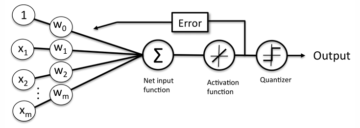
La fonction d'activation $\phi$ est ici linéaire et est simplement la fonction d'identité de l'entrée nette notée $\phi(w^Tx) = w^Tx$.
Les sorties sont donc des valeurs continues après la fonction d'activation (plutôt que binaire).
Cependant, un élément similaire à la fonction de Heaviside nommé Quantizer permet la prédiction des classes.
La fonction d'activation va servir à mettre à jour les poids puisqu'elle sera considérée comme la valeur prédite.
Pour Adaline, il y a la fonction de coût de la somme des carrées des errurs (SSE) à minimiser: $$ J(w) = \frac{1}{2} \sum_{i} (y^{(i)} - \phi(z^{(i)})) ^2$$
Cette fonction de coût est convexe et peut donc être minimiser via SGD.
On met les poids à jour selon la même règle d'aprentissage $w = w + \Delta w$ où $\Delta w = - \eta \nabla J(w)$
Ici, quand le jeu d'entrainement est trop grand il est divisé en batch. Souvent, un paramètre nommé epoch est renseigné. Une epoch est l'application du gradient sur tous les batchs donc sur l'ensemble du jeu d'entrainements (le gradient est mis à jour à chaque batch donc les poids aussi). Par conséquent si notre jeu d'entrainements contient 1000 exemples et qu'on le divise en 10 batch (de 100 exemples). On aura un nombre d'itération de 10 batchs pour compléter une epoch.
Donc si epoch=1 , il y aura eu 10 mise à jour des poids car 10 nombre de batchs.
En revanche, si epoch=5 alors les poids vont être mis 50 fois à jour (car 50 batchs) en utilisant tout le jeu d'entrainements à chaque epoch.
- Même si la règle d'apprentissage $\phi$ ressemble à celle du perceptron, dans Adaline la sortie après fonction d'activation est un nombre réel (car $\phi = w^Tx$) alors que pour le perceptron c'est -1 ou 1.
- La mise à jour des poids se fait sur l'ensemble du jeu de données car le dataset est fourni en entier pour minimiser la fonction de coût. Alors que pour le perceptron c'est plutôt incrémental (instance par instance).
La sortie après addition des poids est appelée $z$ entrée nette, après la fonction d'activation sortie $a$ et apres quantizer c'est la classe prédite $\hat{y}$
Multi-Layer Perceptrons (MLP)
Même si on nomme ce modèle le Multi-Layer Perceptron, les couches sont composées d'unités sigmoid et non de perceptrons (car un perceptron a une fonction de Heaviside comme fonction d'activation et ici on a une sigmoid). De plus les valeurs retournées par ses unités sont continues et nous n'utiliserons plus le famaux quantizer d'Adaline.

Quand a t on besoin des maths du DL ?
Quand on a une couche caché (de Threshold Logic Unit (TLU) car modélisation du seuil du neurone) dans un MLP alors on dit que c'est un réseau de neurons profonds.
Pour faire du DL on a besoin:
- fonctions différentiables
- Algo de calcul du gradient
- Fonctions d'activation non linéaires
- Pour DL on a besoin surtout d'une quantité importante de données
Entrée MLP
La couche d'entrée correspond aux caractéristiques du jeu d'entrainements. (nombre de caractéristiques = nombre de neurones en entrée).
Cette couche n'a pas besoin d'être précisé dans Sickit car elle est déjà représentée par le jeu de données/entrainements.
Sortie MLP
Par défaut, un MLP n'est pas multi-classe. Pour qu'il soit multi-classe il faut donc dédier une neurone par classe en couche de sortie, donc nombre de classes = nombre de neurones de la couche de sortie.
Afin que le jeu d'entrainement soit compatible avec le modèle, il faut transformer les étiquettes des classes en utilisant la représentation OneHot (OneHotEncoder dans sickit):

La fonction softwax est souvent utilisée comme fonction d'activation sur la couche de sortie afin de transformer le vecteur de l'avant dernière couche en une distribution de probabilité permettant de discriminer l'étiquette prédite et donc d'exploiter le résultat et de l'avoir d'une forme compréhensible pour un humain.
Initialisation des poids
Il est important d'initialiser les poids de manière alétoire, car si tous les poids ont une même valeur initiale (comme 0), la rétropropagation les affectera de la même manière et ils resteront tous égaux. Cela rend le réseau inopérationnel.
Entrainement MLP
L'entrainement d'un MLP est basé sur la rétro-propagation de l'erreur:
- 2 passage dans le réseau en avant et en arrière
- L'entrainement permet de déterminer l'ajustement des poids de chaque connexion et de chaque terme constant (biais) pour réduire l'erreur.
Le modèle suivant sera considérée pour les calculs des parties suivantes:
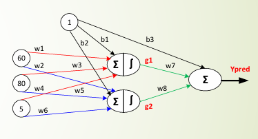
Avec le jeu d'entrainement suivant: | x1 | x2 | x3 | Y | -----|----|----|---| |60|80|5|82| |70|75|7|94| |...|||| |50|55|10|45|
Forward porpagation
La propgataion en avant d'un exemple de la couche d'entrée vers la couche de sortie permet de produire une prédiction et de calculer le résidu (erreur) entre la sortie prédite et la sortie réelle de l'exemple.
La première couche cachée délivre un vecteur composé de $g_1$ et $g_2$.
Si on veut calculer $g_1$ sur la première observation:

Il faut d'abord calculer l'entrée nette $z_1$ puis pour calculer $g_1$ avec la fonction d'activation qui est une logistique (sigmoid): $$ g_1 = \frac{1}{1 + e^{-z_1}} $$
ici $z_1 = -0.5$ donc $g_1 = 0.37$
Si on répète cette opération, on trouve $0.047$ pour $g_2$:

La sortie $y_{pred}$ peut donc être calculé, qui est ici une simple somme car une valeur numérique est prédite:

Une passe en avant sur une observation a donc été effectuée.
Backward propagation
La propagation en arrière permet de propagaer le gradient (l'erreur) de la couche de sortie vers la couche d'entrée afin d'ajuster le biais et les poids.
Il y a donc une différence entre $y_{pred} = 24.94$ et la sortie réelle du jeu d'entrainement qui est $y = 82$.
Il faut donc propager l'erreur de la sortie vers l'entrée afin de mettre à jour les poids et biais.
Si on prend la fonction de cout MSE pour modéliser l'erreur alors: $$ MSE = (y_{pred} - y)^2 $$
Il faut donc calculer la dérivée de la fonction de cout en fonction de chaque paramètre afin de les ajuster: $$ \frac{\partial{MSE}}{\partial{w_7}} = \frac{\partial{MSE}}{\partial{y_{pred}}} \cdot \frac{\partial{y_{pred}}}{\partial{w_7}} = 2 \cdot (y_{pred} - y) \cdot g_1 = 2 \cdot (24.94 - 82) \cdot 0.37 = -42.2 $$
Idem si on calcule pour $w_8$ et $b_3$: $$ \frac{\partial{MSE}}{\partial{w_8}} = \frac{\partial{MSE}}{\partial{y_{pred}}} \cdot \frac{\partial{y_{pred}}}{\partial{w_8}} = 2 \cdot (y_{pred} - y) \cdot g_2 = - 5.36 \\ \frac{\partial{MSE}}{\partial{b_3}} = \frac{\partial{MSE}}{\partial{y_{pred}}} \cdot \frac{\partial{y_{pred}}}{\partial{b_3}} = 2 \cdot (y_{pred} - y) \cdot 1 = -114.1 $$
Si on prend un learning rate $\eta = 0.01$ on met à jour les paramètres en utilisant la méthode du gradient: $$ w_7 = w_7 - \eta \frac{\partial{MSE}}{\partial{w_7}} = 12 - 0.01 \cdot (-42.2) = 12.04 $$
De même pour $w_8$ et $b_3$: $$ w_8 = w_8 - \eta \frac{\partial{MSE}}{\partial{w_8}} = 9.05 \\ b_3 = b_3 - \eta \frac{\partial{MSE}}{\partial{b_3}} = 21.1 \\ $$
Il est donc ensuite possible de propager l'erreur sur la couche d'avant: $$ \frac{\partial{MSE}}{\partial{w_1}} = \frac{\partial{MSE}}{\partial{y_{pred}}} \cdot \frac{\partial{y_{pred}}}{\partial{g_1}} \cdot \frac{\partial{g_1}}{\partial{w_1}} \\ \text{ avec } \frac{\partial{g_1}}{\partial{w_1}} = \frac{\partial{g_1}}{\partial{z_1}} \cdot \frac{\partial{z_1}}{\partial{w_1}} = \frac{\partial{\sigma}}{\partial{z_1}} \cdot \frac{\partial{z_1}}{\partial{w_1}} $$
Comme le neurone est composé de deux opérations linéaire et non linaire, $g_1$ est donc un composition de la fonction $z_1$ et de la logistique $\sigma$: $g_1 = \sigma(z_1(w_1, w_3, w_5))$
Donc: $$ \frac{\partial{MSE}}{\partial{w_1}} = \frac{\partial{MSE}}{\partial{y_{pred}}} \cdot \frac{\partial{y_{pred}}}{\partial{g_1}} \cdot \frac{\partial{\sigma}}{\partial{z_1}} \cdot \frac{\partial{z_1}}{\partial{w_1}} $$
Avec: $$ \frac{\partial{MSE}}{\partial{y_{pred}}} = 2 \cdot (y_{pred} - y) \\ \frac{\partial{y_{pred}}}{\partial{g_1}} = w_7 \text{ car } y_{pred} = w_7 g_1 + w_8 g_2 + b_3 \\ \frac{\partial{\sigma}}{\partial{z_1}} = \sigma(z_1) (1 - \sigma(z_1)) \\ \frac{\partial{z_1}}{\partial{w_1}} = x_1 \text{ car } z_1 = x_1 w_1 + w_3 x_2 + w_5 x_3 + b_1 $$
Ainsi, on a: $$ \frac{\partial{MSE}}{\partial{w_1}} = 2 (y_{pred} - y) \cdot w_7 \cdot (\frac{1}{1 + e^{(-z_1)}}) (1 - \frac{1}{1 + e^{(-z_1)}}) \cdot x_1 = 2 (24.94 - 82) \cdot 12 \cdot (\frac{1}{1 + e^{-(-0.5)}}) (1 - \frac{1}{1 + e^{-(-0.5)}}) \cdot 60 = - 19.3 $$
On peut donc mettre à jour $w_1$: $$ w_1 - \eta \frac{\partial{MSE}}{\partial{w_1}} = 0.1 - 0.01 (-19.3) = 0.293 $$
Idem, pour la mise à jour des autres poids.
La propagation de l'erreur est ici calculé en utilisant SGD car le gradient est calculé pour une observation choisit aléatoirement. Cependant le MGD est plus souvent utilisé pour calculer le gradient sur un batch donné composé de plusieurs observations.
Une connexion qui donne un résultat juste ne sera donc pas mise à jour car $y_{pred} - y = 0$
Calcul du gradient par mini-batchs
A chaque étape, au lieu de calculer les dérivées partielles sur l'ensemble du jeu de données (descente de gradient ordinaire) ou sur un seul exemple (SGD), la descente par mini-batch calcule le gradient sur des sous ensemble sélectionnées aléatoirement.
Optimisation des calculs via matrices
Si on prend un réseau plus complexes avec une couche cachée mais 3 unités d'activation.

L'unité d'activation $i$ de la couche $l$ est notée $a_i^{(l)}$. L'activation des unités d'une couche donnée est: $$ a^{(l)} = \begin{bmatrix} a_0^{(l)} \\ a_1^{(l)} . \\ . \\ . \\ a_m^{(l)} \end{bmatrix} $$
Donc chaque unité $i$ de la couche $l$ est connecté à l'aide d'un poids à chaque unité $k$ de la couche $l+1$. Ce poids est noté $w_{k, i}^{(l)}$.
Pour la couche d'entrée: $$ a^{(0)} = \begin{bmatrix} a_0^{(0)} \\ a_1^{(0)} . \\ . \\ . \\ a_m^{(0)} \end{bmatrix} = \begin{bmatrix} 1 \\ x_1^{(0)} . \\ . \\ . \\ x_m^{(0)} \end{bmatrix} $$
Pour représenter les poids de la couche $l$ avec une matrice $W^{(l)} \in R^{h \times m}$ où $h$ est le nombre d'unités d'activation à la couche $l+1$ et $m$ est le nombre d'unités à la couche $l$.
Donc un réseau à $L$ couches à $L-1$ matrices de poids.
Donc l'entrée net pour la 2ème couche: $$ z^{(2)} = W^{(1)}[a^{(1)}]^T \\ a^{(2)} = \phi (z^{(2)}) $$
La propagation avant peut donc être calculé.
Pour la rétropropagation, il faut trouver le vecteur d'erreur final: $$ \delta^{(3)} = a^{(3)} - y $$
Donc si on calcule l'erreur de la couche cachée: $$ \delta^{(2)} = (W^{(2)})^T (\delta^{(3)} * \frac{\partial{\phi (z^{(2)})}}{z^{(2)}}) \\ \text{ avec } \frac{\partial{\phi (z^{(2)})}}{z^{(2)}} = (a^{(2)} * (1 - a^{(2)})) $$
Donc pour mettre à jour les poids de la couche $l$ via descente de gradient, on a: $$ W^{(l)} = W^{(l)} - \eta \nabla J^{(l)} = W^{(l)} - \eta \frac{\partial{J(W)}}{\partial{W^{(l)}}} = W^{(l)} - \eta \text{ } a^{(l)} \delta^{(l+1)} $$
La fonction de perte est ici la même que pour la régression logistique sauf qu'elle est généralisée à toutes les unités d'activation $j$ et un terme de régularisation L2 est ajouté: $$ J(W) = - [ \sum_{i=1}^{n} \sum_{j=1}^m y_j^{(i)} log(\phi (z_j^{(i)})) + (1 - y_j^{(i)}) log(1 - \phi (z_j^{(i)})) ] + \frac{\lambda}{2} \sum_{l=1}^{L-1} \sum_{i=1}^{u_l} \sum_{j=1}^{u_{l+1}} (w_{j, i}^{(l)})^2 $$
Il est important de noter que W est un ensemble de matrices (tenseur) qui n'ont habituellement pas la même dimension.
Fonctions d'activation

Une fonction d'activation $\phi$ doit être dérivable en tout point pour que le gradient puissse s'appliquer (donc pour que la backpropagation fonctionne). $\phi$ doivent être non linéaire pour apprendre des patrons complexes (ex: sigmoid, polynomiale, heaviside, tanh, RELU, etc.).
Les fonctions d'activation sont donc divisées en deux familles: linéaire et non-linéaire.
Ces fonctions sont soit monotone soit non monotone:

Dans la rétropropagation, les poids sont mis à jour afin d'affecter le résultat d'activation (positivement ou négativement). Si la fonction n'est pas monotone, alors en augmentant le poids une baisse de l'activation pourrait être provoquée.
Il est donc préférable d'utiliser une fonction monotone.
Néanmoins, il existe des fonctions d'activation peu connues qui sont monotones: PFLU, FPLFU et Swish.
Heaviside
La fonction Heaviside est aussi appelée step-function. Sa dérivée est toujours 0, elle n'est donc pas différentiable ce qui la rend inutilisable pour calculer son gradient et donc inutilisable pour la rétro-propagation.
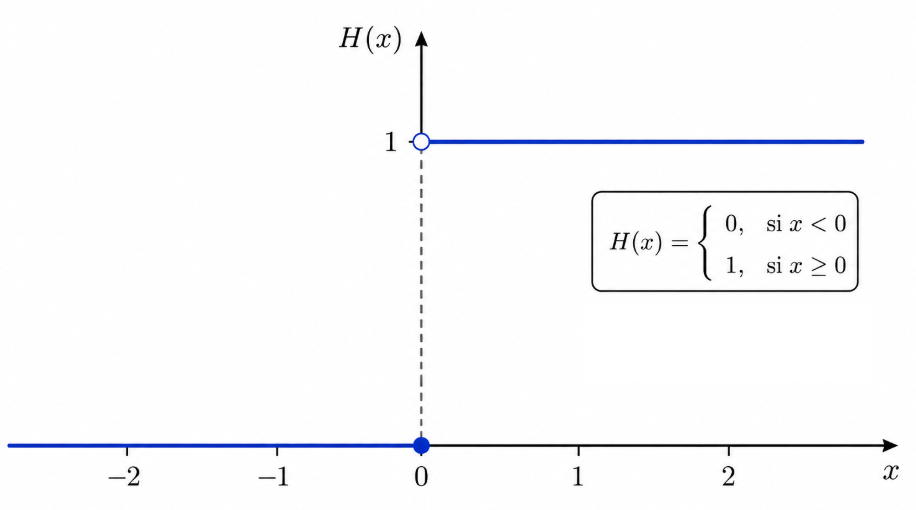
Sigmoid (logistique)
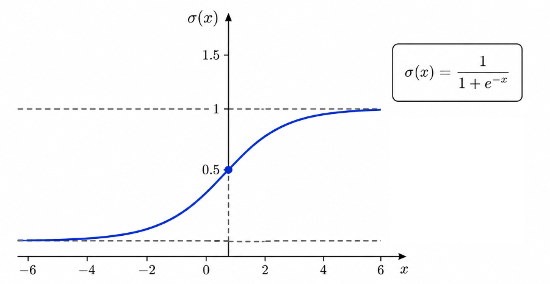
- Particulièrement adaptée pour prédire une probabilité comme sortie.
- Elle est dérivable.
- Elle est monotone (sa dérivée ne l'est pas cependant). Cela permet de garantir que l'erreur soit convexe pour la sigmoid.
- Impacter par le vanishing gradient
Tangeante hyperbolique (TanH)
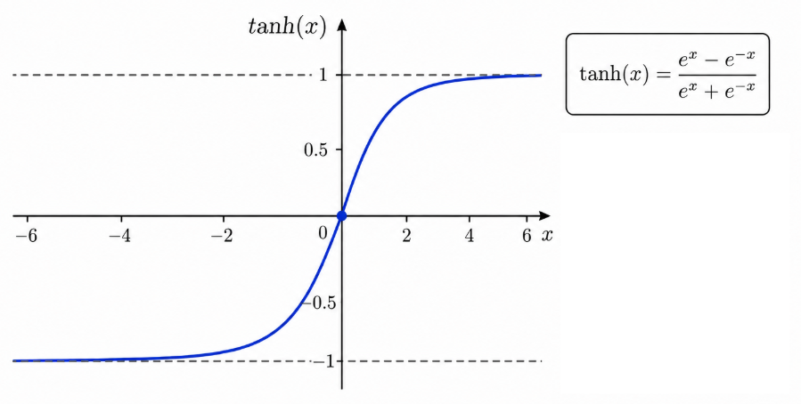
- Particulièrement adaptée pour prédire une probabilité comme sortie.
- Elle est dérivable.
- Elle est monotone (sa dérivée ne l'est pas cependant). Cela permet de garantir que l'erreur soit convexe pour tanh.
- Impacter par le vanishing gradient
- Tanh à l'avantage de donner des scores très négatifs pour des entrées très négatives.
Le problème de l'effacement du gradient (vanishing gradient)
Le problème du vanishing gradient arrive quand le gradient calculé réduit considérablement durant la rétro-propagation, à mesure qu'il se propage des couches supérieures vers les couches inférieures, ce qui fait que les couches proches de l'entrée se mettent à jour lentement ou pas du tout.
C'est un des problèmes majeurs en DL.
Ce problème est directement relié aux dérivées des fonctions d'activation dans les réseaux de neurones. Si on prend une unité sigmoide qui est donc affectée par ce problème: $$ \sigma (x) = \frac{1}{1+ e^{-x}} \\ \text{ avec la dérivée qui est : } \sigma '(x) = \sigma (x) \cdot (1 - \sigma (x)) $$
Pour les grandes valeurs de $x$ qu'elles soient négatives ou positives, $\sigma$ tend respectivement vers 0 ou 1. Cependant, $\sigma '$ tend toujours vers 0 quand $|x|$ est grand (négatif ou positif).
Dans un réseau de neurones profonds, si les entrées d'une couche sont grandes (négatif ou positif), le gradient de cette couche sera donc très petit (car dérivé qui tend vers 0). En se rétro-propagant, ces gradients se multiplie avec les dérivées des couches superieur ce qui fait que le gradient se réduit considérablement à chaque étape ce qui rend les gradients proche des couches d'entrée à pratiquement 0.
Rectified Linear Unit (RELU)
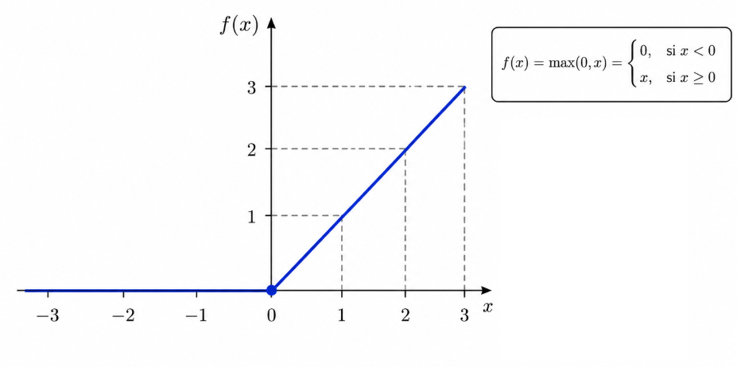
- Dans certains cas les sigmoids et tanh occasione des problèmes où l'apprentissage est bloqué et fonctionnent mal avec les RNN -> donc RELU
- Souvent RELU car rapide à calculer
- Car beaucoup de valeurs d'unités RELU sont à zéro ce qui accélère la convergence
- Moins de problèmes de gradient qui disparaissent
Toutes les valeurs négatives deviennent 0, ce qui n'est pas souhaitable parfois car cela peut arreter l'entrainement au niveau des entrées négatives. Ce comportement peut être corriger avec un Leaky RELU ou Parametric RELU:
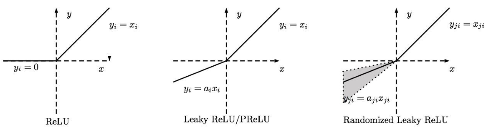
Les activations tombent souvent à zéro avec RELU ce qui occasionne des matrices d'activation creuses (avec de nombreux zéro car pour tout $x$ inférieur à 0 RELU met ces valeurs à 0). Ce problème s'appelle le dead RELU car le gradient ne se propage pas durant la rétro-propagation car la valeur de l'activation est 0 et les poids ne sont donc pas mis à jour.
Exponential Linear Unit (ELU)
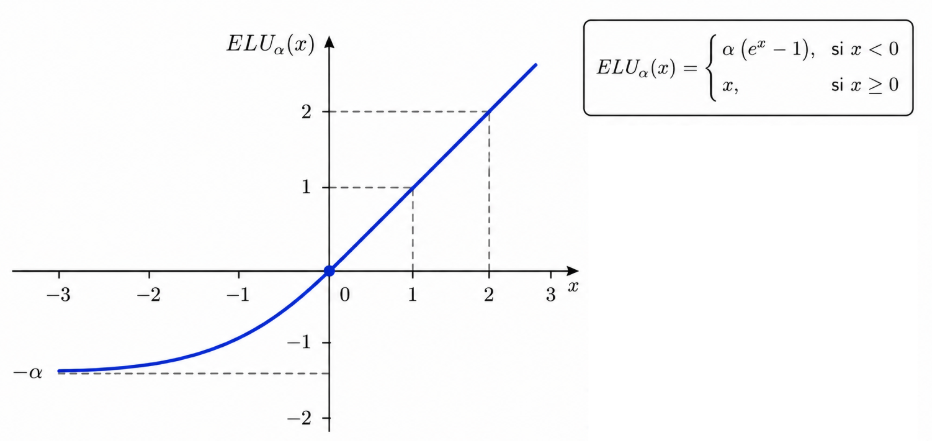
Très similaire à Leaky RELU.
Scaled ELU
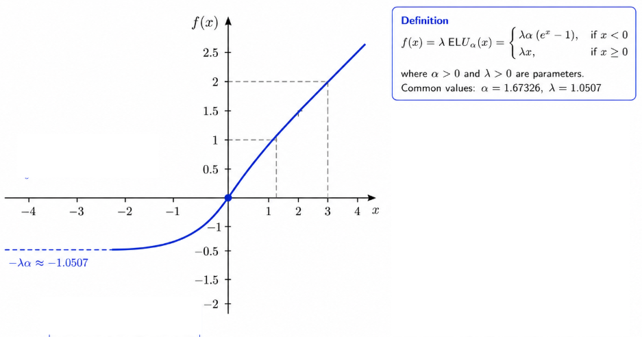
- Il est démontré qu'on ne peut pas avoir de vanishing gradient.
- Alpha et Lambda sont des valeurs fixes qui sont déterminées en fonction des entrées.
- Pour un jeu d'entrées standardisé (moyenne à 0 et écart-type à 1), alpha et lambda sont $\alpha = 1.67$ et $\lambda = 1.05$.
- Les réseaux convergent plus vite.
- Dans Keras, c'est $selu$ et comme kernel $lecun\_normal$. Avec une régularisation dropout au mieux.
Swish

- Développé par Google Brain
- Non monotone et visait à détroner RELU -> Beaucoup de dead RELU et nuisible dans les réseaux très profonds.
- Bornée en négatif et à utiliser avec batch normalization
Softmax
La fonction softmax permet d'étendre une fonction logistique aux problèmes multi-classes. Cette fonction transforme un vecteur en une probabilité d'appartenance à une classe entre 0 et 1. Leur somme est égale à 1. Ne fonctionne pas si une instance peut appartenir à plusieurs classes.
Vision et traitements de l'image: Réseaux de neurones à convolution (CNN)
C'est un type particulier de réseau de neurones qui utilise les produits de convolution comme opération plutôt que les opérations matricielles. Ce type de RNP traite majoritairement des images ou une information modélisée en 2D.
Avec un RNP classique, il faudrait pour une image 28 x 28 = 784 pixels, il faudrait 785 paramètres. Cependant si on prend un cas réel et donc une image 24M pixels, il faudrait 70 millions de paramètres. Les CNN répondent à ce problème en réduisant les paramètres.
Pour rappel, une opération de convolution permet d'appliquer un filtre de convolution (aussi appelé noyau) qui permet d'extraire des caractéristiques d'une image:

Ces noyaux sont en général impairs en ML.
Un CNN a pour but d'apprendre des filtres de convolution optimaux afin d'extraire les caractéristiques les plus discriminantes. C'est pour cela qu'il existe plusieurs feature maps car un filtre de convolution correspond a une feature map:
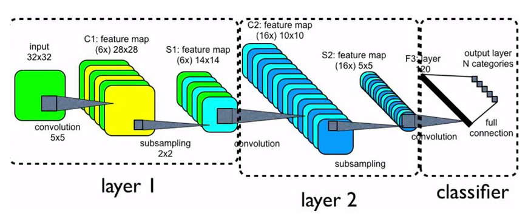
Pour l'entrainement, l'algorithme de rétro-propagation est utilisé. Il utilise notamment l'opération de déconvolution par la transposée d'une matrice.
Des couches d'unités spécifiques à la vision sont aussi ajouter afin d'améliorer la qualité du modèle, notamment:
Pooling
Une couche de pooling a pour but de réduire la taille de l'image en extrayant des caractéristiques spécifiques tels que la moyenne ou le Max Pooling qui va seulement extraire la valeur maximale avec un filtre donné:
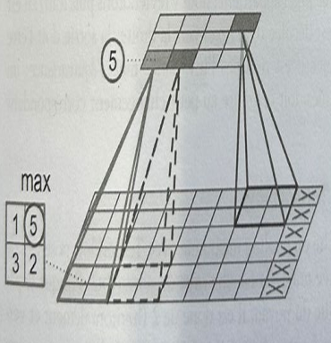
- Le pooling est intéressant pour gérer les images de taille différentes en entrée. Il peut permettre de normaliser les images à la même taille en extrayant les caractéristiques cibles.
Régularisation DL : Dropout
Il est possible de d'ignorer certains neurones artificielles, ils sont choisis de manière aléatoire. Pour chaque couche cachée à chaque observation, il est donc ignorer $d$ unités d'activation.
Cette régularisation permet:
- De réduire le sur-apprentissage
- Dans les couches denses, les neurones développent un co-dépendance, ce qui permet de réduire ce comportement également.
Ce type de régularisation n'est pas utiliser que seulement pour les CNN mais dans le DL en général.
Padding
Le padding conciste à ajouter un nombre de lignes et de colonnes appropriées de chaque coté.
De nos jours, il n'est pas nécessaire d'entrainer son CNN. Un CNN pré-entrainé peut être pris, il y aura seulement à ajuster les paramètres (fine-tuning). De nombreux modèles sont disponibles Lenet, Alexnet, VGG, etc.
L'architecture classique d'un CNN est la suivante:

Une couche de sortie Softmax avec le nombre de classes en nombre de neurones est ajoutée. De plus, deux couches denses sont ajoutées pour les tâches de classification car les couches de vision (convolution, pooling, etc.) permettent uniquement d'extraire les caractéristiques de l'image. Enfin, pour que les différentes feature maps de la couche de convolution soit interprétable par les couches denses il est nécessaire d'ajouter une couche Flatten afin de les convertir en un vecteur.
Les types de couche de réseau de neurones dans Kéras
- Flatten: Cette couche est utilisée généralement comme couche d'entrée car elle permet de convertir une entrée multi-dimensionnelle en un vecteur.
- Dense: Cette couche permet d'appliquer une transformation à son entrée afin de réaliser de la classification ou de la régression. Avec la fonction d'activation qui est au choix.
Traitement du langage naturel (NLP)
Le traitement du langage naturel occupe une place considérable en DL. Il est utilisé pour la classification de texte, la traudtcion ou correction automatique, etc.
Des librairies telles que NLTK existent pour réaliser des opérations NLP.
Il existent différents mécanismes d'encapsulation (word embeddings) afin de convertir une donnée textuelles en un vecteur.
- Bag of words: Cette technique se base sur la fréquence des mots dans un documents afin de construire un vecteur. Cette représentation a le défaut de ne pas prendre en compte l'ordre des mots.
- One Hot Encoder: Représentation binaire dont la taille finale de l'encodage est conséquente.
- Encodage par index: Cette technique donne un index à chaque mot et garde dans une table tampon la correspondance index-mot.
- Skip-Gram: Cette technique utilise un RNP avec une couche caché afin de construire un vecteur. Un modèle pré-entrainé peut être utilisé où il faudra uniquement ajuster les paramètres.
- Continuous Bag of Words (CBOW): Similaire à Skip-Gram mais prédit le mot en fonction de la phrase. Néanmoins, Skip-Gram s'entraine mieux avec peu de mots.
Néanmoins, pour les NLP modernes l'encodage Bidirectionnal Encoder Representations from Transformers (BERT) est utilisé. C'est encodage sera plus détaillé dans la partie Moderne GenAI.
Réseau de neurones récurrents (RNN)
C'est une famille de RNP qui sert aux données séquentielles.
La particularité du RNN est qu'il intègre une mémoire permettant de partager l'information d'une donnée précédente afin que le modèle en prenne compte lors de la construction de son résultat.
Par exemple, en NLP, le RNN peut permettre de prédire un mot en fonction des mots déjà lu.
Un RNN est un réseau qui applique une fonction à une séquence. Ce qui produit une séquence également en sortie $y^1, ..., y^t$ tout en gardant les états internes $h^1, ..., h^t$ à chaque pas/moment/incrément de temps de la séquence (temporelle).
La version la plus simple est $h(t) = tanh(Ux^{(t)} + Wh^{(t-1)})$ et $y^{(t)} = Vh^{(t)}$. Pour chaque pas de la séquence (temporelle) une unité RNN est défini:

$U$ est la matrice de poids entre les entrées et la couche cachée.
$W$ est la matrice de poids entres les unités de la couche cachée. (Une seule couche cachée ici).
$V$ est la matrice de poids entres les unités de la couche cachée et la couche de sortie.
Les paramètres sont donc propagés dans le temps (ici une seule couche d'unités RNN):

Un exemple concret est la prédiction de caractères. Par exemple, le vocabulaire $h, e, l, o$ est donné au RNN. La séquence de caractères $hell$ est envoyé au modèle. Les sorties $y_0$ à $y_3$ seront ignorés car elles ne sont pas cohérente (en réalité ces sorties devraient renvoyées le résultat d'entrée c'est à dire $hell$), mais si le modèle est correctement ajusté il devrait prédire la lettre $o$ en $y_4$ afin d'avoir la séquence $hello$ en sortie.
Pour l'entrainement, la rétro-propagation est utilisé. L'entrainement a pour but d'ajuster l'ensemble des poids du modèles (U, V et W) afin qu'ils soient optimaux.
L'erreur globale est modélisée par la somme des erreurs de chaque sortie:

$$ E = \sum_{t=0}^{\tau} E^{(t)} (y^{(t)}, x^{(t)}) $$
Afin de compléter la rétro-propagation, il faut calculer les gradients des paramètres U, V et W. Par exemple sur U:
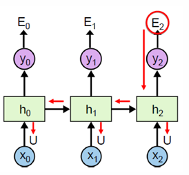
$$ \frac{\partial{E^{(2)}}}{\partial{U}} = \frac{\partial{E^{(2)}}}{\partial{h^{(2)}}} ( x^{(2)} + \frac{\partial{h^{(2)}}}{\partial{h^{(1)}}} ( x^{(1)} + \frac{\partial{h^{(1)}}}{\partial{h^{(0)}}} x^{(0)} )) $$
Le problème du RNN est que pourapprendre à long terme, il faut propager le gradient loin dans le temps ce qui entraine le problème du vanishing gradient.
Pour résoudre à ce problème, l'information transmise peut être séléctionnée via des mécanismes de portes.
Long Short-Term Memory (LSTM)

Afin de séléctionner l'information et d'orienter les sortie un élément $C$ qui est un convoyeur ainsi que des portes logiques ont été rajoutés.
Trois éléments fonctionnels ont été définis:
- La porte d'oublie: Cette porte permet de mesurer quelle quantité d'information (ancienne et nouvelle) est à enlever.
- La porte d'entrées: Cette porte consiste à choisir quelle quantité de nouvelle information est à garder.
- Ensuite le convoyeur $C$ est mis à jour.
- Enfin la sortie $y$ est construite en se basant sur l'état précédent, la nouvelle entrée mais également le filtre appliqué par le convoyeur $C$.
Les LSTM permettent d'orienter les sorties d'un RNN en fonction de presque l'attentation approtée plus ou moins à certains éléments du modèle.
RNN profonds
Les RNN étudiés ne comportaient qu'une seule couche d'unités RNN.
Par exemple, une couche composée de 100 unités RNN ne sera capable de retenir 100 incréments de temps. Après cela, l'information ne sera pas retenu, par exemple le 101ème caractère.
Pour créer un RNN profond il suffit d'empiler des couches RNN. La séquence de sortie d'une couche est l'entrée de la prochaine:
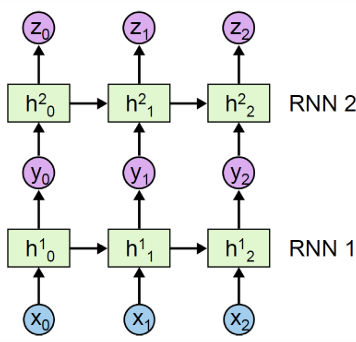
Les auto-encodeurs
Les auto-encodeurs (AE) sont une technique permettant de compresser des données. Bien qu'ils ne soient pas optimaux, ils peuvent être utilisés pour débruiter des données, faire de la réduction de dimensionalité et extraire des caractéristiques (feature extraction).
Malgré qu'ils ne soient pas perfomants, ils sont un élément clés aux Variable Auto-Encoder (VAE) qui sont plus intéressant.
Si un encodeur peut être construit alors un décodeur peut être également conçu afin d'avoir une sortie compréhensible:

Les AE ne sont pas bon pour compressés.
Un AE est un RNP à 3 couches ou plus qui intègre une fonction de perte et donc un optimiseur (SGD). Un auto-encodeur vise à approximer une fonction identité afin de reproduire l'entrée. Généralement les unités cachées sont moins nombreuses que le nombre de neurones en entrée et en sortie (but de la compression, réduire et réduire les unités cachées afin de compresser l'information):

Pour la vision, il est nécessaire d'utiliser des couches de convolution (Convolutional AE) afin d'effectuer des tâches du type augmentation de la résolution car elles produiront de meilleures résultats. Des opérations d'upsampling et de max-pooling pourront également être ajoutées.
Variable Auto Encoder (VAE)
Un VAE décrit une représentation latente d'un objet d'entrée. En termes de probabibilités, c'est à dire que le modèle intégrera une distribtuion de probabilités pour chaque attribut latent ce qui rend l'espace continu, plutôt que d'avoir des valeurs discrètes. Ce choix facilitera l'échantillonage et l'interpolation aléatoire.
Un attribut latent correspond à un neurone dans la couche de compression. Par exemple, si on prend un véhicule dont la représentation latente a $n$ attrbiuts (donc $n$ neurones dans la couche de compression). Chaque attribut représente une propriété du véhicule telle que sa longueur, largeur et hauteur. Au lieu d'une valeur fixe, le VAE décodera cette propriété comme une distribution normale avec une moyenne de par exemple 4. Ensuite, le décodeur pourra choisir d'échantilloner une variable latente dans la plage de distribution afin de créer une variation:

La sortie de l'encodeur est une distribution gaussienne multivariée. $z$ est la variable continue aléatoire de sortie de l'encodeur. $z$ est donc échantilloné de façon stochastique (aléatoire), ensuite $z$ est envoyé dans le décodeur afin d'avoir une représentation compréhensible de l'échantillon.
Une fonction de perte spéciale est affectée:
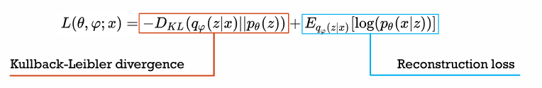
Kullback-Leibler mesure la quantité d'information perdue pour explorer de nouvelles variations.
La reconstruction loss mesure la différence entre l'entrée originale et la sortie générée (la reconstruction).
Exemple complet VAE:
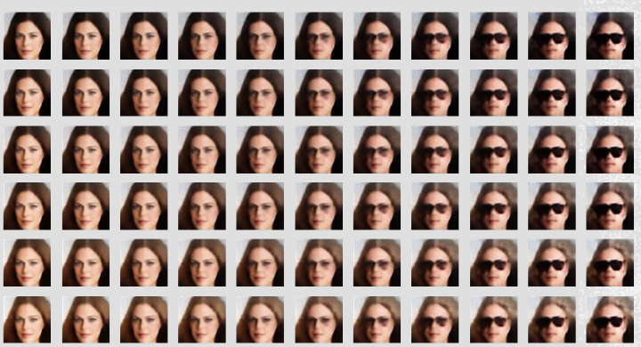
Les Generative Adversarial Network (GAN)
Les GAN sont des types particuliers de RN, ils sont des réseaux génératifs. Contrairement aux AE, ils peuvent créer des nouvelles données dans un encodage donné.
Les réseaux génératifs incluent: les VAE, GAN, les modèles de diffusion, Latente Dirichlet Allocation, les réseaux bayesiens( eg. Naive Bayes), Gaussian Mixture, etc.
Deux éléments clés composent les GAN. Ces éléments sont en compétition coopérative:
- Le générateur: Cet élément a pour but d'apprendre à générer des fausses données afin de tromper le discriminateur.
- Le discriminateur: Cet élément apprend à discriminer les fausses données (classification binaire).
Ainsi, un GAN optimal a un générateur qui arrive a toujours tromper son discriminateur via la génération de données quasiment parfaite.
Au fil de l'entrainement, le discriminateur n'arrivera donc plus à détecter les fausses données, il pourra donc être éliminer et seulement le générateur sera utilisé par la suite.
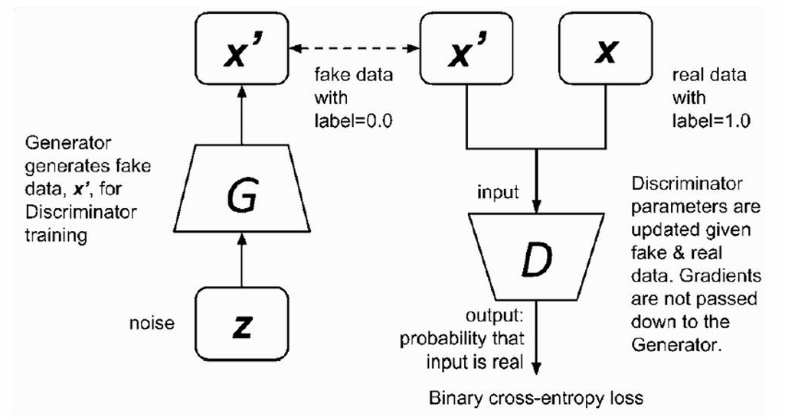
- L'entrée du générateur est du bruit ce qui permet de générer sa sortie synthétisé.
- L'entrée du discriminateur est une vraie ou une fausse donnée. Sa sortie est 1 ou 0.
- La fonction de coûts du discriminateur est l'entropie croisée binaire (log loss).
- La fonction de coûts du générateur est l'opposé de celle du discriminateur donc $- LogLoss$.
- Du point de vue du générateur $LogLoss$ doit être minimisée, au contraire du point de vue du discriminateur $LogLoss$ doit être maximisée (d'où le signe $-$).
- La rétro-propagation est utilisé pour minimiser les fonctions de coûts et optimiser les paramètres.
- L'entrainement d'un GAN est néanmoins compliqué car il faut trouver le juste milieu entre le générateur et le disciminateur. Sinon aucun des deux ne sera en mesure d'apprendre et donc de converger vers une solution.
- Si le discriminateur converge trop vite, le générateur ne recevra plus suffisament de gradient pour converger.
- Les GAN sont affectés par le problème de l'effondrement: le générateur produit des sorties presque similaire pour différents encodages latents.
Des architectures alernatives pour la vision telle que Deep convolutional GAN ou Conditional GAN existent également.
D'autre part, la majorité des architectures de ces modèles sont décrites de manière fonctionnelle ce qui démontre une transition depuis des modèles purement mathématique vers l'empilement de briques architecturelles rencontrées lors des différents problèmes en ML.
Graph Neural Network (GNN)
Les graphes ont toujours attirés l'intérêt que ce soit en mathématique ou en informatique. En effet, il est généralement important de considérer l'agencement des données afin d'en extraire l'entiereté de l'information disponible et potentiellement bénéfique.
Les graphes permettent de représenter des informations sous forme relationnelle, habituellement en 2D. Néanmoins, ils ne capturent pas bien l'information contextuelle liée à un noeud voisin.
Il existe des GNN exploitant tout type d'unités: AE, Transformeur, etc.
Un graphe $G$ est une structure représenté par des noeuds $N$ et des arêtes $E$ entre ces noeuds.
Les noeuds peuvent être creux ou contenir une structure tel qu'un noeud peut représenter un utilisateur et ses caractéristiques.
Une arête peut avoir une direction, un poids et potentiellement des noeuds liées. Des caractéristqiues supplémentaires peuvent être ajoutées si elles sont pertinentes.
Un graphe peut être représenté sous la forme d'une matrice d'adjacence $A \in R^{|N| \times |N|}$, où:
- $|N|$ est le nombre de noeuds dans le graphe.
- La matrice d'adjacence est initialisée avec des $0$.
- Si une arête existe entre deux noeuds alors elle sera représentée par la valeur $1$ dans la matrice d'adjacence sinon $0$.
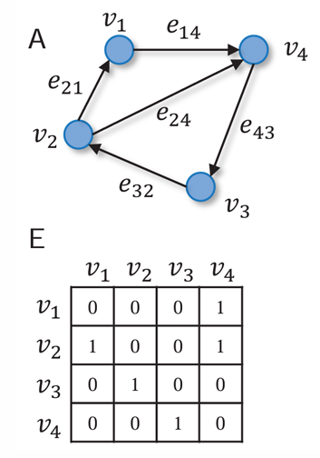
Capacités d'un GNN:
- Génération d'un noeud ou d'une arête.
- Classification d'un noeud ou d'une arête.
- Les mêmes choses mais sur un sous-ensemble du graphe composé de noeuds et d'arêtes.
Une des applications les plus populaires des GNN est en chimie (Alphafold, etc.) où ils peuvent permettre la prédiction de nouvelles molécules, etc.
Google Maps réalise les prédictions de routes via GNN ce qui leur a permis d'améliorer significativement leurs résultats.
Encapsulation des noeuds (node embedding)
L'encapsulation des noeuds permet d'encoder l'information d'un noeud dans une représentation latente. La similiarité entre les encodages de plusieurs noeuds indique donc leur similarité dans le réseau. Ce mécanisme sert donc pour la classification de noeuds, la prédictions des liens (arêtes), etc.
- Un encodeur est donc nécessaire.
- Une fonction afin de mesurer la similiarité (similiarité cosinus, distance de Minkowski, simple produit scalaire, etc.)
La version la plus simple de l'encodage final est un vecteur contenant une valeur représentant la distance pour chaque noeud depuis un noeud de départ donné.
L'encodeur Node2Vec est un encodeur populaire qui se base sur les algortithmes d'exploration de graphes suivant:
- Marche aléatoire: L'algorithme parcourt de façon aléatoire le graphe jusqu'à découvrir l'ensemble des noeuds depuis un noeud initial donné.
- La marche aléatoire biaisée: L'algorithme ajoute un facteur de biais afin de parcourir le graphe de manière plus optimale.
Node2Vec convertit ces informations en probabilité afin d'estimer la probabilité d'accéder à un noeud depuis un noeud initial donné.
Encapsulation de graphe (graph embedding)
Un graphe pourrait être encapsulé via la création d'un nouveau noeud virtuel qui contiendrait les informations de chaque noeuds en faisant leur moyenne.
Dans un environnement contenant plusieurs graphes, un tel noeud pourrait être crée jusqu'à contenir l'information encodée pour chaque sous-graphe.
Limites
Si un noeud est ajouté après l'entrainement, il ne sera pas possible de calculer son encodage avec un encodeur trasnductif (Node2Vec):
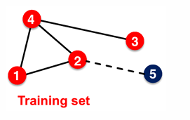
Ceci est du au fait que les encodeurs transductif se basent sur la structure du graphe pour créer un encodage.
Néanmoins, pour répondre à ce problème les encodeurs inductifs (GraphSage) ont été inventés.
Encapsulation des noeuds basée sur le voisinage
Chaque noeud calcule un encodage local de chacun de ses voisins. Ensuite, le noeud initial agrège l'encodage de chacun de ses voisins, récursivement jusqu'à ce que l'entierté du graphe soit parcouru.
Ainsi un noeud peut être ajoutée après l'entrainement. Chaque noeud définit donc un graphe de calcul par rapport à son voisinage.
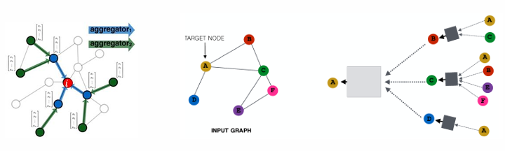
Ainsi un neurone peut être placé entre chaque lien présent dans cette réprésentation latente, ce qui constituera le réseau:
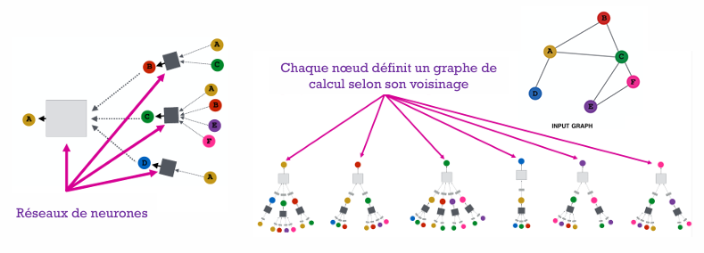
Tous les carrées sont donc respectivement un neurone (pour chaque carré).
Invariance et équivariance
Un GNN doit être invariant et équivariant c'est à dire que changer l'ordre des voisins ne change pas la sortie.
Intuition: produit de convolution
Un GNN pourrait être représenté sous la forme d'une grille et utilisé des produits de convolution pour ses calculs et donc des couches de CNN.
Néanmoins, les CNN ne sont pas invariant et équivariant. Donc changer l'ordre des voisins peut changer la sortie ce qui n'est pas désirable.
Entrainement et fonction de coûts
Une fonction de perte est donc minimiser. SSE est utilisé lorsque la sortie est continue sinon log loss lorsque la sortie est discrète:

Focus sur la conception
La qualité du modèle final réside princpalement dans la méthode d'aggrégation des noeuds.
Pour avoir un GNN optimal:
- Définir une fonction d'aggrégation de voisinage
- Choisir une fonction de perte sur l'encodage des noeuds pour l'optimisation avec rétro-propagation
- Entrainer le GNN sur un batch de noeuds
Une diversité de modèles de GNN existe (GraphSage, PinSage, etc.), une diversité de technqiues associées aux GNN existent également (théorie des graphe, pooling operator, skip connection, etc.).
Mécanisme d'attention et architecture à base de transformeur
Les mécanismes d'attention sont devenus très populaire et sont l'élément principal des LLM modernes.
L'attention permet d'accentuer certains termes juger important afin que le modèle oriente ses sorties et son apprentissage.
Ils sont particulièrement efficace pour le traitement de séquence et de séries temporelles. Ces mécanismes permettent donc de réellement se concentrer sur les aspects importants d'une séquence sans égard de la distance du début ou de la fin de celle ci.
L'attention se définit par plusieurs composants:
- Une requête qui représente ce que le modèle essaye de prédire ou de répondre à. Par exemple, prédire le prochain mot dans une phrase ou traduire la phrase.
- Un ensemble de paires clé-valeur qui représente l'information disponible que le modèle utilise pour calculer l'attention.
- La sortie qui est le résultat final prédit par le modèle en tenant compte de la requête d'entrée et de l'attention (différentes paires clé-valeur).
Ici, pour une tache de traduction:
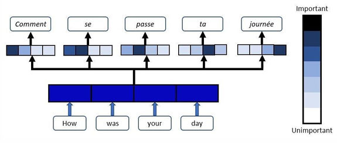
L'attention a d'abord été explorée sur les RNN où un facteur pondérant (attention) est donné à chaque état interne caché, ce qui permettait d'accentuer certains éléments plus importants. Ce facteur permet notamment sur les LSTM d'accentuer certains états internes cachés sur le convoyeur $C$ (somme pondérés des états internes passés en fonction d'un terme d'attention $\alpha_{i,j}$).
L'attention était alors dénoté par: $$ \alpha_{i,j} = softmax(e_{i,j}) $$
$e_{i,j}$ représente un vecteur de score d'alignement (ou d'attention) entre la requête $i$ et la clé $j$. Ce score d'attention est calculé en utilisant une mesure de similarité entre la requête $i$ et la clé $j$. La mesure choisit est généralement le produit scalaire.
Trois composants sont définis au niveau du score et de l'attention:
- Le veteur $Q$ (Query) qui est une représentation vectorielle de la requête d'entrée.
- Le vecteur $K$ (Keys) qui représente le contexte disponible pour la requête $Q$.
- Le vecteur $V$ qui représente l'information numérique d'attention disponible pour les clés $K$.
Le score est généralement noté: $e = Q \cdot (K)^T$.
Le vecteur $K$ sert donc à calculer la pertinence de chaque clé $k_{i,j}$ composant $K$ par rapport à la requête d'entrée $Q$. Ainsi, les bonnes valeurs d'attention $v_{i,j}$ appartenant à $V$ pourront être utilisées. Ici, $V$ n'est pas mis en oeuvre mais dans la partie sur les transformeurs ce terme apparaitra dans le calcul de l'attention.
La fonction $softmax$ est ensuite appliquée à chaque vecteur de score afin de transformer le vecteur en une distribution dont la somme des probabilités est égale à $1$, permettant donc de pondérer certains éléments passés jugés importants par le mécanisme d'attention.
Néanmoins, les LSTM ne sont pas les modèles exploitant le mieux l'attention. Les mécanismes d'attention brillent particulièrement sur les architectures à base de transformeur.
La référence suivante explique en détail l'attention:
Transformeur: Attention is all you need
Les modèles à base de transformeur ont vu le jour grâce au papier scientifique Attention is all you need publiée en 2017.
La version originale décrite dans le papier visait à réaliser des tâches de traduction. L'architecture présentée est la suivante:

C'est une achitecture encodeur-decodeur où:
- L'encodeur encode la séquence d'entrée dans un espace latent via l'utilisation d'un réseau de neurones Feed Forward afin de produire une représentation enrichie et rafiné des données. Avant cela, une couche d'attention permet d'accentuer certains segments jugés plus important sur la séquence d'entrée.
- La fonction principale du décodeur est de générer une séquence de sortie en se basant sur la représentation de la séquence d'entrée actuelle fournit par l'encodeur ainsi que les séquences précédemment générés par le décodeur (dans le contexte des NLP ce sont les tokens précédemment générés, donc les mots d'une phrase qui ont déjà été traduits). Sauf lors de la génération de la première séquence où l'entrée du décodeur est vide car aucune séquence (token) n'a encore été générée. Le décodeur applique donc une première couche d'attention sur les séquence précédemment générées afin d'accentuer l'information jugée importante. Ensuite, une seconde couche d'attention est appliqué sur la sortie de cette dernière et sur la représentation de la séquence d'entrée par l'encodeur. Cette couche d'attention permet d'accentuer l'information importante entre les séquences précédemment générées ainsi que la nouvelle séquence d'entrée. Un réseau de neurones Feed Forward composés de couches denses est ensuite appliqué afin de réaliser une tache de régression et de prédire une séquence de sortie (traduction).
Le comportement du décodeur qui consomme les séquences précédemment générées afin de prédire une nouvelle sortie s'appelle l'auto-régression.
Enfin une couche dense notée Linear est appliqué afin de réduire la dimension de sortie qui est généralement de la taille du vocabulaire en NLP. Cette couche est appliquée car généralement les couches de FFN ont une grande dimension qui sont par exemple de la taille $d_{model} = 512$ ou $1024$.
Cette couche prépare également l'application du softmax qui permet de transformer le vecteur de sortie de la couche Linear en une distribution de probabilité permettant d'exploiter le résultat du transformeur.
Remarque 1: Un Feed Forward Network (FFN) est un MLP dont la nomenclature est spécial car les FFN sont des MLP qui sont placés spécifiquement après un mécanisme d'attention. Cette nomenclature permet de distinguer les autres MLP qui pourraient être utilisés dans l'architecture.
Remarque 2: Toutes les sorties des couches internes au modèle produisent des sorties de dimensions $d_{(model)} = 512$. Ce mécanisme permet de simplifier les calculs.
Remarque 3: L'encodeur et le décodeur sont redondés $N$ fois d'où le signe $N \times$ sur le schéma, où $N=6$ dans le papier scientifique original. Cette configuration permet d'augmenter les capacités du modèle où généralement seulement une redondance ne permet pas de capturer l'entiereté des patrons complexes des données.
Remarque 4: Comme ce modèle n'utilise aucune récurrence ou convolution il n'y a aucune notion d'ordre dans les séquence. C'est pourquoi un mécanisme de positional encoding (comme décrit dans le schéma) a été ajouté dans le but d'utiliser les informations sur l'ordre d'une séquence, comme la position absolue ou relative d'un mot dans une phrase. Cet encodage à une dimension de sortie égale à $d_{model} = 512$.
Remarque 5: Souvent le terme Self-Attention revient car ce mécanisme permet que chaque élément de la séquence prêtent attention aux autres éléments de la même séquence. Des couches d'attention Multi-Head sont ici utilisées au lieu de couche d'attention utilisant le produit scalaire, car les couches multi-head peuvent apprendre en parallèle plusieurs types de relations entre les données alors que les couches traditionnelles utilisant le produit scalaire sont en mesure de capturer qu'un seul type de relation à la fois.
Remarque 6: Des liens résiduels dénotées par une flèche sont ajoutés entre chaque couche du modèle et les couches Add & norm. Les liens résiduels permettent de répondre au problème du vanishing gradient où les couches inférieurs n'ont plus de gradient durant la rétro-propagation ce qui ne permet pas de les mettres à jour, ce lien permet que le gradient se propage directement dans les couches inférieures sans passer par toute la trasformation linéaire ce qui évite que le gradient disparaissent dans les couches inférieures.
Remarque 7: Une couche d'aggrégation et de normalisation est ajoutée après chaque couche interne du modèle. Cette couche permet d'aggréger les liens résiduels, avec la sortie de chaque couche interne à laquelle un dropout a été appliqué afin de séléctionner que certains neurones de manière aléatoire. Ensuite, une couche de normalisation est appliqué afin de faciliter l'entrainement des couches suivantes.
Les modèles de diffusion
L'idée des modèles de diffusion est de prendre un échantillon $x^i$ et de graduellement lui ajouter du bruit Gaussien en $T$ étapes jusqu'à recréer l'échantillon d'origine:
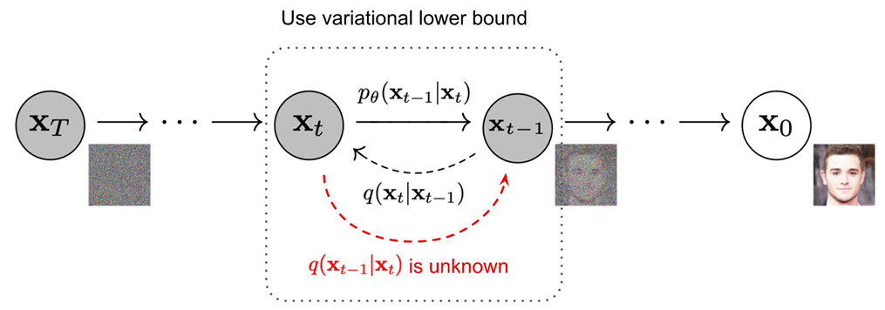
Le modèle de diffusion va dans les deux sens, le but est de pouvoir recréer l'échantillon d'origine depuis un échantillon $x_T$ tiré au hasard. Il faut donc apprendre un modèle de probabilité pour approximer les étapes inverses.
Ces modèles sont utilisés pour réaliser des taches de vision dont des entreprise comme MidJourney utilise.
CIRTD: Préparer les données d'entrainement d'un modèle (cleaning, integration, reduction, transformation, discretization)
Les ressources publiques disponibles
Le site Kaggle permet de trouver des jeu de données, le site Hugging Face permet de trouver des modèles d'apprentissage automatique.
Cross-Industry Standard Process for Data Mining (CRISP-DM)
CRISP-DM est une méthodologie définit par IBM pour les porblèmes de science des données, selon les étapes suivantes:
- Compréhension et cadrage du problème en fonction du contexte métier.
- L'exploration et la compréhension des données.
- La préparation des données (application de transformations).
- Modélisation et évaluation des performances.
- Déploiement.
La faisabilité de la solution doit également être étudiée en fonction:
- De la disponibilité des données: est-ce qu'un jeu de données existant existe ? est-ce que le données ne sont pas obsolètes ? une volumétrie suffisante de données est fournie ? la temporalité des données est cohérente avec la solution envisagée ?
- La deuxième question est: à quel point l'entreprise qui à commanditer la solution utilisera et aura confiance dans les insights suggérés par la solution?
Construction de la table de base analytique (TBA)
La TBA est la table contenant le jeu de données choisit en fonction des caractéristiques qui ont été sélectionnées pour répondre au problème et juger pertinente.
Ces caractéristiques aussi appellées variables peuvent être de deux natures:
- Variables brutes qui sont des variables qui sont directement associées au problème.
- Variables dérivées qui sont des variables qui ne sont pas directement associées au problème et qui proviennent de sources tierces. Cependant, elles sont jugées utiles et pertinentes et apporteront une valeur ajoutée à la résolution du problème.
Evaluation de la qualité des données de la TBA
La qualité d'un jeu de données peut être évaluée selon les critères suivants:
- Nombre d'observations dans la TBA.
- Le pourcentage de valeurs manquantes.
- Les valeurs aberrantes (outliers).
- La cardinalité (nombre de valeurs distintes) des caractéristiques.
- Avec des mesures statistiques (minimu, maximum, moyenne, médiane, quartiles (Q1 et Q3), écart-type) mais aussi des mesures spécialisés pour les variables discrètes ou catégrorielle telles que le mode (valeur dominante qui apparait le plus fréquemment) et la fréquence.
- Visualisation des données sous la forme d'histogramme (déduction que les données suivent une distribution? détecter les outliers?).
- Mesurer la tendance des caractéristiques via un coefficient (Skewness).
- Corrélation des caractéristique (il est important de retirer les caractéristiques qui sont corrélées afin de ne pas introduire de biais dans le modèle).
Qu'est ce que le feature engineering ?
Le feature engineering est le processus d'utiliser les techniques disponibles afin d'avoir une TBA intégrant des variables (features) optimales afin de répondre au problème posé, notamment en comprenant, explorant, transformant (dont feature scaling) et séléctionnant les caractéristiques voulues (feature selection).
Comment gérer les valeurs manquantes ?
Les valeurs manquantes sont souvent représentées par la valeur Nan signifiant Not A Number.
Si la porportion de valeurs manquantes pour une variable est élevée (60%) alors il est préferable de supprimer cette variable car la quantité d'information véhiculée est trop faible.
Sinon une valeur manquante est courrament remplaçée par la moyenne de la variable (ou la médiane) ou le mode dans le cas d'une variable discrète.
Comment gérer une caractéristique qui a une cardinalité irrégulière ?
Pour rappel, la cardinalité mesure le nombre de valeur distincte d'une variable.
Si une variable a une cardinalité de 1, cela signifie qu'elle a la même valeur pour toutes ses instances. Le variable ne contient alors aucune information utile pour le modèle prédictif, elle pourra donc être supprimée.
Si la cardinalité d'une variable numérique est plus faible que le nombre d'instance alors elle doit être investiguée car c'est peut une variable catégorielle qui a mal été catégorisé. Car une variable numérique par nature devrait avoir une cardinalité forte.
Lorsqu'une variable catégoriel a été faussement catégorisée comme une variable numérique, il est nécessaire de lui appliquer le processus de discrétisation afin de retrouver une variable catégorielle depuis une variable numérique. Certaines discrétisations sont basées sur les transformations de Fourrier discrètes, cependant ces éléments relève des pratiques de traitements du signal.
Comment gérer le bruit issus des valeurs aberrantes (outliers) ?
Les valeurs aberrantes sont facilement détectables en construisant un historgramme pour les variables discrètes et en affichant une courbe pour les variables numériques. Elles se distinguent car elles sont graphiquement isolées.
Plusieurs méthodes existent pour remplacer les valeurs aberrantes (outliers). Une méthode consiste à utiliser l'amplitue interquartile en regroupant les valeurs entre une borne inférieure $b_{inf}$ et une borne supérieure $b_{sup}$:
- La borne supérieure est définie étant $b_{sup} = Q3 + 1.5 \times \text{espace_interquartiles}$.
- La borne inférieure est définie étant $b_{inf} = Q1 - 1.5 \times \text{espace_interquartiles}$.
- $1.5$ est donc une constante fixe qui peut être ajustée en fonction du contexte.
Par conséquent, toute valeur aberrante inférieure à $b_{inf}$ sera remplaçée par la valeur de $b_{inf}$ et toute valeur supérieure à $b_{sup}$ sera remplaçée par $b_{sup}$.
Les valeurs abérrante peuvent également être localisées en utilisant la technique de la boite à moustache qui représente le minimum, maximum, la médiane et les quartiles:
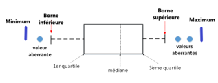

Comment gérer les variables corrélées ?
La corrélation entre deux variables peut être calculée en utilisant le coefficient de corrélation (de Pearson) pour les variables de type numérique: $$ corr(a,b) = \frac{cov(a,b)}{\sigma_a \cdot \sigma_b} \in [-1, 1] $$
où $cov(a,b)$ est ma covariance entre les deux variables définie par $cov(a,b) = \frac{1}{n-1} \sum_1^n (a_i - \mu_a) \cdot (b_i - \mu_b)$ où $\mu_a$ et $\mu_b$ sont les moyennes respectives de chaque variable.
$\sigma_a$ et $\sigma_b$ sont les variances respectives de chaque variable.
- Si $corr(a, b) = 1$ alors a et b sont fortement positivement corrélées.
- Si $corr(a, b) = -1$ alors a et b sont fortement négativement corrélées.
- Si $corr(a, b) = 0$ alors a et b sont indépedantes, c'est ce que l'on cherche à obtenir.
Lorsque deux variables sont fortement corrélées il est nécessaire d'en retirer une afin de réduire la dimensionnalité et réduire le biais sur le modèle appris.
Un concept important en apprentissage automatique: une variable aléatoire continue
Dans le monde réel, les données sont très rarement déterministes. C'est pourquoi il est nécessaire de capturer l'incertitude des données et les variables aléatoires, qui sont un concept tiré des mathématiques et des probabilités, permettent de modéliser ce comportement.
Les distributions souvent utilisées pour caractériser la distribution d'un jeu de données:
Les distributions de bases sont:
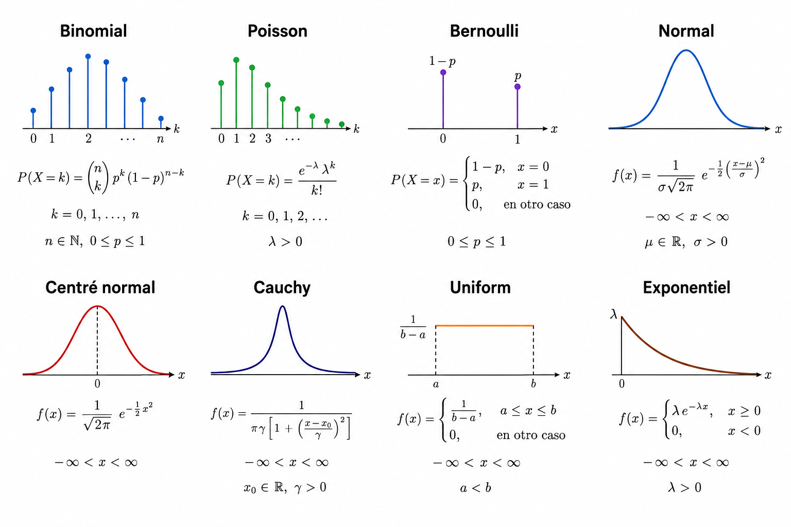
Chaque distribution à son role. Par exemple:
- Poisson est utilisée pour compter le nombre de fois qu'un évènement est arrivé dans un intervalle donnée.
- Bernoulli est utilisé pour modéliser une expérience aléatoire à deux résultats possibles (variable aléatoire binaire) pour un seul et unique essai.
- Binomial est utilisée pour modéliser le nombre de succès dans une séquence de $n$ essais indépendants ou chaque essai à la même probabilité de succès. C'est donc la base des problèmes binaires. C'est également la généralisation de la loi de Bernoulli pour $n$ essais.
- Normal (Gaussienne) décrit des données symmétriques autour d'une moyenne avec une variance $\sigma^2$.
- Normal Centrée Réduite est une version standardisée de la loi normal avec une moyenne $\mu = 0$ et une variance $\sigma = 1$. Elle permet notamment de comparer des données de différentes échelles en appliquant le processus de strandardisation.
- Cauchy est similaire à la distribution normale mais ici il y a des valeurs extrêmes plus lourds (outliers). Pas de moyennes ni de variance défini.
- Uniforme décrit un intervalle $[a,b]$ dans lequel toutes les valeurs sont équiprobables.
- Exponentielle modèlise le temps dans un processus de Poisson. Par exemple, permet d'estimer le temps d'attente entre deux clients ou la durée de vie d'un composant éléctrique.
D'autres distributions plus spécialisés existent tels que les distributions Alpha, Beta, Laplace, Dirichlet, etc.
Feature scaling: Différence entre la standardisation et la normalisation?
La standardisation trasnforme les données pour qu'elles aient une moyenne égale à $0$ et un écart-type égal à $1$ afin qu'elles suivent une distribution normal standard.
La normalisation tansforme les données pour qu'elles soient comprises dans un intervalle donné intégrant une borne supérieur $B^{+}$ et une borne inférieure $B^{-}$. Génarelement, c'est entre 0 et 1 ou -1 et 1.
Attention: la standardisation n'est pas un cas particulier de la normalisation, ce sont deux concepts distincts.
Une donnée numérique $x$ est standardisée comme suit: $$ z = \frac{x - \mu}{\sigma} $$
La nouvelle valeur $z$ obtenue est satndardisée.
Concrètement, $\sigma$ qui est l'écart-type n'est pas utilisée mais l'écart-déviation absolu moyen est utilisé noté $s_{f}$ notamment dans la fonction StandardScaler de Sickit-Learn, car il est considéré plus robuste puisqu'il ne met pas les valeurs au carrées donc cela réduit les outliers qui sont amplifiées sinon.
D'autre part, il existe différents type de normalisation:
La normalisation Min-Max: $$ x_{normalized} = \frac{x - min_{x}}{max_{x} - min_{x}} $$ où, $min_x$ est la valeur minimale d'une caractéristique donnée et $max_x$ est la valeur maximale et $x$ est la valeur d'une des lignes de la caractéristique donnée qui doit être normalisée.
La normalisation Min-Max dans un interval $[a, b]$ cible: $$ x_{normalized} = \frac{x - min_{x}}{max_{x} - min_{x}} \times (b-a) $$
La normalisation Z-score: $$ x_{ij} = \frac{x_{ij} - \mu_i}{\sigma_i} $$ où $i$ est la i-ème caractéristique (colonne) et $j$ une des valeurs de la caractéristique (ligne).
Une diversité de techniques de normalisation existe également.
Méthodologie d'apprentissage automatique
Après la phase de préparation des données, les étapes suivantes sont généralement suivies lorsqu'un modèle de ML simple doit être adopté:
- Choisir un algorithme d'apprentissage supervisé.
- Entrainer l'algorithme en utilisant la validation croisée.
- Mesure la performance du modèle appris selon les métriques (précision, recall et F1)
- Calibrer le modèle pour trouver les bons hyper-paramètres (GridSearch, RandomizedSearchCV).
- Tester le meilleur modèle trouvé à l'étape 4 sur le jeu de test en mesurant les métriques (précision, recall et F-mesure)
Adapter la classification binaire pour qu'elles soient multiclasse: One vs One One vs All
L'IA générative moderne
L'IA générative moderne traite principalement des taches de traitement du langage naturel (NLP) comme les Large Language Model (LLM) de type ChatGPT, Claude, Gémini, etc. Ils réalisent également des taches de vision telles que modifier et générer des images. Néanmoins, les LLM modernes ne comprenne pas bien les images sans légende ou texte relié à l'image. Une technologie récente consiste à faire en sorte que le LLM associe des éléments d'une image à un texte donné, cette technique s'appelle CLIP.
Lorsque des données en entrée ou en sortie sont de types différents, c'est à dire texte, audio, image, etc. On dit que ces données sont multimodales, on dit également que le LLM a une entrée ou sortie multimodale.
Les LLMs modernes utilisent une unité qui est le token. En NLP, le processus de tokenization permet de segmenter un texte donné en de plus petites unités (token) qui sont traitées individuellement par le modèle.
Trois types d'implémentations principales existent:
- Un orchestrateur avec un LLM sans base de connaissance externe ni de capacités d'exécution d'actions par le LLM.
- Un orchestrateur avec un LLM et Retrieval-Augmented Generation (RAG), où le LLM pourra chercher des connaissances dans une base de connaissance externe mais toujours sans capacités d'actions propres.
- Un orchestrateur avec un LLM, un Retrieval-Augmented Generation (RAG) et un serveur Model-Context-Protocol (MCP), ici le LLM sera en mesure de chercher des connaissances (base externe, Internet, etc.) et d'effectuer des actions sur le serveur MCP (lire des fichiers, écrire dans des fichiers, etc.). On parle alors d'IA agentique.
Détail d'une architecture agentique moderne
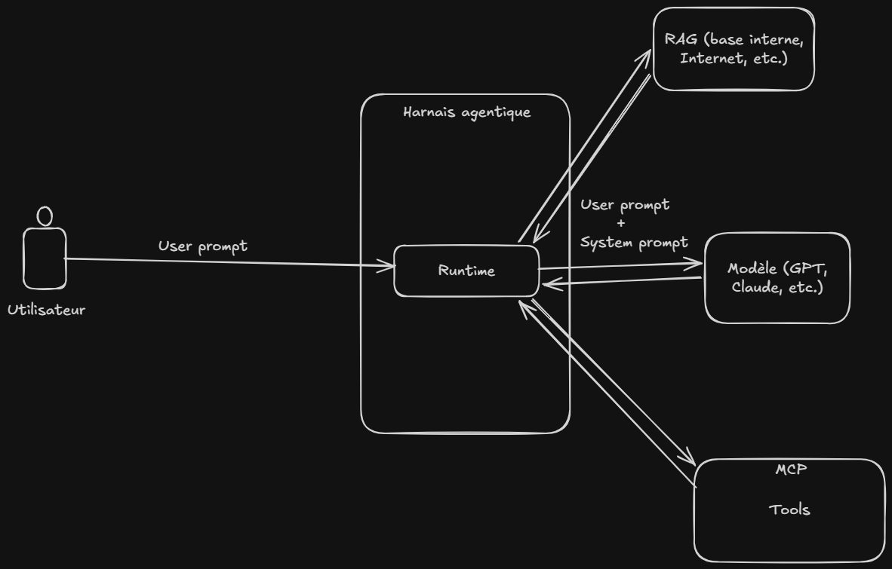
Le worklow classique pour une IA agentique moderne est que l'utilisateur final renseigne un prompt appelé le user prompt qui est ensuite transmis au harnais de la solution afin d'être traiter par le modèle. Le harnais aggrège le system prompt qui contient des instructions spécifiques pour le modèle notamment en termes de guideline et sécurité. Le modèle qui est un LLM moderne discerne si avec ce prompt il est nécessaire de récupérer des connaissances externes alors le runtime interprète cette demande en faisant un appel au RAG, de même pour le serveur MCP, si le modèle juge qu'il est nécessaire d'appeler un outil afin de réaliser une action (lecture, écriture de fichiers, etc.) alors le runtime interprète cette demande en faisant un appel au serveur MCP.
Les systèmes de RAG sont principalement basé sur Open Knownlede Format (OKF) de Google. OKF est un standard ouvert qui permet de structurer les connaissances d'une entreprise afin de les rendre exploitables par un agent IA.
Le runtime est donc le système qui exécute le code du modèle et le harnais est un framework (un ensemble d'outil) qui permet d'orchestrer et d'ordonner l'exécution du modèle, les appels aux outils disponibles (serveur MCP), récupérer des connaissances externes (RAG) ainsi que les différents workflows que pourraient avoir besoin l'agent.
Fonctionnement d'un LLM moderne
L'entrainement est une tache très couteuse en temps et en puissance de calculs pour les LLM modernes car ils contiennent des milliards de paramètres à mettre à jour. Le processus d'entrainer un LLM afin de réaliser une tache spécifique s'appelle le fine-tuning. Dans le but d'utiliser un LLM qui a déjà été entrainé une technique de fine-tuning consiste à adapter un LLM pré-entrainé pour une tache spécifique, cette technique s'appelle Low-Rank Adaptation (LoRa). Elle permet de considérablement réduire le temps et la puissance de calcul nécessaire d'un entrainement classique.
Une brique d'apprentissage par renforcement est également courrament ajoutée dans les architectures modernes. Cette brique permet d'aligner le modèle avec des valeurs humaines notamment par raison de sécurité où le LLM recevra de la part d'un évaluateur humain des pénalités pour tous les prompts comportant des demades de hacking où le LLM refusera par exemple, car initialement il ne contient pas ces guardrails (politique de sécurité).
Ci-dessous, le détail de GPT2:
from transformers import GPT2LMHeadModel, GPT2Tokenizer
model = GPT2LMHeadModel.from_pretrained("gpt2")
Warning: You are sending unauthenticated requests to the HF Hub. Please set a HF_TOKEN to enable higher rate limits and faster downloads. WARNING:huggingface_hub.utils._http:Warning: You are sending unauthenticated requests to the HF Hub. Please set a HF_TOKEN to enable higher rate limits and faster downloads.
print(model)
GPT2LMHeadModel(
(transformer): GPT2Model(
(wte): Embedding(50257, 768)
(wpe): Embedding(1024, 768)
(drop): Dropout(p=0.1, inplace=False)
(h): ModuleList(
(0-11): 12 x GPT2Block(
(ln_1): LayerNorm((768,), eps=1e-05, elementwise_affine=True)
(attn): GPT2Attention(
(c_attn): Conv1D(nf=2304, nx=768)
(c_proj): Conv1D(nf=768, nx=768)
(attn_dropout): Dropout(p=0.1, inplace=False)
(resid_dropout): Dropout(p=0.1, inplace=False)
)
(ln_2): LayerNorm((768,), eps=1e-05, elementwise_affine=True)
(mlp): GPT2MLP(
(c_fc): Conv1D(nf=3072, nx=768)
(c_proj): Conv1D(nf=768, nx=3072)
(act): NewGELUActivation()
(dropout): Dropout(p=0.1, inplace=False)
)
)
)
(ln_f): LayerNorm((768,), eps=1e-05, elementwise_affine=True)
)
(lm_head): Linear(in_features=768, out_features=50257, bias=False)
)
Comme décrit ci-dessus, GPT2 est basé sur une architecture à transformeur avec deux parties principales:
GPT2LMHeadModel(
(transformer): GPT2Model( ... )
(lm_head): Linear(in_features=768, out_features=50257, bias=False)
)
où (transformer) est le coeur du modèle et (lm_head) est la couche de sortie qui transforme les données encodées (embeddings) du modèle en probabilité pour chaque token du vocabulaire. in_features est la dimension des espaces encodées de sortie (embeddings) et out_features est la taille du vocabulaire de sortie (c'est à dire le nombre maximal de token unique que le modèle peut générer).
Remarque: Le vocabulaire de sortie est différent de la taille maximale du context window. Le context window est le nombre maximal de token que le modèle peut traiter en une seule passe. Ici, il est de 1024 tokens comme défini dans (wpe): Embedding(1024, 768).
Donc si on détaille le coeur du modèle, on a:
GPT2Model(
(wte): Embedding(50257, 768)
(wpe): Embedding(1024, 768)
(drop): Dropout(p=0.1, inplace=False)
(h): ModuleList(
(0-11): 12 x GPT2Block(
(ln_1): LayerNorm((768,), eps=1e-05, elementwise_affine=True)
(attn): GPT2Attention(
(c_attn): Conv1D(nf=2304, nx=768)
(c_proj): Conv1D(nf=768, nx=768)
(attn_dropout): Dropout(p=0.1, inplace=False)
(resid_dropout): Dropout(p=0.1, inplace=False)
)
(ln_2): LayerNorm((768,), eps=1e-05, elementwise_affine=True)
(mlp): GPT2MLP(
(c_fc): Conv1D(nf=3072, nx=768)
(c_proj): Conv1D(nf=768, nx=3072)
(act): NewGELUActivation()
(dropout): Dropout(p=0.1, inplace=False)
)
)
)
(ln_f): LayerNorm((768,), eps=1e-05, elementwise_affine=True)
)
Les deux premières couches sont des couches d'encodage (embeddings):
- Word Token Embeddings (wte) qui est une couche d'encodage qui convertit chaque token en un vecteur numérique.
- Word Position Embeddings (wpe) qui est une couche d'encodage qui ajoute l'information de la position de chaque token dans la séquence.
Ces deux couches donnent en sortie une couhe de dimension $768$ donc il peut être déduit que $d_{model} = 768$. Toutes les couches internes au modèle produiront donc des sorties de dimensions $d_{model} = 768$.
- Une couche de dropout qui permet de faire de la régularisation en éteignant aléatoirement 10% (
p=0.1) des neurones de la couche d'entrée pendant l'entrainement afin de réduire le sur-ajustement.
Ensuite 12 couches de GPT2Block qui forme le coeur du modèle:
- Une couche de normalisation
LayerNormqui permet de normaliser les données et donc de stabiliser l'entrainement et de converger plus rapidement. - Une couche d'attention
GPT2Attentioncontenant(c_attn): Conv1D(nf=2304, nx=768)qui est une couche de convolution d'une unique dimension qui permet de projeter l'embedding d'entrée en trois vecteurs: Q (queries), K (keys) et V (values) avecnx=768qui est la dimension en entrée etnf=2304qui est la dimension en sortie qui correspond à3 x 768car on concatène Q, K et V. Une autre couche de convolution suit cette couche,(c_proj): Conv1D(nf=768, nx=768)cette couche projette l'atention calculée à la dimension normalisée $d_{model} = 768$. Une couche de dropout est ensuite appliquée à la sortie de l'attention (attn_dropout) ainsi qu'aux connexions résiduelles (resid_dropout). - Une autre couche de normalisation
LayerNormest appliquée avec le même but que précedemment.
- Une autre couche de normalisation
- Puis une couche
GPT2MLPqui est un Feed Fordward Network (FFN) qui est un type de MLP qui s'applique après une couche d'attention. Cette couche permet de réaliser une tache de régression et de prédire une séquence de sortie donc elle la couche d'apprentissage principal.GPT2MLPintègre une couche de convolution qui permet d'étendre temporairement la dimension des embeddings de768 (nx=768)à3072 (nf=3072), ensuite une autre couche de convolution réduit la dimension des embeddings de retour à768. L'augmentation puis la réduction de la dimension est du au fait qu'en augmentant le nombre de neurones il est possible de capturer des patrons plus complexes dans les données et ensuite il est nécessaire de réduire la dimension à la valeur normalisée $d_{model} = 768$ pour que ça soit traitée par la prochaine couche. La prochaine couche est une couche d'activation GELU (Gaussian Error Linear Unit) qui est une version améliorée et similaire de la fonction d'activation RELU. - Au final, une dernière couche de normalisation est appliquée avant de sortir sur la couche de sortie
(lm_head).
En résumé, le modèle GPT2 est très similaire à une architecture à transformeur. Néanmoins, il comporte uniquement le décodeur avec de l'embedding, des couches d'attention, un FFN et une couche de sortie linéaire.
Etat de l'art LLM
L'état de l'art est fréquemment situé au niveau d'une technique qui s'appelle Micture of Experts (MoE) qui permet de pré-entrainer un modèle de taille conséquente plus rapidement. En effet, la taille du modèle est importante danns la qualité de la solution car il est préferable d'entrainer un plus gros modèle avec peu d'étapes qu'un petit modèle avec de nombreuses étapes.
Les modèles MoE permettent également d'avoir des inférences plus rapides avec un modèle classique qui aurait le même nombre de paramètres.
Remarque: Le terme inference est souvent utilisé dans les articles écrit en Anglais. Ce mot se réfère à la génération des réponses par le LLM. Par exemple, on dira qu'un modèle A a une inférence plus rapide que le modèle B, c'est à dire qu'il génère des réponses de même qualité que le modèle B mais plus rapidement.
L'intérêt donc du modèle MoE est qu'il a les mêmes performances mais plus rapidement que les modèles denses classique.
Pour cela, MoE modifie deux éléments d'une architecture à transformeur classique:
- Une couche Sparse MoE, également appelée Switching FFN, est utilisée au lieu de la couche classique Feed Forward Network (FFN), utilisée pour prédire les sorties du modèle. Une couche MoE à un certain nombre d'experts où chaque expert est un réseau de neurone classique (MLP). En pratique, ces réseaux sont également des FFN (car MLP placés après une couche d'attention), néanmoins ces réseaux peuvent être plus complexes que des MLP/FFN dans certaines architectures (qui peuvent être un empilement de MoE).
- Un routeur qui détermine quel token est envoyé à quel expert. En réalité, un token peut être envoyé à un ou plusieurs experts, chaque expert développant une expertise spécifique via un MLP dédié. La façon de discrimner à quel expert router un token est donc crucial. Le routeur utilise généralement le deep learning et est pré-entrainé en même temps que le reste du réseau de neurones.
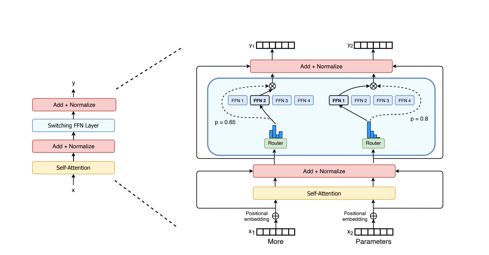
Ces modèles sont donc plus efficacement entrainés. Néanmoins, ils généralisent mal lors des étapes de fine-tuning, c'est à dire qu'ils ont tendance à trop apprendre les données d'entrainements (sur-apprentissage) à cause de leur nature d'experts.
Au niveau inférence, un modèle MoE peut avoir le même nombre de paramètres qu'un modèle dense classique. Cependant, seul certains d'entre eux sont utilisés dans les inférences grâce à la nature d'expert (il n'y a pas besoin d'utiliser tous les réseaux mais seulement ceux dont les experts ont été choisis par le routeur). Ce comportement rend un modèle MoE plus rapide en inférence, c'est à dire pour produire un nouveau message à capcités égales.
Elimination de la rétro-propagation dans l'apprentissage profond
De récents articles détaillent également des techniques afin d'éliminer le mécanisme de rétro-propagation dans l'apprentissage profond: What if backpropagation was not needed anymore ?. Néanmoins, ce genre de technique n'est pas encore à un stade mature.
Orchestration d'agent
Récemment, des frameworks tels que la suite LangChain, LangGraph et LangSmith ont émergés afin d'orchestrer un workflow contenant plusieurs agents. Chaque agent a un rôle spécifique et sont complémentaires ensemble.
Ce type de technologie est notamment utilisé en ingénierie logicielle afin de construire par itération la solution voulue via des mécanismes de boucles (loop) qui fournissent un retour à l'agent une fois l'itération réalisée. Notamment, si le modèle n'intègre pas suffisamment de paramètres, ou si l'architecture des boucles n'est pas optimale ou si le problème est trop complexe, le système ne convergera pas vers une solution ou consommera excessivement des tokens. Il est donc nécessaire d'encarder de façon stricte et claire le comportement de ces boucles. Une discipline a émergé de ce problème qui est le loop engineering.
Au fil des incrémentations, de nombreux concepts ont émergés:
- Prompt engineering est la pratique de rafiner le prompt utilisateur (instructions explicites de l'utilisateur finale) avec le system prompt qui contient les instructions implicites (guidelines, sécurité, format entrée/sortie, etc.).
- Le prompt engineering ne permet pas d'occuper l'entiereté de la fenêtre de contexte du modèle (context window). Par conséquent, la place restante pourrait être occupée par des informations de contexte de l'agent. Le Context engineering est donc la pratique par laquelle l'agent récupère des informations de contexte telles que l'accès à un RAG ou serveur MCP.
- Néanmoins, la fenêtre de context tend à être entièrement remplie voir dle contenu doit être résumé afin qu'il rentre dans la taille du context window. C'est pourquoi le Harness engineering existe, le harnais (harness) permet de gestionner la fenêtre de contexte et notamment les taches d'appel du RAG/MCP sont délégués au harnais pour décharger le context window du modèle (qui pouvait se retrouver complètement rempli et de l'information pouvait être perdue).
- Loop engineering est le fait que l'agent itère séquentiellement sur l'appel de ses ressources (tools (MCP), informations externes (RAG), etc.) jusqu'à parvenir à la solution finale voulue. Le loop engineering est donc le faite d'itérer dans des boucles qui peuvent également contenir des boucles elles-mêmes. Ils convient de noter que cette pratique est couteuse en tokens.
Le loop engineering se base sur 6 primitives:
- L'automatisation qui est la découverte des taches à réaliser ainsi que leur triage qui est le fait de les classe afin de prioriser certaines taches à d'autres.
- Avoir des worktress afin que deux agents qui travaillent en parallèle n'impacte pas le travail de l'autre.
- Ecrire des compétences (skills) qui permettent à l'agent d'avoir des actions encadrées qu'il peut effectuer afin de répondre aux problèmes. Généralement, ces skills contiennent les connaissances autour du projet.
- Avoir des plugins et connecteurs afin de connecter les tools (outils MCP) à l'environnement.
- Avoir des sous-agents qui vérifient les résultats des agents principaux.
- Suivre l'état d'avancement des éléments dans la chaine.
Ensuite, le prompt de contexte qui est fourni en entrée du workflow doit respecter le formattage suivant afin d'encadrer le problème:
# Description des tâches à réaliser
- Définir le rôle du LLM
- Expliquer le processus itératifs afin de parvenir à une solution
# Format d'entrée de la boucle
- Spécifier le format d'entrée de la boucle (JSON spécifique, etc.)
# Format de sortie de la boucle
- Spécifier le format de sortie du LLM (JSON, texte, etc.)
# (Optionnel) Lister les transformations de boucles possibles
- Des transformations peuvent être appliquées dynamiquement à certaines boucles, énumérer les actions possibles afin que le LLM en ait connaissance.
# Enumérer les actions possibles
- Spécifier l'ensembles des actions et outils à disposition en expliquant leur format (RAG, MCP, etc.)
# Contexte hardware
- Fournir des détails à propos du matériels cibles (OS, GPU, etc.)
# Gestion des pannes/crash
- Spécifier des guidelines pour répondre à certains crashs
Cet article donne une introduction à l'orchestration agentique mais ne vise pas à fournir une solution complète. Néanmoins, l'orchestration agentique est couteuse en puissance de calcul. Des modèles plus léger peuvent être adoptés mais ils ne convergent pas autant régulièrement vers une solution.
Remarque: Par ailleurs, une pratique s'appelant la distillation de connaisances d'un modèle existe. Cette technique se réfère au processus d'extraire, condenser et de transférer les connaissances d'un modèle lourd à un modèle ayant moins de paramètres, ce qui permet d'améliorer la capacité de généralisation du plus petit modèle.
Agent léger local
En général, les agents légers locaux (de type qwen2.5:0.5b, qwen2.5:1.5b, qwen2.5:3b, etc.) ne convergent pas vers une solution lors de problèmes complexes (par exemple: pipeline visant à créer le PoC associé à une CVE et à déployer un environnement de bacs à sable afin de le tester). Il convient de noter que les modèles légers qwen2.5:* sont parmi les meilleurs du marché. Il a également été remarqué que les modèles supérieurs à qwen2.5:3b sont en capacité de formater une demande au serveur MCP et donc d'appeler des tools.
Cependant, le projet Colibri vise à augmenter cette limite en unifiant la mémoire RAM et SSD afin d'offrir des accès mémoire plus rapide et donc d'accélerrer également la puissance de calculs, ce qui permet par exemple de lancer le modèle GLM-5.2 contenant 744 milliards paramètres sur un ordinateur classique sous réserve de disposer de la mémoire SSD suffisante.
World models
Le problème que pose les modèles actuels est qu'ils ne comprennent pas authentiquement le monde réel car ils sont soient représentés sous la forme de distribution de probabilité ou du texte pour les LLMs. Donc, un modèle n'est pas en mesure de comprendre la réalité comme un être vivant qui est en mesure de le faire via ses cinq sens.
C'est pourquoi l'IA appliqué à la biologie (biotechnologie) sera un milieu de recherches important sur les années à venir car cette discipline se rapproche d'une forme de compréhension plus fines pour les systèmes d'auto-apprentissage créés.
Annexe
Références:
- Hadoop Distributed File System: https://www.youtube.com/watch?v=C3-FIM2xTIw
- TPU vs GPU vs CPU: https://www.youtube.com/watch?v=MUWAbpg1xLo
- Data lakehouse: https://www.youtube.com/watch?v=taSmwcqdkQk
- https://www.geeksforgeeks.org/machine-learning/ml-gradient-boosting/
- https://fr.wikipedia.org/wiki/Machine_%C3%A0_vecteurs_de_support
- https://letsdatascience.com/blog/isolation-forest-the-random-cut-secret-to-fast-anomaly-detection
- https://www.geeksforgeeks.org/machine-learning/local-outlier-factor/
- https://www.geeksforgeeks.org/deep-learning/architecture-and-working-of-transformers-in-deep-learning/
- https://ml-compiled.readthedocs.io/en/latest/normalization.html
- https://www.ibm.com/docs/fr/spss-modeler/saas?topic=dm-crisp-help-overview
- https://www.youtube.com/@ByteByteGo/videos
- https://youtu.be/55pTFVoclvE?si=HqPyZPrPjWE3S4FU
- Comprendre l'Attention: https://www.youtube.com/watch?v=eo1BZCcFYvI
- RAG vs Agentique: https://www.youtube.com/shorts/4jYZg6pkXyc
- Agent OpenAI: https://www.youtube.com/watch?v=5V8tP5jDZ8U
- Reverse enginnering un LLM: https://www.youtube.com/watch?v=-bJs_F9COFE
- Entrainer un LLM: https://github.com/FareedKhan-dev/train-llm-from-scratch
- Auto-orchestration agentique: https://arxiv.org/pdf/2511.00592
- Patrons de conception agentique qui ont émergés: https://www.youtube.com/shorts/Z7bewxSJHL4
- JEV: https://www.youtube.com/watch?v=VE5dsWll06M
- JEV 2: https://www.youtube.com/watch?v=vj7hysh0mOI